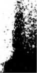

Cihan, kollarını açmış yaklaşan ustasına doğru yürüdü sendeleyerek. “Hintli filbaz” dedi Sinan. “Kızgınım sana, kafana göre nasıl gidersin... amma seninle iftihar ediyorum oğlum.”
Bilahare öğrendiler ki yeniçeri ağası hakikaten hastaydı. Fakat yeniçerilere emir vermekte gecikmesinin nedeni bu değildi. Ulufelerine zam isteyen ordu, yangını kendi önemlerini ispatlamak için bir fırsat olarak görmüştü. Hatta ilk kıvılcımı onların çıkardığına dair rivayetler dolaşıyordu etrafta. Neticede sadrazam ulufeleri artırmayı; yeniçeri ağası, adamlarına yangını söndürmelerini emretmeyi; yeniçeriler de ahaliye yardım etmeyi ağırdan almıştı. Herkes bu kadar yavaş ve isteksizken, süratli ve kararlı ilerleyen tek şey yangın olmuştu.
Cihan ile Çota tepeden tırnağa kuruma bulanmış vaziyette ustalarının evine gittiler. Cihan hayvanın ayaklarını sardı. Tırnaklarından ikisi kırılmıştı. Derisinin muhtelif yerlerinde yanıklar vardı. O geceden geriye hiç iyileşmeyecek yaralar kalacaktı.
Sinan, fil ve filbaz bahçede oturup aşağıdaki şehre baktılar. Oradan buradan incecik dumanlar yükseliyordu hâlâ. Şafak vakti ne tek bir kuş öttü, ne bir ocak çıtırdadı, ne martılar süzüldü. Her şey sükûta gömülmüştü. Ayaz çıktı; gecenin hararetinden sonra serinlik insana tuhaf geliyordu. Yangın tamamen sönünce anlaşılacaktı felaketin büyüklüğü. Ancak o zaman görülecekti ki, İstanbul'un yansından çoğu kül olmuştu.
“Yangın bize ders verdi” dedi Sınan hepsi tekrar bir araya geldiklerinde. “Ders veren hoca, bir gün döner gene sorar, öğrendiniz mi diye. O vakit evet diyeceğiz. Şehri yeni baştan inşa edeceğiz.”
Sinan o hafta saraya gidip gerekli müsaadeleri aldı. Yemeden içmeden çalışıp, yeni taslaklar hazırladı. Sokaklar her iki yanlarından, yarım arşın genişletilecekti. İki kattan yüksek ev olmayacaktı. Bu kurala uymayan ne varsa yıkılacaktı. İnşa etmek, hatta sağlam binalar inşa etmek bile kâfi değildi. Depremlere ve yangınlara böylesine açık bir şehirde, afetleri yok sayarak yaşamak bağışlanmaz cehaletti.
***
Artık iyice yaşlanmıştı Hintli hizmetkâr Sangram. Bir akşam, tıpkı seneler evvel yaptığı gibi bir kâse sütlaçla çıkageldi. Saray mutfağından koparmıştı besbelli. Ben yerken sessizce izledi. Sonra dedi ki: “Delibozuk Reis'in ettiğini duydun mu?”
Az kalsın elimden kaşığı düşürüyordum. “Ne olmuş ki?” dedim sakin görünmeye çalışarak.
Kaptan Garreth, seneler evvel kendi donanmasına ihanet edip Osmanlı tarafını seçen, burada el üstünde tutulup emrine gemiler verilen ama kimsenin güvenmediği bu deniz kaçkını, bir çatışma esnasında, papanın safına geçivermişti. Şayet yakalanırsa kazığa oturtulacağını bildiğinden artık İstanbul'a gelemiyordu. Hoş, keyfi yerindeydi. Sangram'ın duyduğuna göre, Papalık tarafından ona düzinelerce denizci ve dört gemi tahsis edilmişti. Sularda saldıracak Osmanlı arıyordu şimdi.
Bunları öğrenince allak bullak oldum. Onlarca parçaya bölündü ruhum; ne düşüneceğimi, nasıl hissedeceğimi şaşırdım. Seneler evvel saraya varmama sebep, Gâvur Kaptandı. O uğursuz gemiyi hatırladım. O korkunç günü. Filin yanında, Hindistan'dan hayvanla beraber gönderilmiş hakiki filbaz seyahat ediyordu. Bir tartışma kopmuştu adamla denizciler arasında, kim bilir hangi saçma sebepten. Birbirlerinin dilini bile bilmezken Kaptan Garreth kılıcını çektiği gibi, herkesin gözü önünde doğramıştı adamı. Fili de filbazın ölüsüyle birlikte sulara atacaklardı. Tam o esnada Delibozuk Reis'in aklına cin gibi bir fikir gelmişti. Tüm hayatımı değiştirecek bir desise... Ben bunları hatırlarken Sangram ile göz göze geldik. Ne diye bana anlatmıştı Delibozuk Reis'i? Kuşku düştü içime. “Biliyordun demek...” dedim usulca.
“Nasıl bilmem?” dedi. “Bizim oralardan olduğunu söyledin. Ne tek kelime dilimizi konuşurdun, ne anlattıklarına inandım.”
“Öyleyse niye şikâyet etmedin? Niye demedim bu oğlan sahtekâr, yalancı? Hakiki filbaz değil deseydin?'
Gülümsedi. “Yapacaktım ama... kanım kaynadı sana zaar. İstemedim başına bir hal gelsin. Kâfi derece acılar çekmiş gibiydin; bir de ben derdine dert eklemek istemedim:
Geçmiş... O günlerde, Delibozuk Reis'in yanında miço olarak çalışmaya henüz başlamıştım. Anamın ölümüne sebep olan üvey babamdan kaçıp gelmiştim. Gidecek yerim yoktu; Anadolu çocuğuydum. İzmir'e varmış, limanda yatmış, yalvar yakar karın tokluğuna kendimi bir gemiye kabul ettirmiştim. Nereden tahmin edebilirdim kaptanın belalı olduğunu. Ne İstanbul'u bilirdim, ne açık denizleri. Ne fillerden anlardım, ne saray adabından. Ama seyahatin sonunda Kaptan Garreth beni Hintli Filbaz kılığında Topkapı Sarayına sokmaya karar vermişti. Bu sayede Sultan Süleyman'ın mücevherlerine ulaşacaktı.
Böylece sırf onun tezgâhladığı yalana ayak uydurarak çıkıp gelmiştim. Ondan sonra hep masallar uydurmuştum. Öteki bakıcılara, Sangram'a, Mihrimah'a, hatta kendime... Giderek saray hayatına uyum sağlamış, derken Sinan'la beraber çalışmaya başlayarak yeni bir hayata kapılmıştım. Ama Delikozuk Reis, her zaman zihnimin bir köşesini işgal etmişti. Yaklaşan bir fırtına bulutu gibi. Şimdi o tehlike ortadan kalkınca kuşlar gibi hürdüm. Ve ne gariptir ki, gitmek istemiyordum. Ne beyaz fili bırakabilirdim, ne ustam Sinan'ı. Burası yuvam olmuştu; yalandan içine girdiğim bu hayat, artık tek hakikatimdi.
Kalktım. Sangram’ın yanına oturdum, elini öptüm. “Hey gidi çılgın Cihan, nerden nereye?” dedi tekrar, şefkatle.
Ne tuhaf. Bizi koruyan kollayan insanlar vardır etrafımızda. Hiç fark etmesek de onlar oradadır daima. Karşılık ya da minnet beklemeden, sadakatle, sevgiyle, sessizce... Nice sonra anlarız kıymetlerini. Hep geç kalırız teşekkür etmekte.
***
Sultan Selim hayvanat bahçesini genişletmeye niyetliydi. Senelerce avluda yaşayan mahlukata kayıtsız kalan babasının aksine, yeni padişah hayvanlarla alakadardı. Bahçeyi sık sık ziyaret ediyordu; kimi zaman tek başına gelse de genellikle yanında maiyeti oluyordu. Büyük kedileri seviyordu - kaplanlar, çitalar, aslanlar. Bir de nedense devekuşuna kanı kaynamıştı. Maymunlar esrarengiz hareketleriyle merakını cezbediyordu. Ama en sevdiği Çota'ydı. Bilhassa beyaz filin sırtında gezinmekten memnundu. Bu maksatla, daha geniş bir mahfe ve katlanabilen bir merdiven yaptırmıştı kendine. Çota'ya, yarım fersah öteden dikkat çeken yeni bir örtü diktirilmişti. Parlak firuze renkli, simli püsküller ve tavus kuşu tüyleriyle süslü. Maalesef Cihan'a da onunkiyle uyumlu bir esvap verilmişti - üzerine mavi laleler işlenmiş, gümüş renkli, pırıltılı bir yelek ile beyaz bir sarık. Gülünçlük raddesinde gösterişliydi. Şehirdeki kimsenin kıyafetine benzemiyordu; zaten amaç da buydu. Sultan ihtişama düşkündü. Cüceler, oyunbazlar, dalkavuklarla vakit geçirmekten haz alıyor, onların muhabbetini vezirlerin sıkıcı konuşmalarına yeğliyordu.
Şair ve okçu olan Selim, hüzünlü bir adamdı. Şişman bir vücut, sarkık bir göbek, neredeyse yok denecek kadar kısa bir boyun, kızarmaya meyyal bir cilt, pembe yanaklar ve sanki sadece kendisine malum olan bir yükün altında eziliyor gibi duran düşük omuzları vardı. Sultan olduğunda kırk iki yaşındaydı, ömrünün baharını geride bırakmıştı. Hayatı boyunca Osmanlı tahtına çıkmayı beklemişti ama günü geldiğinde hazır değildi. Cihan onu titrek bir mum alevine benzetirdi - asabi, kararsız, bir gün onu söndürecek rüzgârı korkuyla bekleyen.
Kardeşi Bayezid -en büyük rakibi- İran'da idam edilmiş, böylece Selim yegâne vâris kalmıştı. Bu durumun onu memnun etmesi beklenirdi. Halbuki içine dert olmuştu. Madem şehzadeler tereyağından kıl çeker gibi kolayca ve en ufak bir vicdan azabı hissetmeden öldürülebiliyordu, o halde Selim kime itimat edecekti bu âlemde? Bol bol içiyordu. Yemeye meraklıydı. Kadınlara da. Ve ava çıkmayı, geyik, yeşilbaş, keklik, yabandomuzu avlamayı seviyordu. Bunların boynuzlarını, dişlerini, tırnaklarını biriktirir, sonra sıkılıp hepsini atardı. Susuzluğunu hiçbir şey söndürmüyordu. Babasından ne kadar farklı olduğunu görmek için kılığına göz atmak kâfiydi. Gösteriş müptelası olduğundan ipek kaftanlara bürünür, nadir taşlar ve sırmalı işlemelerle süslenir, baş döndürücü kokular sürerdi. Gözlerine çektiği sürme, şahsiyetine uymayan bir sertlik verirdi nazarına. Renkli kuş tüyleriyle bezenmiş sarıklarının, Sultan Süleyman'ınkilerden daha büyük olduğu kimsenin dikkatinden kaçmıyordu.

Pek çok kadından çok çocuğu olmuştu. Lakin bir odalık vardı ki, diğerlerinin önüne geçmişti - Nurbanu. Evvelki ismi Cecilia'ydı. Venedikli nezih bir aileden geldiğini, şayet on iki yaşında korsanlar tarafından kaçırılmasaydı, memleketinde asilzade olarak yaşayacağını söylerdi. Hikâyesinin eksik kalan taraflarını birtakım şom ağızlar tamamlardı - asilzade bir babası olduğu doğruydu ama kendisi evlilik dışı dünyaya gelmişti.
Nurbanu, Korfu ve Venedik'teki akrabalarına mektuplar yollamayı huy edinmişti. Balyosa, doça ve senatoya da yazardı. Buna mukabil sadece mektuplarına cevap değil, hediyeler de alırdı. Selim gibi Nurbanu da şaşaayı severdi. Venedik'ten süs köpekleri ısmarlamıştı - kırpık tüylü iki enik. Boylarına bakmadan her şeye havlayan bu hayvanlar yanından hiç ayrılmazdı. Olur da kara vicdanlının biri tutup zavallıları zehirlemeye kalkar diye, her öğün, köpeklerin yemeklerini önce bir çeşnici tadardı. Ne de olsa Nurbanu'ya olan hınçlarından köpeklerini öldürmeye kalkacak epey insan vardı etrafta.
Hayvan terbiyecilerinden kimileri ölmüş, yerlerine yenileri gelmişti. Nasıl ki eskiden geceleri ateşin etrafında oturup Hürrem'i çekiştirirlerse, şimdilerde yeni simalar Nurbanu'yu konuşuyordu. Herkesin parmak uçlarında yürüyüp sessiz olmasını mecbur tutan sessizlik kaidesi ortadan kalkmasa da eskisi gibi sıkı uygulanmıyordu. Kelimelerini dikkatli seçmekle beraber gönüllerince çene çalabiliyorlardı. Sadece onlar değil. Hadımlar avlusundan hekimbaşının kulesine, şehzade dairelerinden zülüflü baltacıların koğuşlarına kadar bütün saray seslerle doluydu. Süleyman'ın saltanatı boyunca bastırılmış ne kadar gevezelik varsa tekmili birden serbest kalmıştı.
Havanın ılık olduğu günlerde sultan, maiyetiyle beraber bir tekneye binip, bir yandan Haliç'te gezinirken bir yandan yiyip içmeye bayılıyordu. Memleketin dizginlerini Sokollu'nun ellerine bırakmıştı. Tahta hapsolmasaydı şair olmak isterdi Selim yahut bir ozan. Böyle idi hamuru, mayası.
Ulema hoşnut değildi. Yeniçeriler de. Orduyla beraber cepheden cepheye koşmadığı için topa tutuluyordu. Babası savaşmaktan payitahtta pek durmamıştı. Halbuki o sarayından çıkmıyordu. İnsanlar onu durmadan Süleyman'ın hayaletiyle mukayese ediyor, kifayetsiz buluyordu. Bundan daha iyisini doğuramadığı için, hayaleti hâlâ mermer divanhanelerde dolaşan Hürrem'e bile söyleniyorlardı. Selim ise, tavizler verip hediyeler dağıtarak herkesi hoş tutmaya çalışıyordu. Hoşnut olsunlar ki onu rahat bıraksınlar. Eli açıklığı sayesinde hakkında söylenen kem sözler unutuluyordu. Ta ki yeniden başlayana kadar.
Selim etrafına şairler, müzisyenler toplamıştı. Bunlar arasında Hubbi Hatun namdar bir kadın şair vardı. Gözlerini kapatıp, esen yele kapılmış turna misali sesini yükseltip alçaltarak, saatlerce ezberden şiir okuyabilirdi. Bir kez bile tökezlemeden. Bir de bir gün mutlaka kırmızı renk elde etmek için kendi kanını kullanacağını söyleyen bir ressam vardı.
Cihan bunları iyi tanıyordu. Zira sık sık gül bahçesinde dolaşır, sonra da mutlaka hayvanat bahçesine uğrayıp hayvanları seyrederlerdi. Eğlenip şamata yapmayı en az velinimetleri kadar seven gürültücü tiplerdi. Ziyaretleri hep aniydi. Gündüz veya akşam, herhangi bir saatte çıkıp gelirlerdi.
Bir perşembe gecesi, hayvan terbiyecileri musiki ve kahkaha sesleriyle uyandılar. Uykulu gözlerini kırpıştırarak birbirlerine baktılar.
“Nerede şu hizmetkârlar?'' diye bir ses gürledi karanlığın içinde.
Derhal kıyafetlerini sırtlarına geçirerek dışarı koştular. Sultan Selim hayvanat bahçesine teşrif etmişti. Bu saatte. Yanında da üç misafir. Şen şakraktılar, hallerine bakılırsa zilzurna sarhoştular.
Selim haykırdı: “Filbaz! Neredesin?”
Cihan bir adım öne çıkarak yerlere kadar eğildi.
“Seni arıyoruz. Bizi fille gezdir.”
Cihan hemen ahıra koştu. Rüya âleminden uyandırılan Çota homurdandı. Ama hayvanı dışarı çıkarıp, sırtına mahfeyi koymayı başardı filbaz.
Cihan, Selim'in şişmanlamış olduğunu fark etti. Oflaya poflaya tırmanmıştı. Ardından, müzisyen, şair ve ressam da filin mahfesine oturdular. Aşağıda kalan hizmetkârların ellerinde yiyecek içecek dolu sepetler vardı. Bunlar iplerle tek tek yukarı çekildi. Çota bakıcısını hortumuyla yakalayıp kaldırdı, ensesine oturttu. Bu vaziyette başladılar gece seyirlerine. Cihan saray bahçelerinin içinde kalacaklarını ummuştu ama kapıya geldiklerinde sultan emretti: “Devam et filbaz.”
“Nereye, efendim?”
“Yürü, ben söyleyene kadar durma.”
Muhafızlar, hayretten kocaman açılmış gözlerle kenara çekildiler. Çota salyangoz süratiyle yürüyor, Cihan'ın ısrarlarına rağmen hızlanmıyordu. Mahfenin içindekilerin umurlarında değildi. Şarkı söylemeye başlamışlardı. Bir ut sesi doldurdu havayı. Yaprak bile kıpırdamayan yılankavi sokaklardan geçtiler.
“Filbaz, dur!” diye emretti Sultan.
Cihan söyleneni yaptı.
“Atla aşağıya!”
Bunu da yaptı Cihan.
“Şimdi tut şunu!”
Çocuklar gibi kıkırdayarak bir sepet sallandırdılar aşağıya. İçinde bir şarap testisiyle, bir de maşrapa vardı. Sultan emretti: “İç!”
“Efendim...”
“Hadi. Ayıkların çakırkeyiflere ne yavan geldiğini bir bilsen!”
İçti Cihan. Bütün testiyi. Çota onu tekrar ensesine kaldırdığında başı fırıldak gibi döndü, hıçkırmaya başladı. Hayvanın boynuna yerleşti, düşmemeyi başararak. Orada öylece durdular. Gecenin içine baktılar. Cihan'a öyle geldi ki, insan sultan da olsa, kâinatın sonsuzluğu karşısında küçük ve ölümlü olmak zordu. Onları seyreden Allah bu duyguyu anlıyor muydu acaba?
Aniden padişah sordu: “Söylesene filbaz, hiç âşık oldun mu?”
“Hünkârım” dedi Cihan, “benim aşktan yana tek bildiğim ıstırap verdiğidir.”
“Güzel söyledin” dedi Selim. “Filbaz değil, şair mübarek.” Gülüştüler.
Mahfenin içinden kederli bir nağme yükseldi; çoktan uçup gitmiş bir kuştan geriye kalan bir tüy gibi döndü meltemle. Şair bir şiir okumaya başladı: Mirât-ı gülde hüsn-i dil-efrûz-ı yâri gör…7 Cihan duygulanmıştı. Şiir bitince coşkuyla alkışladı. Başka zaman olsa başına dert açardı bu cüret. Şimdi kahkaha ve keyifle karşılandı.
Birdenbire, tok bir ses havayı delip geçti: “N'oluyo ulan?”
Önlerine yalpalayan bir adam çıktı. Yeni uyanmış birinin mahmurluğu vardı üzerinde. Meğer yanı başında durakladıkları kuytuda yatarmış. Eve gidemeyecek kadar sarhoş olup oracığa sızmış. Bir anda kendine gelen Cihan adamı uyarmaya çalıştı. Öne doğru eğilip fısıldadı: “Hey, aman dikkat et. Yukarıdaki padişahtır!”
“Tabii yaa” dedi adam hınzır bir gülümsemeyle. “Şu padişah!” Selim'i işaret etti. “Bunlar da başmelekler...” Sultanın maiyetindekileri gösterdi. “Bu mahluk cehennem zebanisi.” Çota'yı gösterdi. “Ben de öldüm zaten. Öteki âlemdeyim.”
Sultan araya girdi. “Ne yapıyorsun gecenin bu vakti sokakta?”
“Hiç” dedi adam.
“Ayakta duracak halin yok ama hâlâ mey ararsın. Hiç utanman yok mu?”
Adam Çota'nın hortumunu öpmek istercesine öne eğildi. “Arıyorum, evet. Ama bade değil.” Elini göğsüne vurdu. “Muhabbet arıyorum, bade bahane!”
Maiyetindekiler gülüşünce sultan da güldü ama keyfi kaçmıştı. “Sende hayır kalmamış.”
Sarhoş başını kaldırdı. “Hadi beni anladık, ya sizlere ne demeli?”
Cihan bembeyaz oldu. Sultan bu densiz kuluna kim bilir ne korkunç bir ceza verecekti. Ama Selim konuştuğunda sesi sakin, merhametliydi. “Yakala şunu!”
Kaldırım taşlarının üstünde bir şey tıngırdadı. Adam alıp merakla baktı. Bir yüzüktü.
“Şayet aradığını bulursan” dedi Selim, “saraya gel, mührümü göster.”
Karşısındaki insanın hakikaten padişah olduğunu daha yeni idrak eden sarhoş, zangır zangır titremeye başladı. Elini eteğini öpmek için ileri atıldı ama bunların hiçbirine yetişe-meyince onun yerine Çota’nın ayağına sarıldı.
“Uzak dur” dedi Cihan. “Ezileceksin.”
Nutku tutulan adam bir adım geriledi; şükranını ifade etmeye çalıştıysa da dili dolandı.
“Hadi gidelim filbaz” diye buyurdu Selim. Dönüş yolunda bir kasvet bulutu çöktü üstlerine. Gecenin tadı kaçmıştı.
***
Seneler evvel saraya vardıkları andan itibaren nice badire atlatmıştı Çota. Ara ara ihmal edildiği de olmuştu ama her daim biricikti. Topkapı hudutları içinde başka fil yoktu. Koskoca imparatorlukta başka beyaz fil olmadığı gibi. Ama günlerden bir gün Galata limanına yanaşan bir karak her şeyi değiştirdi.
Aylardan nisandı. Erguvanlar çiçek açmış, tekmil şehir ıtırlara bürünmüştü. Geminin getirdiği yükler arasında üç hayvan vardı: bir zebra, bir zürafa ve bir Afrika fili. Her biri Selim'in özel isteğiyle getirilmişti. Heyula gibi arabalara konup saraya taşındı mahluklar. Eziyetli bir seyahat sonrası perişan ve hastaydılar. Kara dilli, munis bakışlı zürafa fazla yaşamadı. Zebra Arslanhane'yi boyladı. Fil ise -yirmi yaşında, Mahmud isimli bir erkek- hızla toparlandı ve orada kaldı. Onunla birlikte sevimsiz bir herif gelmişti hayvanat bahçesine: Buziba.
Çota artık orta yaşlı sayılırdı. Fil zamanıyla öyle elden ayaktan düşülecek bir yaş değildi ama o eski çevikliği kalmamıştı. Bununla beraber, geçen her yaz biraz daha akıllanmıştı. Eskisinden daha zeki ve duyarlıydı. Sangram bir keresinde anlatmıştı. “Hindistan'da görmüş geçirmiş askerler yaşlı filleri gençlere tercih ederler” demişti. Her ne kadar bedenen sağlam olsalar da genç filler fazlasıyla delidoluydu. Tıpkı insanlarda olduğu gibi...
Mahmud, Çota'yla aynı ahıra yerleştirilmiş, Buziba da barakada terbiyecilere katılmıştı. Cihan ondan uzak durmaya gayret etse de mümkün değildi. Her yemek vakti beraber sofraya oturuyorlardı. Sağa sola kırıntılar saçıp, saray adabına uygunsuz bir şekilde ağzını şapırdatıyordu Buziba. Hamam diye bir şey olduğundan haberdar değildi galiba. Nadiren yıkanıyor, etrafını temizlemiyordu. Yeni gelenlerden hazzetmeyen bir tek Cihan değildi. Çota da huzursuz olmuştu. Mahmud'un onun yemlerini yemesine, suyunu içmesine bozuk çalıyordu.
Cihan bir sabah ahıra girdiğinde Çota'yı, Mahmud'un örtüsünün üstünde tepinir buldu. Gözlerine inanamadı. Fillerin kindar olduklarını bilmiyordu.
“Ayıp, ayıp!” diye tısladı Cihan, sesini alçaltarak. “Çekil o şeyin üstünden.”
Ama geç kalmıştı. Haşa pisliğe bulanmıştı.
“Neler oluyor?” Buziba'nın sesiydi arkadan gelen.
Çota'nın yaptığı yaramazlığı inkâr etmedi Cihan. “Ben temizlerim, söz.”
Buziba, bir şeyler homurdandı. Kumaşı yerden kaldırdı. “Sen beni aptal mı sandın? Ne olduğunun farkındayım” dedi. Sesinde öfkeden ziyade tatmin vardı. “Sen de, mahluk da hasetten çatlıyorsunuz.”
“Ne diyorsun ya?”
“Doğru ama şaşırmıyorum. Tez zamanda kapı dışarı edileceksiniz. Hangi filin daha iyi olduğunu kime sorsan şıp diye söyler.”
Ertesi gün Sultan Selim maiyetiyle beraber çıkageldi. Tam Cihan Çota'yı hazırlamaya davranırken, “Şu yeni fili bir tecrübe edelim bakalım” dedi padişah.
Buziba kendini yerlere attı; gelmiş geçmiş hükümdarların en adili, en ismetlisi ve en ehl-i salahı olan Hünkâr-ı Hanedan-ı Âl-i Osman, Emir-ül Mü'minin ve Halife-i Resul-ü Rabb'ül Âlemin, Zillullah-i fi'l-Âlem Selim Han Hazretlerine memnuniyetle hizmet edeceklerini ilan etti. Cihan hayatında hiç bu kadar dalkavukça, böyle üzerinden şeker şerbet damlayan laf yığını duymamıştı. Fakat sultan memnun olmuşa benziyordu. Çota'nın mahfesi yıldırım hızıyla getirildi, Mahmud'un sırtına yerleştirildi; Cihan'ın ceketi de Buziba'ya giydirildi. Çıkıp gittiler. Cihan arkalarından kös kös baktı. O sevmediği berbat ceket bile kıymete bindi gözünde. Ağırına gitti olanlar. Demek bu kadar basitti. Göz açıp kapayıncaya kadar Mahmud ile Buziba, Çota ile Cihan'ın yerini alıvermişti. Cihan hüzünle beyaz fili okşadı, o da hortumunu Cihan'ın beline doladı. Bir müddet öylece durup birbirlerinde teselli aradılar.
Ertesi sabah kızılca kıyamet koptu. Çota ahırların arkasındaki balıklı havuzda vakit geçirmeyi severdi. Selim de suyla oynayan fil manzarasını sevimli bulduğundan, Çota'nın iznini iptal etmemişti. Ama bu kez fille filbaz havuza vardıklarında, Mahmud ile Buziba'yı orada buldular. Rakip bakıcı çıplak ayaklarını suya sallandırmış, gözleri kapalı, ağzı yan açık halde güneşleniyordu.
Cihan durumu tarttı. Kavga çıkarmanın mânâsı yoktu, çünkü Karanfil Kâmil Ağa'nın kulağına giderdi. O vakit başı derde girerdi. Ama bu yaptıklarını yanlarına bırakmak da olmazdı. Ne yapacağına karar veremedi. Bu arada Çota bir fare kadar sessiz duruyordu; sanki o da seçeneklerini mütalaa ediyordu.
Buziba'nın omzuna vurdu Cihan. Sıçrayarak uyandı adam. “Ne istiyorsun be?”
“Burası Çota'nın yeri.”
En ufak histen mahrum, ruhsuz yüzüyle baktı Buziba. Gözlerini kapatarak esnedi ve Cihan'la Çota orada değillermiş gibi tembel tembel oturmayı sürdürdü.
“Yürü gidelim Çota” dedi Cihan. “Başka zaman geliriz.”
Cihan daha bir adım ya atmış ya atmamıştı ki bir ses işitti. Çota, Cihan’ın yapmaya cesaret edemediğim yapmış, Buziba'yı havuza itmişti. Adam küfrediyor, öksürüyor, kollarını sallıyordu. Yüzme bilmediğini görünce yardıma koştu Cihan.
“Tut elimi, çekeyim.”
Buziba suyun ne kadar sığ olduğunu fark etti. Ayağa kalkıp kendi başına çıktı ve her yanından sular damlayan bir öfke topu halinde yanlarından yürüyüp gitti.
İşte böyle başladı aralarındaki savaş. Her gün birbirlerinin gırtlağına sarılmak için yeni bir bahane buluyorlardı. Onun yokluğunda Buziba beyaz file bir zarar verir diye korkusundan işlerine aklını veremez olmuştu Cihan. Uykusuzluk çekiyordu, iştahı kaçmıştı. Sinan'ın bir vakitler söylediği bir lafı hatırladı: “Her şeyi ayakta tutan, dengedir. Binaları da. İnsanları da.” Cihan dengesini kaybetmişti. Keza Çota da.
Zavallı fil, günlerini, ufukta bir noktaya bakarak geçiriyor, sanki bütün varlığıyla, hasmıyla paylaşmak zorunda kaldığı ahır duvarlarının ötesine geçmeyi diliyordu. Bu çilenin ikinci haftası Cihan'ın aklına bir fikir geldi. Artık hava serinlemeye başlamıştı, yaz bitiyordu. Trakya taraflarından dönen Balaban ve Çingeneleri yakında güneye gidecekti. Cihan, yola düşmelerinden evvel onları ziyaret etmeye karar verdi.
Uzun zamandır görmedikleri bir kardeş gibi karşıladılar filbazı. Bir önceki bahar Balaban sözünü tutmuş, Cihan'ı manevi Romani ilan etmişti. Artık o da ailedendi. Demirhindi şerbetleri içildi; pekmez, keçi peyniri ve kavurma ikram edildi. Çocuklar etrafta koşturuyor, nineler dişsiz ağızlarıyla gülüyorlardı.
“Ee? Neden buradasın, de bize” dedi Balaban. “Yardımın gerek” dedi Cihan. “Yalnız konuşabilir miyiz?” “Yok yahu. Aile herkes” dedi Balaban ellerim iki yana açarak.
Fısıldadı Cihan. “Bir erkeği, bir dişinin peşinde yana yakıla koşturacak bir şey var mı?”
Balaban sırıttı. “Var tabii. Adına aşk derler.”
“Öyle değil. Şey... çiftleşmek için. Toz veya şurup... şehvet uyandıran.”
Balaban, Cihan'ın yüzüne baktı. “Ya ben seni n'apayım? Her seferinde bize acayip taleplerle gelirsin. Ne o? Hasta mısın?”
“Of ya, benim için değil. Fil için.”
“Ne? Zavallı Gülbahar*a ne garezin var?”
“Çota için değil!” diye bağırdı Cihan telaşla.
Ve her şeyi anlattı. Balaban'ın onunla dalga geçeceğini sanmıştı ama bitirdiğinde çeribaşı gayet ciddi cevap verdi: “Dert etme. Hallederiz.”
Böylece Cihan hayvanat bahçesine döndü. Kafası cadı kazam gibiydi; içinde utanç, umut, suçluluk... ne ararsan vardı, İki gün sonra bir aşçı yamağı geldi; elinde bir kavanoz tutuyordu. “Birisi sana bunu yolladı.”
Cihan şöyle bir baktı çocuğa - parlak siyah gözler, esmer ten. Balaban'ın akrabası olduğuna şüphe yoktu. Kavanozun içinde bir toz mevcuttu, zerdeçal renginde. Parmağını daldırarak tadına baktı. Pek baskın olmayan, hafif tuzlu bir tadı vardı. Her şeyle rahatça karıştırılabilirdi. Cihan da öyle yaptı. Mutfaktan nar şerbeti çalarak bir kaşık tozla karıştırdı. Buziba dışarı çıkar çıkmaz içeceği Mahmud'a verdi; o da memnuniyetle içti. Hiçbir şey olmadı. Ertesi gün, miktarı artırarak tekrar denedi. Yine bana mısın demedi koca fil. Nihayetinde bütün tozu pirinç çorbasına karıştırdı ve Mahmuden hepsini yalayıp yutmasını seyretti.
Tesadüf bu ya, o gece Sultan Selim'in maiyetiyle beraber geleceği tuttu. Yanlarındaki yiyecek ve mey dolu sepetlere bakılırsa sultanla arkadaşları yine cümbüş yapmak niyetindeydi.
“Filbaz!” diye bağırdı sultan.
Cihan eğilerek selam verdi. “Buyurun sultanım.”
“Sen değil. Öbür filbaz nerede?”
Buziba koşarak geldi. Alnı ter içindeydi. “Padişahım, fil pek iyi değil. Yalvarırım bu gece bizi mazur görün.”
“Nesi varmış mahlukun?” diye sordu sultan.
Tam o anda, soruya cevap verir gibi korkunç bir ses yükseldi ahırdan; ardından bir şeyler parçalandı. Sultan gürültünün geldiği yöne doğru seğirtti; diğerleri de peşi sıra koşturdu. Tuhaf bir manzarayla karşılaştılar. Mahmud, cinnet getirerek duvara tos vurmuştu; fildişlerinden biri tahtaya saplanmıştı. Ne ileri gidebiliyor, ne geri çekilebiliyordu. Erkeklik uzvu şişmişti. Kafasından ha bire sıvılar akıyordu. Istıraptan ziyade hınçtan bağırıyordu fil. Buziba dahil hiç kimsenin gözü yemedi yanına yaklaşmayı.
Mahmud'un sonu oldu bu. Takıldığı yerden kurtarılsa da öfkesi bir türlü dinmedi. Zincirlerini koparıp duvarları yıktı, ağaçları devirdi. En fenası çıkardığı seslerdi. Bir hafta geçmeden Mahmud ile Buziba eski Tekfur Sarayına gönderilmişti.
Hiç kimse bir şeyden şüphelenmedi - aslanbaz Olev hariç.
“Sen yaptın, değil mi?” dedi Olev.
Cihan'ın cevap veremediğini görünce usulca ekledi. “Geldiğin günü hatırlıyorum da. Saf, temiz bir oğlandın. Artık o eski masumiyetin kalmadı. Farkında mısın, bizden biri oldun. Sen de ezilmemek için ezenlerdensin.”
Cihan başını önüne eğdi. Kıymık gibi etine battı bu laflar. Ufacık, görünmezdi etkisi, ama alttan alta hep rahatsız edecekti.
***
Tahta çıktığı günden beri, ne vakit İstanbul'dan bunalsa, gençliğinin bir kısmını geçirdiği Edirne'ye kaçardı Sultan Selim. Orada, inceleyen gözlerden ve laf sokuşturan dillerden uzak, gönlünün çektiği gibi avlanır, avarelik eder, içki içerdi. Pek sevilmediğinin farkında olan herkes gibi padişah da ona arka çıkan bir avuç insana şükran borçlu hissediyordu kendini - ve Edirne halkı hep ondan yana olmuştu. Böylece saltanatının üçüncü yılında kendi adına bir cami istediğinde, Edirnelilerin bu sadakatini ödüllendirmek için yapıyı payitahtta değil, sığınağı olan şehirde yaptırmaya karar verdi.
Hünkârın muhteşem bir cami yaptıracağı duyulduğu an dedikodu değirmenleri dönmeye başladı. Dediler ki, İstanbul’u tercih etmemesinin nedeni belli. Ordunun başında bir kez olsun savaşa gitmemişken payitahtta çivi çaktırmaya yüzü yok, dediler. Babasının eline su dökemeyen Selim'in camii nasıl Süleymaniye ile aynı şehirde olabilirdi ki? işte bu sebepten, dediler, bu inşaat ancak Edirne'de yükselebilir. Ağılı sözler, kem niyetler.
Her şeye rağmen, Sinan ve dört kalfası, baharda Selimiye Camii'nin temelini attı. Ahşap ustalarından forsalara kadar herkes eşsiz bir yapı vücuda getirmeye ahdettiklerini biliyordu. Bunun bilgisi -kısmen de endişesi- ile çalışıyorlardı. Daha şimdiden caminin azametini eleştirmeye başlamışta şom ağızlar. Yaradan'la boy ölçüşürcesine bu kadar heybetli bir işe kalkışmak günah diyorlardı.
Bir rüya görmüştü Selim. Rivayete göre cami fikri aklına böyle düşmüştü. Peygamber belirmişti rüyasında. Şayet Kıbrıs'ı fethederse oradan gelecek ganimetle şahane bir selatin cami inşa edeceğine söz vermişti sultan. Peygamber bunu duyduğuna memnun olmuş, meleklere işaret etmişti. Onlar da ateşböcekleri gibi parıldayarak göğe yükselmiş, sonra da ellerinde bir kâğıt tomarıyla dönmüşlerdi. Üzerinde Selimiye Camii'nin resmi vardı.
Sultan o kadar sevmişti ki bu rüyayı ertesi sabah uyanmak istemedi. Nihayet kalktığında Sokollu'ya anlattı. Zekiydi vezir-i azam. Bir hükümdarın iki tür rüya görebileceğine inanırdı: Birincisi, kimselere anlatmamasında fayda olanlar; ikincisi yedi düvele davul zurnayla duyurulması gerekenler. Bu rüya, ikincilerdendi.
Öğlen olmadan Sokollu meseleyi nişancıya açtı. Tatlıya düşkün bir adam olan nişancı, helvacıbaşına anlattı; o da saray mutfaklarındaki fındık fıstıkların tedarikinden sorumlu tüccarbaşına. O ikindi, hikâye, bir tüccarın at arabasıyla saraydan çıktı; İstanbul’un kenar mahallelerine ulaştı. Oradan da doğu-batı, kuzey-güney, yayıldı. Akşam ezanı okunurken, yüzlerce kişinin haberi olmuştu bile. Hafta bitmeden, Venedik balyosu dahil, tekmil şehir Hazreti Muhammed'in Sultan Selim'den Kıbrıs'ı Hıristiyanların elinden kurtarmasını istediğini duymuş, duyduğuna inanmıştı.
Selim, ecdadının mezarlarını ve Eyüp Sultan Türbesi'ni ziyaret etti. Ölmüşlerin rızasını aldı savaş açmak için. Ama yola çıkma vakti geldiğinde onlarla gitmeyecekti. Korkaklıkla ve tembellikle eleştirilmesine rağmen. Kıbrıs'ın fethi, sultan kılıcıyla değil, sultan rüyasıyla olacaktı. Ganimet büyüktü. Lefkoşa günlerce topa tutulduktan sonra düştü. Çetin bir kuşatmanın ardından da Magosa alındı - yüzlerce esirle beraber.
Bu esnada Edirne'de, mimar ve kalfaları canla başla çalışıyorlardı. Sinan, ne kadar zor ve zahmetli olursa olsun, üstlendiği her göreve bir koza olarak bakıyordu. Bir kez o kozanın içine girdi mi gözü dünyayı görmüyordu. Savaşlarla, zaferlerle ilgilenmiyordu. Fakat Kıbrıs'tan gelen ganimetle hız kazanacaktı inşaat. Oluk oluk akmaya başlayan para, daha fazla amele ve daha kaliteli malzeme getirecekti.
Bu ikisi, sultan ile cami, insan ile yapı, birbirlerine görünmez ipliklerle bağlıydı sanki - lakin geceyle gündüz gibi. Birinin güçlenmesi için, diğerinin zayıf düşmesi gerekiyordu. Binaya çakılan her çivi, yerine yerleştirilen her taş, Selim'den pare pare bir şeyler alıp götürüyordu. Ne tuhaftır ki, adına inşa edilen cami günbegün yükselirken, Sultan Selim sarayında anbean eriyordu.
***
Şehr-i Edirne'de, Selimiye Camii'nin sekiz devasa ayağını yükselttik. Bir ikindi vakti, ustam bizi yanına çağırttı. Dışı nefti, içi mavi kadifeden çadırına vardığımda, diğer kafaların kapıda oyalandığını gördüm. Bir peykeye iliştim. Sinan'ın birtakım camcılarla görüşmesinin bitmesini bekledik. Davud, âdeti olduğu üzere evhamlıydı. “Üstat katiyyen dördümüzü birden işten alıkoymaz. Kötü bir şeyler olmalı.”
Neyse ki camcılar tez vakitte gitti de tahminlerde bulunmaktan kurtulduk. Sinan'ı içeride, yerde oturur halde bulduk. Severdi bu halıyı. Horasan'da dokunmuştu ve adına imarethane inşa ettiği bir Kürt beyi tarafından hediye edilmişti. Ustam, bir mindere yaslanmış, ağır ağır tespih çekiyordu. Onun, ruh haline göre farklı tespihler kullandığını biliyordum - düşünceli olduğunda firuzefam ayn-üş-şems taşından olanı; tasasız günlerinde sarı kehribarı; yeni bir işe başlarken siyah akiği kullanırdı. Bugün elinde olan yeşil zümrüdü ise zihni meşgulken tercih ederdi. Önündeki yer masasında bir fincan kahve ile bir bardak su vardı. Onların yanında da tanıdık bir çizim: Ayasofya.
Yüzümüz üstada dönük şekilde birer birer halının üstüne oturduk. Hepimiz yerleşene kadar sükûnetini bozmadı; hızlanan tespih tanelerinin sesi doldurdu havayı. Derken derdini anlattı. Sözleri bittiğinde hepimizin içine öyle fena bir his düşmüştü ki birbirimizin gözlerine bakamadık.
***
Ayasofya'nın etrafındaki mıntıka, kanunsuz bir şekilde inşa edilmiş barakalarla dolmuştu. Bu konu İstanbul baş kadısına defalarca şikâyet edilmişti ama bir faydası olmamıştı. Nihayetinde, durumun kötüleştiğini gören Sinan oturup sultana bir arzuhal yazmıştı. Mektubunda, zanaatı bilmeden, çevreye dikkat etmeden, arşını ellerine alıp hane yapmaya yahut evlerine kat çıkmaya kalkanlara üzüldüğünü anlatmış, bunun tehlikelerine dikkat çekmişti.
“Sultanımız bu fakir kulunun ricasını mütalaa etmiş” dedi Sinan. “Bunun için İstanbul’a dönmem lazım. Sizler de benimle gelin, bu mesele büyüyecek.”
Baş kadı, cami imamı ve ulemadan önemli zatlar, hasarı tespit etmek için toplanacaklardı. Ardından, şayet sultan onaylarsa, Mimar Sinan Ayasofya'yı tamir edecek, civara çekidüzen verecekti.
Cihan’ın gözleri parladı, heyecanlanmıştı. Ateş kesilmişti her yanı. Kim istemezdi Ayasofya'da çalışmayı? Lustinianos'a “Ey Süleyman Peygamber, seni bile geçtim!” dedirten şaheser. Bir vakitlerin pek sevilen bazilikası, şimdi cami olan binayı tecdit etmek ne büyük şerefti. Fakat birdenbire Cihan'ın içine bir kurt düştü. “Sultanımız tamirata izin verirse, etraftaki evlere ne olacak?”
Sinan'ın yüzü gölgelendi. “Hepsi yıkılacak.”
Cihan derin bir nefes aldı, ustasının içine düştüğü ikilemi daha yeni anlamıştı, insanlar ile binalar arasında bir tercih yapmak zorunda kalmıştı ve kimileri bunu anlamayacak olsa da, ikinciyi tercih etmişti.
Ayasofya'yı denetleyecek heyetin toplandığı gün beklenmedik bir şey oldu. Sultan Selim maiyeti ile onlara katıldı. Durumu kendi gözleriyle görmek istemişti. Böylece dolaştılar Ayasofya'nın çevresini, arka taraflarını. Buldukları manzara karşısında dilleri tutuldu, asapları bozuldu. Ne yana baksalar başıbozukluk, bakımsızlık ve pislikle karşılaştılar. Caminin dış duvarları boyunca uzanan oluklardan akan su öyle boz bulanıktı ki her nevi hastalığa sebep olabilirdi. Kenarlarında kurbağalar vraklıyor, sıçanlar koşturuyordu. Orda burda dışkılar vardı - hem insanlara, hem hayvanlara ait. Bir köşeyi döndüklerinde bir köpek leşi çıktı karşılarına; çenesini fareler kemirmişti; gözleri açıktı. Etrafta çarpık çurpuk kulübeler göze çarpıyordu. İğreti kondurulmuş, içleri tıka basa insan ve at, katır, eşek dolu haneler.
Bu ailelerin hepsi yakın zamanda gelmişti İstanbul'a. Köylerini geride bırakarak payitahta varmışlardı ama burada ne bir ev vardı onları bekleyen, ne de ekip biçebilecekleri bir toprak parçası. Birilerinden, Ayasofya’nın etrafının boş olduğunu işittikleri için gelip buraya kök salmışlardı. Sırtını kadim binaya dayayan, muhtelif ebatta barakalar inşa etmişlerdi. Sade evler değil. İmalathaneler, ahırlar, koyun ağılları, sağım alanları, tavuk kümesleri, mezbahalar ve kenefler vardı. Tekmili birden koca camiye yaslanmış, onu dört taraftan kuşatmışlardı. İskânın daha yoğun olduğu batı tarafında Ayasofya'nın duvarları içe yatmaya başlamıştı.
Heyet, bir kundura imalathanesine girdi. Zanaatkâr, karşısında sultanı görüverince titreyip kekelemekten tek bir soruya bile cevap veremedi. Allahtan bayılmadı. Az ileride bir başka izbede, mum yapmak için hayvan bağırsaklarının kaynatıldığı devasa kazanlar gördüler. Koku öyle korkunçtu ki padişah, burnuna ipek bir mendil tutarak dışarı kaçtı. Şürekâsı da peşinden...
Bu acayip mahallenin sakinlerinden biri kendine bir sığır damıyla üç katlı bir ev inşa etmiş, fazla odalarını bekârlara ve hacılara kiralıyordu. Bir başkası, arka bahçeye kuyu açayım derken öyle derin bir çukur kazmıştı ki Ayasofya'nın temellerine zarar vermişti. Bir üçüncüsünün yaptığı kulübe çökmüş, mucize eseri kimseye bir şey olmamıştı; fakat adam durmamış, bir ev daha dikmiş, bu seferkini ayakta tutmayı başarmıştı. Şimdi arka bahçedeki enkaz yığınında çocuklar oyun oynuyor, köpekler pinekliyor, horozlar eşeleniyordu.
Gezinti sona erdiğinde sultan atının üzerinden seslendi: “Sermimar, yaklaş.”
Sinan söyleneni yaptı, eğilerek.
“Olacak şey değil, haklıydın. Bu kutsal caminin tamir edilmesini, etrafın ıslah edilmesini sana emrediyorum.”
Sinan tekrar eğildi, gözleri minnettarlıkla kapandı.
“Sana benden icazet. Tez başla. Gerekli gördüğün yerlere payandalar koy. Barakaları yık. Hiçbiri benim müsaademle inşa edilmedi.”
Sultan yüzüklü elini sallayınca iki hizmetkâr öne çıktı - biri önden yürüyor, diğeri, kucağında saf ipekten, kakım kürklü bir kaftanla arkadan geliyordu. Vezir-i azam bunu alarak Sinan'a döndü. Nazik bir sesle, hâlâ diz çökmüş bekleyen Sinan'a ayağa kalkmasını söyledi. Böylece hilat takdim edildi. Davud, Yusuf, Nikola ve Cihan gülümseyerek birbirlerine baktılar.
“Âlâ. O halde işe başlayabilirsiniz” buyurdu Sultan, atının dizginlerini çekerek gitmeye hazırlandı.
“Sultanım, gayrimeşru binalardan birinin saraya ait bir ardiye olduğunu saptadık” dedi Sinan. “Onu da diğerleriyle birlikte yıkmamıza izin var mı?”
Selim tereddüt etti, ama sadece bir an için. “Ne lazım geliyorsa yapın. Başkalarına kural koyup, kendimizi kayırmak olmaz.”
Ertesi gün ikinci bir ekip Zeyrek ve Kalenderhane mahallelerini teftiş etti. Burada da ehliyetsiz inşa edilmiş çok sayıda bina bulundu. Orada da bir temizlik yapmak gerekecekti. Sinan önceliği Ayasofya'ya verdi. Caminin etrafında bir alan çizerek, içinde kalan her şeyi yerle yeksan etmeye karar verdi. Kalfalarına, yapılacak işleri ayrıntılarıyla yazdırdı. Bir değil, iki kere. Bir örneği sultanın onaylaması için, bir örneği de Vefa'daki mimarların evrak hazinesi için ayırdı. Yapmayı vaat ettikleri her şeyi kayda geçirdiler: Ayasofya'nın içinde ve dışında harap olmuş tekmil kısımları tamir edecek; yeni su yolları vasıtasıyla camiye temiz su getirecek; akan çatıları kurşunla kaplayacak; minarenin tahrip olmuş ve ufalanmaya başlamış tahta kaidesini tuğladan, sağlam bir kaideyle değiştirecek; barakaları kaldırarak medresenin çevresinde üç zira yol bırakacak; Ayasofya'nın sağında ve solunda otuz beşer arşınlık bir mıntıkayı boşaltarak gayrimeşru binaları yıkacak; yıkımlardan elde edilecek taş, tuğla ve keresteleri gene Ayasofya'nın tamirinde kullanacaklardı.
Liste eline geçtikten sonra sultan sadece onaylamakla kalmadı aynı zamanda mevzu herkesçe bilinsin diye bir de ferman çıkardı:
İstanbul'un baş kadısı ve Ayasofya Camii vakfiyesinin başına, Bu benim size buyruğumdur ve acilen ve harfiyen tatbik edilmelidir; Cami-i Kebir’in zamanın yıpratması ve insanların hırpalaması neticesinde zarar görmüş olduğu bana bildirildiği vakit, yanıma Sermimar Efendi'yi ve diğer üstatları alarak -Allah hepsinin akıllarına akıl katsın- şahsen teftiş ettim ve tamiratın şart olduğu ve tez zamanda yapılması gerektiği kanaatine vardım, zira mübarek mabetlerin tamiri Allah-ü Teala'nın emri ve Sultan'ın asil mesuliyetidir. Binaenaleyh, sizlere Hassa mimarlarımın başı Sinan ve kalfalarından yardımlarınızı esirgememenizi ve vazifelerini mükemmelen yapabilmeleri için ne ihtiyaçları varsa tedarik etmenizi emrediyorum.
Bu fermanla maneviyatı yükselen Sinan ve kalfaları işe koyuldular. Yanlarında, ellerinde balyozları ve tokmaklarıyla seksen beş amele ve kâfi miktarda barut vardı. Bir de hayvanlar tabii ki: öküzler, develer, katırlar ve mutat olduğu üzere, beyaz fil. Ayasofya'ya vardıklarında onları bekleyen bir insan güruhuyla karşılaştılar. Etten kemikten duvar kurup yolu kesmiş, ameleleri geçir iniyorlardı. Çökmüş gözleri öfkeyle kısılmıştı, ağızları sımsıkı kapalıydı. Havadaki hınç, öyle belirgindi ki uzansa dokunacakmış gibi geliyordu insana. Böyle bir nefrete aşina olmayan kalfalar tedirgindi. Ustaları da farklı halde değildi; yüzündeki bütün kan uçup gitmiş, aniden ihtiyarlamıştı sanki.
“Ne oluyor?” diye sordu Sinan.
“Evlerini yıkacağız diye bize diş biliyorlar efendim” dedi Nikola.
“Ustam, müsaadenizle ben bir konuşayım.” Davud'du bunu söyleyen. “Bu insanların çoğu memleketlim. Onların huyunu suyunu bilirim. Kimseyi kendimize düşman etmesek iyi olur.”
“Hakkı var” dedi Cihan. “Başlamadan evvel ahaliyi ikna yoluna gitmeli.”
Bir anda ürperen Sinan, sırtındaki harmaniye sarındı. “Pekâlâ Davud, git konuş. Zararlarını tazmin edeceğimizi de iyice anlat. Sultanımızın sözü var.”
Sonra amelelere döndü. “Bugün bir şey yapılmayacak.”
Ertesi sabah oraya vardıklarında sokak boştu; her şey sakin görünüyordu. Ta ki Ustabaşı Karlı Gabriel, kıpkırmızı bir yüzle gelip, selam dahi vermeden lafa girene kadar. “Efendi, eyvah, bittik!”
“Ne oldu?” diye sordu Sinan.
“Alet edevatımızı çalıp arabalarımızı kırmışlar. Çalışmamıza müsaade etmiyor, soysuzlar!” Söylediğine göre önceki günkünden daha büyük ve daha öfkeli bir kalabalık caminin öbür tarafında toplanmıştı.
“Ne istiyorlarmış?” dedi Sinan.
“Bu bir kâfir mabedidir diyorlar” dedi Karlı Gabriel. “Neden Müslümanların evlerini yıkarsınız? Demek siz de kâfirsiniz. Böyle konuşuyorlar bizimle!”
“Ama camiler, kiliseler, havralar... hepsi Allah'ı anmak için yapılır” dedi Sinan. “Kutsal mekânlar bunlar, nasıl saygısızlık edilir?”
Güruhun bunları dinlemeye niyeti yoktu. Onlara kalsa camiler kutsal, kiliseler değildi. Ayasofya da kiliseden bozma olduğuna göre... Sonraki günlerde kalfalar musibet üstüne musibetle uğraşmak zorunda kaldı. Amelelerin gözü korkmuştu. Peş peşe hayvanlar ölmeye başladı. Hepsi de zehirlenme belirtileri göstererek. Çota'ya bir şey olacağından endişe eden Cihan onu sahaya getiremiyordu. Ne bir çivi çakılabiliyor, ne bir taş yerinden oynanabiliyordu.
Bir hafta sonra Sinan, yardım istemek için kalfalarını İstanbul kadısına gönderdi. Kır sakallı, şehla bir adamdı bu; ihtiyatlı bir ifadesi vardı. Cihan, onun Ayasofya’nın etrafına ev konduranlara kızacağını zannetmişti. Halbuki kadı, Sinan'a çatıyordu.
“Ustanız tuttu bir mektup yazdı, hamiyetperver padişahımız da onun talebini ciddiye aldı. Bakın durduk yere Sinan başımıza ne işler açtı!”
“Efendim, bu insanların hiç mi suçu yok?” dedi Cihan.
'Ayasofya'nın etrafını talan etmişler. Ne halde olduğunu görmez misiniz?”
-Evet, evet” diye sözünü kesti kadı. “Bir şeyler yapmaya gayret ederim. Mucize beklemeyin.”
Sinan'ın kalfaları, kadının yanından kırgın ayrıldılar. Cihan anladı ki onlara destek verebilecek kişiler, kâh rehavetten, kâh cehaletten, kâh Sinan'ın başarılarını kıskandıklarından, hiçbir şekilde yardım etmeyeceklerdi. Neyse ki çok geçmeden bir fetva çıktı. Bu olmasa işler hiç yoluna girmeye-bilirdi. Şeyhülislamın kelimeleri dolu taneleri gibi yağdı şehrin üstüne ve irili ufaklı bütün yangınları söndürdü.
Sual: Evvelden kilise olan bir cami-i şerifin tamiratı hususunda şöyle diyenler var: Biz buradan gitmiyoruz çünkü kâfirlerin inşa ettiği bu bina nasılsa gün gelip çökecek ve zaten çökse de mühim değil. Ve bir de, her kim ki bir kâfirin mabedini tecdit eder, muhakkak ki o da kâfirdir, diyerek bunlara arka çıkanlar var. Bu nevi insanlar ve onlara tabi olanlar hakkında ne yapılacak?
Cevap: Her kim ki bu nevi yalan yanlış lakırdılar sarf eder, esas o kişi kâfirdir ve cürmünde ısrar ederse idam edilir. İşin ilerlemesine mâni olanların cezalandırılması lazım gelir. Caminin tamiratı, şeriatın adaletine yaraşır şekilde, aksamadan devam edecektir.
O andan itibaren ortalık biraz sakinledi. Şurada burada ufak tefek vakalar çıksa da -alet edevatın çalınması gibi- sokaklara dökülen güruhlar yoktu artık. Sinan, Yusuf’u da yanına alarak, Selimiye'yi tamamlamak için Edirne'ye döndü; Davud, Nikola ve Cihan'ı, Ayasofya'daki işin başında bıraktı. Birkaç günde bir ustalarına mektup göndererek onu gidişattan haberdar etmeleri gerekiyordu. Cihan, hain olduğundan şüphelendiği Yusuf ile konuşma fırsatı bulamamıştı henüz. Onun Edirne'ye ustayla birlikte gittiğini görmekten rahatsız oldu. Ama yapabileceği bir şey yoktu. Bir an evvel Ayasofya'da görevini tamamlayıp şu dilsiz kalfayı konuşturmanın bir yolunu bulmalıydı.
***
İstanbul'da kalan kalfalar başlarda sık sık yazıyorlardı ustalarına. Giderek seyrekleşti mektuplar. Bunu kendilerine bile itiraf edememişlerdi ama tedirgindiler. Her defasında, yıkacakları kulübede oturanları önceden uyarıyor, onlara eşyalarını taşımak için zaman tanıyorlardı. Fark etmiyordu. Yıkım vakti geldiğinde hep aynı keder dolu anlar yaşanıyordu. Kimse çıkmaya razı değildi. Aile fertleri, bir yandan gözyaşı döküp bir yandan söverek, üç beş parça eşyalarını -tabak çanak, lamba, hasır, beşik, kilim, kafeste bir kuş- taşıyorlardı. Kalfalar her seferinde buna tanık oluyor, vicdan azabı çekiyorlardı.
Cihan zihnini dağıtmak için, bazen bir başka kalfayla, genellikle de tek başına, mahallede dolaşmayı huy edinmişti. Böyle bir gün, Nikola'yla ikisi boşaltılmış imalathanelerin olduğu bir sokaktan geçiyorlardı. İki çocuğa denk geldiler. Suratlarına haylaz bir hava veren çilleri ve gri-yeşil gözleriyle bir kız ve bir oğlan. Aralarındaki benzerliğe bakılırsa abla kardeştiler. Saçları kısacık kesilmişti - bite karşı tedbirdi muhtemelen. Her ikisinin de ayakları çıplaktı.
“Çocuklar ne işiniz var böyle bir başınıza?” dedi Cihan. “Eviniz nerde?”
Kız, sokağın sonundaki barakayı gösterdi. Nikola’yla Cihan suçlu suçlu bakıştılar. Ertesi sabah yıkacakları yerlerden biriydi bu.
Oğlan Cihan'ın eline yapışarak çekmeye başladı. Gömleğinin geniş, eprimiş yenlerinin içinden incecik bilekleri görünüyordu. Cihan, çocuğun onları evlerine götürmek istediğini anladı. “Hayır, gelemeyiz.”
Ufaklıklar ısrarcıydı. Oğlan gözleriyle yalvarırken, kız da Nikola'yı çekiştiriyordu. Nihayetinde Sinan'ın kalfaları daha fazla karşı koyamadı.
Çocukların yuva bildikleri izbeye adım attıkları an, küf, yağ ve çürük kokusu çarptı burunlarına. İlk odada hasta bir adam yatıyordu. Tepeden tırnağa örtülü bir kadın ona refakat ediyordu. Kadın onları görür görmez aceleyle çıktı.
“Babamla anam” dedi kız.
Çocuğun sesini işitince hasta başını onlara doğru çevirdi. Cihan'a bakan gözlerinde acı vardı. Ağzından sadece bir fısıltı çıktı. Kız, boynunu eğerek dinledi, başını salladı. “Sen Azrail misin diye soruyor” dedi Cihan'a.
Cihan titredi. İçinden bir ses orayı terk etmesini söyledi. Ama bunu yapmak yerine adama acil şifalar dileyerek çocukların peşi sıra evin derinliklerine doğru ilerledi. Nikola da onu izledi. İkinci odada, aynı beşikte uyuyan ikiz bebekler gördüler. Pencereden bir dilim güneş vuruyordu üzerlerine. Bebeklerden birinin dudağı doğuştan yarıktı. Asla birbirlerine benzemeyecek ikizlerdi onlar.
Çocuklar Nikola ile Cihan'ı çekiştirmeye devam etti. Alçak tavanlı, loş bir sofadan geçerek arka bahçeye çıktılar; Ayasofya'ya ne kadar yakın olduklarını görünce şaşırıp kaldılar. Bir tarafta boş bir tavuk kümesi duruyordu; o paslı, kokuşmuş haliyle herhangi bir canlıyı barındırmış olacağını insan düşünemiyordu. Uyduruk bir tahta kapının ardında hela niyetine kullanılan bir çukur vardı. Onun yanında alacalı bir anne kedi, beş yavrusuyla bir sepete uzanmıştı.
Kız, yavrulardan birini ensesinden yakaladı ve Cihan'a uzattı. “Al bunu.”
“Yok, olmaz.”
“Senin” diye ısrar etti kız.
Cihan da aynı derecede kararlıydı. “Yok, istemiyorum.” Çocuğun yüzü bir anda çöktü. “Burada kalırsa ölecek. Evimiz yıkılacak.”
Ablasının sıkıntısını gören oğlan yavru kediyi kaptığı gibi Cihan'ın eline tutuşturdu. Korkuya kapılan hayvan can havliyle Cihan'ın başparmağını tırmalayıp kaçtı. Kalfalar afallamış, sarsılmış halde kapıya yöneldi, kaçarcasına sokağa çıktılar. Onların orada olduğunu haber alan komşular toplanmıştı. Birileri taş attı, Nikola'yı omzundan vurdu.
Sinan'ın kalfaları dehşet içinde kaçmaya başladılar. Şaşkınlıkla yanlış yöne dönerek bir arsaya daldılar. Ayak bileklerini çalılar çizdi. Göğüsleri körük gibi inip kalkıyordu; her an birinin üstlerine atlamasından endişelenerek ter içinde koştular. Nihayet yavaşladıklarında Nikola itiraf etti: “Bunu yapasım yok valla.”
“Benim de” dedi Cihan eline, kedinin çizdiği yere bakarak, inşaat sahasına döndüklerinde Davud'u işbaşında buldular. Onları o halde görünce kaygıyla sordu Davud: “İyi misiniz? Ne oldu?”
Cihan başlarına gelenleri anlattı. Hasta adamı, çocukları, kedileri, komşuları...
“Bunların sizi etkilemesine izin vermeyin” dedi Davud. “Barakaları yapmaya hakları yoktu. Yarın bir gün deprem olsa tepelerine yıkılır o damlar. Hem yanlış, hem tehlikeli.”
“Ama gidecek başka yerleri yok” dedi Nikola.
“Tazminat alacaklar ya. Sultanımız söyledi.”
“Yeterli değil; sen de bilirsin, ben de” dedi Cihan.
“Ne yapabiliriz?” diye mırıldandı Davud parmaklarını sakalında gezdirirken.. “Ustamız bize emanet etti burayı.”
Teki kendisi nerede? Biz belayla uğraşırken o sultanın camiini inşa ediyor.” Kelimeler ağzından çıkar çıkmaz utandı Cihan; öfkesi karşısında sarsılmıştı. “Unut bunları dediğimi.”
-Unuttum bile” dedi Davud anlayışla.
O hafta hiçbirinin içinden Sinan'a yazmak, yazıp da durumu anlatmak gelmedi. Birbirlerinden uzak durdular. Derken ustalarından haber ulaştı.
Çalışkan kalfalarım,
Şayet sultanımızın camiini tez vakitte bitirme emri almamış olsaydım, yanınızda olurdum. Selimiye Camii'nin aciliyeti ve ehemmiyeti, beni Edirne'de kalmaya mecbur bıraktı. Ayasofya-i Kebir Cami-i Şerifi'ni sizin mahir ellerinize gönül rahatlığıyla emanet edebileceğimi bilerek buraya geldim. Mamafih, bunun en meşakkatli işimiz olduğunun farkındayım. Bizim zanaatta taşlarla dostluk kurar, çinilerle hasbıhal eder, mermerleri dinleriz. Fakat bu defa, sizler evlerini yıktığınız insanlarla yüz yüzesiniz. Bu pek zor ve külfetli. Elimden gelseydi o ailelerin her birini bahçeli konaklara taşırdım. Ama bu beni aşar. Sizleri de.
Yalnız şunu unutmayın ki şehirler de insanlar gibidir. Öyleyse sadece taştan ve ahşaptan yahut sokaktan ve abideden müteşekkil değiller. Onların da yüreği, beyni, midesi, ciğerleri var. Onlar da yaralanır ve kanar. Yapılan her gayrimeşru bina istanbul'un kalbine çakılmış bir çividir. Her yangın ciğerlerine is doldurur. Bir şehre, tıpkı bir masuma merhamet ettiğiniz gibi acıyabilmeniz lazım. Yoksa dengeli kararlar alamayız. Herkes her yere inşaat kondurmak isteyebilir ama bu İstanbul'u üzer, incitir, bitirir. Buna hakkımız var mı?
Şehirlerin dertlerini anlatmaya dilleri yok. Seslerini biz duymazsak kimse duymaz. Allah muvazenenizi daim kılsın.
Naçiz Saray Mimarlarının Başı,
Marangozlar Piri Habib-i
Neccarın çırağı Fakir Sinan
O sonbahar, Nikola, Davud ve Cihan sayısız kulübeyi yerle yeksan ettiler. Ne kadar kararlı çalışsalar da şehre yeni göç edenler onlardan daha hızlıydı. Kalfalar bu tarafta gecekonduları yıkarken, başka semtlerde çok daha emniyetsiz ve çirkinleri inşa ediliyordu. Sinan'ın, sokakların eni ve evlerin yüksekliğine dair koyduğu kurallara kimse itibar etmiyordu. Ne subaşı, ne kadılar, ne de giderek yalnızlaşan sultan, mimarbaşına yeterince arka çıkıyordu.
Sinan'ın kalfaları İstanbul'u kurtarmak için İstanbul ahalisine rağmen mücadele veriyorlardı. Hiçbir zaman düşünmemişti Cihan işlerin bu raddeye varabileceğini; bir mimarın vazifeleri arasında, binaları insanların elinden ve geçmişi bugünün hırslarından kurtarmanın da olduğunu.
***
Kubbe... Herkesin dilinde bu vardı. Mimarbaşına yazdığı talimatlarda Ayasofya'nınkinden bile büyük bir kubbe talep ediyordu Sultan Selim, ismine adanan cami, İslamiyet’in Hıristiyanlık karşısındaki zaferini dünya âleme ilan etsin istiyordu. Bütün bu konuşmalar Cihan'ı ziyadesiyle geriyordu. Halbuki vaktiyle Bizans hükümdarı da benzer bir arzuyla yola çıkmıştı. En devasa kubbe onunki olacaktı. Saray mimarları bu kadarına cesaret edememişti. Ayasofya'nın mümkün olduğunu yetenekli bir matematikçi olan Anthemios ispatlamıştı. Demek her dönem her muktedir kendi şanı yürüsün diye bir öncekinden de görkemli binalar talep ediyordu. Tıpkı padişah gibi ahali de kubbeleri ve kubbebazları yarıştırıyor; marangozluktan yetişen Sinan ile matematikçi Anthemios'u kıyaslıyorlardı.
Cihan, Davud ve Nikola nihayet Edirne'ye, ustalarının yanına dönmüş, caminin yapımına yardım etmeye koyulmuştu.
Sabahtan akşama üzerleri toz, pabuçları talaş kaplı; alınları ince bir ter tabakasıyla parlar halde koşturuyorlardı. Herkes bitaptı ama yapıyı vakitlice teslim edebilmek için canla başla çalışmaya devam ediyorlardı.
“Keyfini kaçıran bir şey var galiba” dedi Sinan bir gün Cihan'a. “Dalgınsın.”
“Ustam bağışla, bu cami bitse diye sabırsızlanıyorum” dedi Cihan.
“Dört haftaya tamamlanır, Allah'ın izniyle” dedi Sinan.
O bile haddinden uzundu esasında ama Cihan sesini çıkarmadı. Seksen küsur yaşındaki ustası seher vaktinden akşam ezanına çalışıp didinirken, şikâyet etmeye utanıyordu. Ne kadar yalvarsalar da Sinan'ı dinlenmeye ikna edemiyorlardı. Ateşe uçan pervane gibi, Sinan da inşaat sahalarının kirine, çamuruna ve çoğu zaman kölelikten aşağı kalmayan çalışma şartlarına çekiliyordu. Merasimlerde saf ipekten kaftanlar giyse de, nasırla kaplı elleri ve kırık tırnaklarıyla amele gibi didiniyordu sermimar. Emrindekiler için Sinan'ı bilfiil sahada görmek, bir askerin kumandanını harp meydanında izlemesinden farklı değildi. Sinan'ın inatçı çalışkanlığı herkese sirayet ediyordu.
“Bu cami yordu bizi” dedi Sinan birden. “Ana rahminde bir bebek düşün. Aylar boyu anasından beslenir, onu yorar. Biz de inşaat yaparken gebe bir kadın gibiyiz. Hele bebek doğsun, o vakit bizden mesudu olmayacak.”
Cihan ustasının inşaat yapmak ile doğum yapmak arasında benzerlik kurmasına şaşırdı. “Başka binalarda bu olmadı. Köprüler, camiler, medreseler, sukemerleri yaptık. O vakit neden böyle hissetmedik?”
“Hissettin, ama hatırlamazsın. Nesnenin tabiatında var. Geçen sefer ne çektiğimizi unuturuz. Gene analar gibi.” Sinan durakladı. Bir sonraki cümleyi söyleyip söylememekte tereddütlüydü. “Fakat bazı doğumlar daha zordur tabii.”
Bu konuşmadan iki hafta sonra, Sultan Selim bir mektup göndererek, camiyi denetlemeye geleceğini bildirdi. Merasimle varacaktı Edirne'ye. Bunun için beyaz fili istiyordu. Mahmud gözden düştüğünden beri Çota yine rağbetteydi.
Ustasının izniyle Cihan, Çota'yı alıp saraya döndü. Fil, ahırda istirahat ederken, o da hayvanat bahçesindeki ahbaplarıyla hasret giderdi. Ertesi sabah ikisi de süslenip püslenmiş, alaya katılmaya hazırdı. Her şey ihtişamlıydı. Yeniçeriler, haseki muhafızları ve okçular parlak renkli kıyafetlerle donatılmıştı. Çok sayıda cariye, kalın perdeli arabalara binmiş, hünkâra refakat ediyorlardı.
Havada heyecan ve gurur hissediliyordu. Mamafih, bunun altında, güneşli bir günde ufukta toplanan kara bulutlar gibi bir huzursuzluk vardı. Kıbrıs'ın kaybedilmesi ve katedrallerin camilere çevrilmesi karşısında şaşkına dönen Hıristiyanlar, Mukaddes ittifak oluşturmuşlardı. Papa, İspanyollar ve Venedikliler, aralarındaki kadim düşmanlıkları bir kenara bırakarak kuvvetlerini birleştirmişti. Bir tarafta sultan Edirne'ye seyahat ederken, açık denizde donanmalar savaş halindeydi.
Bir saat sonra Sultan Selim, toparlak, al yüzüyle çıkageldi. Askerleri selamladıktan sonra atına doğru seğirtti - safkan, siyah bir aygır, işte tam o esnada tuhaf bir şey oldu. At durup dururken ileri atıldı ve görünmez bir buz tabakasının üstüne basmış gibi kaydı. Kalabalıktan müşterek bir endişe nidası yükseldi. Bu bir alamet olabilirdi ancak; hayırsız bir işaret.
Bariz şekilde canı sıkılan Selim atın ahıra götürülmesini emretti. Uğursuz bir hayvana binecek değildi. Atın yerine bir başka binek bulundu hemen: Çota! Madem padişah İstanbul’u tantanayla terk etmek ve Edirne'ye aynı şekilde varmak niyetindeydi, fil sırtında gitmekten daha isabetli ne olabilirdi? Cihan'a derhal hem mahfeyi, hem Çota'nın nefret ettiği o parlak, şıngırtılı başlığı hazır etmesi söylendi.
Az sonra sultan, filin sırtından sallanan merdivene tutundu ve zorlukla da olsa yukarı çıkmayı başardı. Tam mahfenin içine oturmak üzereyken Çota, ya başlık kaşındırdığı ya şeytan dürttüğü için, o koca vücudunu öyle bir salladı ki hükümdar dengesini kaybetti. Kuş tüyleriyle bezenmiş dev bir kumaş yığını olan sarığı kafasından yuvarlandı ve Cihan'ın ayaklarının dibine düştü. Sarığı kaptığı gibi apar topar merdivenden yukarı tırmandı filbaz. İlk defa birbirlerinin göz hizasındaydılar. Cihan merdivende, sultan mahfenin içinde. Filbaz başını eğdi. Ama bir an için de olsa bakışları kesişmişti.
“Devletlum” dedi Cihan. Bir eliyle ipi tutup, diğer eliyle sarığı uzattı.
“Ver şunu” dedi Selim, kızgın bir sesle.
Bunun ardından gelen şey öyle acayipti ki, yıllar sonra bile ne vakit o anı hatırlasa, tepeden tırnağa ürperecekti Cihan. Sarık, padişahın elinden kayarak gene yuvarlandı. Aşağıda, hizmetkârlar koşuşturdular. Sarığı Cihan'a uzattılar, o da sultana verdi. Bu defa Selim, ölü gibi bembeyaz bir yüzle, dikkatle aldı sarığı. “Çekilebilirsin” dedi.
Cihan alelacele merdivenden inip Çota'nın hortumuna usulca vurdu. Hayvan onu kaldırıp ensesindeki yerine koydu. Dualar ve methiyelerle yola koyuldular, insanlar iki tarafa dizilmiş, hayranlıkla bakıyordu. Nal seslerinden, tekerlek tıkırtılarından ve Çota'nın başlığındaki zillerin şıngırtısından başkaca ses duyulmuyordu. İstanbul’u geride bırakınca moralleri düzeldi. Sakin, huzurlu manzara sinirlerine iyi geldi. Edirne'ye vardıklarında kendilerini daha zinde hissediyorlardı. Fakat kara haber onları şehrin kapısında karşıladı. Sadece savaş değil, Osmanlı donanmasının neredeyse tamamı kaybedilmişti. Şayet kıyametin başka ismi olsaydı, Nebatı olurdu. Binlerce kişi boğulmuş, öldürülmüş, esir alınmıştı. Herkes dehşet içindeydi ama bu hal uzun sürmedi. Hayretin ardından hoşnutsuzluk geldi; hoşnutsuzluktan sonra da öfke. Birdenbire herkes padişaha diş biler olmuştu. İlk defa sokaklarda yürümeye korkuyordu Cihan. Bir keresinde Çota'yla ikisi pazaryerinden geçerken birileri taş attı. Filin kulağının üzerinden geçerek bir ağacın gövdesine çarptı. Cihan etrafa bakıp suçluyu bulmaya çalıştıysa da nafile. Aşık oynayan birkaç oğlan, seyyar sakatatçılar, alışveriş yapan insanlar gördü sadece. Suçlu herhangi biri olabilirdi. Daha evvel mimar kalfası sıfatıyla kovalanan Cihan, bu kez de hünkârın filbazı vasfıyla halkın nefretine hedef olmuştu. İnşaat sahasındaki ruh hali karamsar ve kederliydi. Ümitle başlayan yapıya şimdi kasvet hâkimdi. Kıbrıs'ın fethinden az evvel tasarlanan; zafer ve kudret yansıtan; çiziminin bizzat peygamberden geldiğine inanılan Selimiye'nin son demleri yenilgi ve eziklikle geçti. Bir uçtan öbür uca savruldu ruh halleri. Dedikodular durmuyor, düşmanlık edenler artıyordu. Bütün bunların ortasında Sinan hiçbir şeyden etkilenmeden yola devam ediyordu. Uzaklarda, açık denizlerde adalar fethedilir, gemiler batarken; Müslümanlar Hıristiyanları, Hıristiyanlar Müslümanları katlederken; Sinan, kozaya benzer evreninde, durmadan didiniyordu. Bu arada sultan mektuplar gönderiyor, camiinde ne zaman namaz kılınacağını soruyor; inşaatın bir an evvel tamamlanmasını istiyordu.
Hassa mimarlarımın başı Sinan'a hüküm ki şerefli caminin kubbesinin Allah'ın yardımıyla kapandığını haber vermişsin. Âlâ. Dikkat ve ihtimam edilirse Kurban Bayramı'na dek orada namaz kılmak müyesser midir değil midir, tez bildiresin. İncecik, zarif minareler çoktan tamamlanmıştı. Tek katlı revaklar üstünde iki sıra pencerelerden ve kubbenin eteğinde inci kolye gibi dizili yuvarlak kemerli pencerelerden içeriye bol ışık giriyor, çinilerden aksederek camiye aydınlık, adeta neşeli bir hava veriyordu - hem de havadaki bedbinliğe rağmen. Kumtaşı duvarlara vurulan bal rengi sıcak, davetkârdı. İç mekân alabildiğine genişti ve bir uçtan bir uca görüşü kesecek hiçbir şey yoktu, insan nereye diz çökerse çöksün mihrabı görebiliyordu. Herkes eşit mesafedeydi, İstanbul’daki tekmil selatin camilerinden ve Ayasofya'dan farklı olarak burada kare baldaken yerine sekiz ayaklı merkezi bir kubbe yaratılmıştı. Bu şekilde yarım kubbeler kaldırılınca devasa ve yekpare bir dam altında birleşmişti bütün yapı.
Sinan vaktiyle padişaha sormuştu. Mihrap nişini süslü mü olsun isterdi, yoksa sade mi? Selim'in cevabı sarihti: Pencerelerin tepesine kadar çinilerle süslü olsun. Sakız Adası'ndan Rum ressamlar getirildi. Bir de Müslüman sanatkâr vardı -Nakkaş Ahmed Çelebi adında hülyalı bir adam. Camiye hürmeti o dereceydi ki sadece seyretmek için günün farklı saatlerinde ziyaret ederdi. Mermer ve granitten yapılmış filayakları üzerinde sekiz ayakla desteklenen müsemmen kubbe, sekizgenden daireye akan bir mimari çıkarmıştı ortaya. Soranlara, Kıyamet Günü geldiğinde arşı sekiz meleğin taşıyacağını söylüyordu Sinan, muzip bir gülümsemeyle. Rakamlardan sekiz kutsaldı.
Sinan ve kalfaları, daha evvel yapmadıkları bir şey daha yapmışlardı. Müezzin mahfilini kubbeli baldakenin tam ortasına koymuşlardı. Geleneklere tamamen aykırıydı bu hal. Cihan'ı en çok heyecanlandıran ayrıntı buydu. Arzın Merkezi. Yeryüzünün göbeği. Caminin kalbini saptamış ve kutsamışlardı; beyhude kavgalar yaşayan bir dünyaya denge ve ahenk getirmek istercesine, merkezi öne çıkarmışlardı.
Caminin banisi olan sultan nasıl seviyorsa gösterişi, renkleri, Selimiye'nin içi de ona uygun şekilde tezyin edilmişti, İznik çinileri, incecik kalem işleri, ahşap kemerlerde altın yaldızlı işlemeler... Doğu, batı, kuzey, güney, nereye giderse gitsin hiçbir seyyah böyle bir binaya rastlamayacaktı. Caminin hem içi, hem dışı herkesi büyülüyor, takdir topluyordu ama insanlarda esas merak uyandıran kubbenin ebatlarıydı. Acaba Selimiye'nin kubbesi Ayasofya’nınkini geçmiş iniydi?
Hem evet, hem hayır. Kubbenin çevresi ölçülecek ve yüksekliği kubbe tabanının hizasından itibaren hesaplanacak olursa, onlarınki daha büyüktü. Selimiye Camii'nin yuvarlak kubbesi, daha yüksek olan zirvesiyle lustinianos'un yassı kubbesini aşmıştı. Şayet yerden itibaren ölçülecek ve kubbesinin çevresi değil de kutru hesaba katılacak olursa onlarınki azıcık daha küçüktü. Aynı anda daha büyük, daha küçüktü. Ve her ne kadar bunu asla sormaya cesaret edemese de, Cihan, ustasının aynen bu şekilde tutmak istediğinden emindi.
***
Marcantonio... Kimselere benzemeyen Venedikli elçi. Vazife süresi dolmuş, İstanbul'dan ayrılıyordu şimdi. Osmanlı semaları altında uzun seneler geçirmişti ve bu diyarlara gelen birçok seyyahtan farklı olarak, İstanbullu olmuştu. Sıcakkanlı bir insan olduğu için sayısız dost edinmişti; bunlardan ikisine bilhassa kıymet veriyordu: Sadrazam Sokollu ve Sermimar Sinan. Balyos bilgili biriydi; heykel ve mimariye istidadı vardı. Sık sık ustamı ziyarete gelir, parmaklarını şıklatarak, Sinan'ın yaptığı işlerin “superbissime fabriche!” olduğunu ilan ederdi. Ustam da “bir kâfirle ahbaplık ediyor” diyenlere aldırmadan, Marcantonio'yu görmeye giderdi.
Bu şehirde elçinin kanının kaynadığı bir can daha vardı: Çota. Beni ne vakit görse hayvanın halini hatırını sorar, ona atıştırmalık getirirdi. Öğrenme aşkıyla bana filler hakkında sorular yöneltirdi - ama öyle ne yiyip ne içtiklerini, kaç okka çektiklerini veya ne kadar yaşadıklarını değil. Böyle suallere alışıktım. Marcantonio’nunkiler farklıydı. Fillerin de kadınlar gibi kalpleri kırılınca ağladıkları doğru muydu? Mahluk uyuduğunda rüyasında ne görüyordu? Sadece kendi haricindeki dünyayı mı idrak edebiliyordu? Yoksa bir 'fil-ben’ var mıydı içinde, hatta bir “fil-nefsi”? Bu tuhaf sorulara gücüm yetmezdi. Derdi ki elçi, hem Şark'ta hem Garp'ta ilim tehlikeli uğraştır. Fakat sadece Şark'ta, devlet biryandan, ahali biryandan, insanın öğrenme şevkini kırar. Garp'ta da âlimlerin başı derde girer ama yenileri çabuk çıkar. Halbuki Şark'ta yenilerin yetişmesi zordur, çünkü çıraklar da, ustalar gibi köstek görür her koldan... Söyledikleri beni düşündürüyordu. Bir defa daha beyaz fil sayesinde, kıymetli bir insanla tanışma ve ondan yeni şeyler öğrenme şansı edinmiştim.
***
Güzel bir bahar günü, Marcantonio arkasında, kocaman bir çerçeve taşıyan iki hizmetkârla zuhur etti.
“Gidiyorum ya, sadrazam için bir veda hediyesi” dedi balyos.
“Bakabilir miyim?” diye sordu Cihan.
Kumaşı kaldırdıklarında, garip bir resim belirdi, İtalyan elçinin resmiydi bu. Ama Osmanlı kılığında. Sarık ve kaftanla resmedilmişti. Bir sedirde oturuyordu ve Frenklerin yaptığı gibi bacak bacak üstüne atmak yerine, Osmanlılar gibi bir bacağını altına alarak oturmuştu. Geride İstanbul görünüyordu - yemyeşil tepeleri, pofuduk bulutları, üzerine kayıklar serpiştirilmiş masmavi deniziyle. İlk bakışta balyosa benzemiyordu resimdeki zat. Marcantonio'nun benzi sarı, cildi bozuktu, halbuki tasvirdeki adam gençlik ve sağlık saçıyordu. Burnundaki kemer, kulağındaki kıllar, yanağındaki o her gün pudraladığı et beni silinmişti. Ressamın karşısında oturmaya razı olunca, bir anda, her şeyin daha yumuşak ve parlak olduğu başka bir âleme geçmişti sanki. Çerçevenin altında bir ithaf vardı: Illustrissimo Domino Mahomet Pacha Musulmanorum Visiario amico optimo. Cihan baktıkça tasvir adeta canlandı. Yavaş yavaş kayıklar denizde kaymaya başladı; kürekleri şıpırtıyla sulara dalıp çıkıyor, ufuktaki bulutlar ateş kırmızısına dönüyordu. Cihan ürpererek örtüyü kapattı. Binalar gibi, kitaplar gibi, resimler de canlıydı.
Çarşamba günü, kalfalar çalışırken bir hediye daha geldi Marcantonio'dan; bu seferki Sinan içindi. Oymalı gül ağacından, üzerinde altın harflerle MB yazan bir kutuydu, içinde deri kaplı bir kitap vardı: Vitruvius'tan Mimarlık Üzerine On Kitap. Tercümesini yapıp girizgâhını yazan, Marcantonio'nun kardeşiydi.
Eseri daha evvel okumuş olduğu halde, Sinan bu yeni İtalyanca baskıyı alınca çocuk gibi sevindi. Kutuyu göğsüne bastırarak kütüphaneye çekildi. Ama önce Cihan'a seslendi: “Gel, okumama yardım et.”
Cihan, aralarda zorlansa da sayfalarda gezinmeyi başardı. O okudukça, Sinan da gözlerini kısmış, pürdikkat dinliyordu. “Mimarlık bir ilimdir” diyordu kitap. Üç ayak üzerine inşa edilmiştir: firmitas, sağlamlık; utilitas, fayda; venustas, güzellik.
“Bu üçünden birinden feragat etmen gerekse hangisini seçerdin filbaz?”
“Venustas” diye cevapladı Cihan, kendinden emin bir tavırla. “Sağlamlıktan veya gayeden vazgeçemeyiz. Gerekirse güzellik olmadan da idare edilir.”
Sinan'ın yüzünden öyle düşünmediği okunuyordu. “Bir binanın güzelliğini yabana atamayız.”
“Ee, o halde hangisinden vazgeçeceğiz?”
“Hiçbirinden” dedi Sinan muzip bir edayla.
Tam o esnada kâhya, elinde bir mektupla içeri girdi. Sinan, mührü kırıp okudu, gözleri ışıldadı. “Sultanımız, Marcantonio için bir yemek veriyor” dedi. “Görünüşe bakılırsa sen de orada olacaksın.”
“Ben mi?” diye sordu Cihan. İsminin, sultanın satırlarında geçtiğine inanamamıştı. Zaten tam olarak öyle değildi. Birincisi, mektup Sokollu'dandı. İkincisi, orada bahsi geçen filbaz değil, fildi. Balyosun hayvanı ne kadar sevdiğini bilen Sokollu, Çota'nın o akşam misafirleri eğlendirmesini istiyordu. Cihan’ın yüreği burkuldu.
“Keyfin kaçtı” dedi Sinan.
“Koskoca sermimarın kalfasıyım ama vezir beni sade filbaz bilir.”
“Hadi, asma suratını” dedi Sinan. “Nasıl ki ben hem marangoz hem mimarım, sen de filbaz ve mimarsın. Bunda bir beis yok. Yeter ki işlerimizi tam yapalım. Yemeğe benimle gel. Önce bizlerle yer, sonra mahlukla gösterinizi yaparsın.”
Cihan, ağzı bir karış açık bakakaldı ustasına; heyecanını zor zapt ediyordu. Sıranın gelmesini beklerken seyislerle oturmak yerine, seçkin misafirlerle oturacaktı. Fakat ustasına teşekkür edeceğine “Çota'nın pek bir hüneri yok ki” sözleri döküldü ağzından.
“Basit bir iki numara kâfi. Artık herkes fili tanıyor. Allah'ın yarattığı bu heyula hayvanı yakından görmek isterler, senin file ne yaptırdığını değil.”
Böylece Cihan, istemeyerek de olsa Çota'yla oyun talim etmeye başladı. Sultan Selim, Çota'ya gene bir haşa hediye etmişti. Karanlıkta dahi rahatlıkla seçilecek kadar parlak sarı. Fil bunu giyince ateş topu gibi görünüyordu uzaktan. Ayaklarına da yüzlerce minik çan işlenmiş gümüş halhallar takıldı. Cihan Çota'ya bunları ilk kez taktığında zavallı fil inme inmiş gibi oldu. Gürültünün nereden geldiğini bir türlü anlayamayan hayvan bir iki adım atıp duruyor, yeniden yürüyor, yine duruyordu. Ayaklarının altındaki yumuşak, etli kısım sayesinde filler hayrete şayan bir sessizlik içinde yürüyebilirdi. Halbuki şimdi ordudaki Delibaş taifesinden beter bir ses çıkarıyordu.
Büyük gün geldiğinde Cihan Çota'yı kuyruğundan kulağına kadar ovdu, yıkadı, fırçaladı, yağladı. Sonra da haşayı ve halhalları taktı. Güldü. “Pek yakışıklı oldun. Şayet dişi bir fil olsaydım sana kesin abayı yakardım.”
Çota'nın, cüssesine göre ufak olan gözleri keyifle kısıldı. Bir kez daha Cihan onun söylenenleri anladığı hissine kapıldı. Bu vaziyette, ahırdan çıkarak iç avlulara doğru yürüdüler.
Akşam, bir hediye merasimiyle başladı. Memleketine giderken yanında götürsün diye Marcantonio'ya şallar, kunduralar, mücevherli kemerler, altın kafesler içinde bülbüller ve içinde tam on bin akçe bulunan şişkin bir kese verildi. Bir takdir mırıltısı yükseldi izleyenlerden; herkes Selim'in cömertliğini methetti. Fakat padişahı gören olmamıştı. Elçi, yemek yiyeceği yere buyur edildi. Yüksek tavanlı bir odanın içerisinde hazırlanmış dört sofrada en muteber misafirler oturacaktı. Marcantonio, sadrazam ve Sinan aynı sofradaydı.
Sultan, âdet olduğu üzre tek başına yiyecekti. Cihan, hep kalabalıklar arasında karınlarını doyurdukları söylenen kral ve kraliçeleri düşündü. Acaba onların usulleri mi daha iyiydi, yoksa Osmanlı'nınki mi? Hükümdarı bir tavuk budunu kemirirken yahut parmaklarından yağ damlarken izlemeyi kim isterdi? Onun da beni Âdem gibi yiyip içtiğine, ağzını şapırdatıp geğirdiğine tanık olmamak, sultanın itibarına itibar katıyordu. Öte yandan onu daha da ulaşılmaz ve yalnız kılıyordu. Beraber yemek yediğin, ekmek ve su bölüştüğün birini sevmek de, anlamak da daha kolaydı.
Cihan dahil, misafirlerin hepsi odalara yerleştirildiler. Yeşil şalvarlar giymiş, birbirine şaşırtıcı derecede benzeyen elli oğlan yemek dağıtmaya başladı. Maharet ve süratle, yuvarlak siniler getirerek bunları tahta kaidelerin üstüne oturttular. Tepsilere, insanın kırarım korkusuyla dokunmaya kıyamayacağı kadar küçük kâselerde zeytin, turşu ve muhtelif baharat koydular. Herkes ellerini yıkasın diye leğenler ve gümüş ibrikler getirdiler. En son olarak havlular ve misafirlerin parmaklarını silmek için kullanacakları peşkirler dağıtıldı.
Adaba uygun davranmak isteyen Cihan sağa sola bakınarak herkesin ne yaptığını takip ediyordu. En sevdiğin yemek dahi olsa ağır yemen ve açgözlülük etmemen gerekiyordu. Neyse ki, etrafta onun gibi tedirgin duran başkaları da vardı. Bunlarla birkaç defa göz göze gelerek kibarca selamlaştı.
Yanında koca bir kara ekmekle sunulan buğday çorbası o kadar doyurucuydu ki Cihan o lahza kalkabilirdi sofradan. Fakat çanaklar önlerinden alınır alınmaz, etli yaprak sarması, iç pilav, piliç kebabı, mantarlı piliç, tereyağlı kuzu, kızarmış güvercin, fırında keklik, paça, elmalı kaz dolması, hamsi turşusu, devasa kırmızı bir balık, kıymalı börek ve soğanlı yumurta geldi. Hoşaf ile limonata ikram edildi. Enfes kokularla iştahı açılan Cihan her yemekten tattı. Onlar yerken çeşnicibaşıyla kilercibaşı her şeyin yolunda gittiğinden emin olmak için ortalıkta dolaşıyorlardı. Sonra tatlılar yağdı: bademli baklava, amberli armut tatlısı, vişneli muhallebi, buz üstünde şekerli yaban çilekleri ve öbek öbek ballı incir. Yemek bittiği vakit misafirler ağırlaşmış, herkesi uyku bastırmıştı. Cihan bu tür sofralara davet edilmediğine sevindi. Şayet her gün böyle yemeye kalksa öyle şişmanlardı ki Çota bile onu taşıyamazdı.
Misafirler dışarıda hazırlanan minderlere yığıldılar. Ateş yutanlar, simli yelekleriyle ortalıkta dolaşıyor, cambazlar taklalar atıyor, kılıçbazlar en keskin şişleri yutuyorlardı.
Üç kardeş belirdi: Biri çemberbazdı, halkalarla oynuyordu; ikincisi şişebazdı, şişelerle oynuyordu; sonuncusu canbazdı ve havaya gerili bir ipin üzerinde canıyla oynuyordu. Sıra onlara gelince Cihan'la Çota sahte bir güvenle yürüdüler. Bildikleri az buçuk numarayı kazasız belasız icra ettiler. Çota, Cihan’ın kemerine takılı çiçeği alıp balyosa uzattı, balyos da keyifli bir kahkaha atarak kabul ve teşekkür etti.
Gecenin ilerleyen saatlerinde, üçü -usta, kalfa ve hayvaniler biri kendi düşüncelerine dalmış vaziyette iç avludan ayrıldılar. Havada bir hüzün vardı. Balyos gidiyor, yaz bitiyordu. Sultan Selim bütün akşam görünmemişti; sağlığının kötülediği söyleniyordu. Cihan'a öyle geldi ki, esasında bu dünya seyirlik bir yerdi; yoksulu zenginiyle herkes, şu veya bu şekilde, bir resmi geçitteydi. Her biri hayatta kendi numaralarını icra ediyor; sahnede kimi daha kısa, kimi daha uzun kalıyor ama nihayetinde her insan, benzer bir tatminsizlik ve tamamlanmamışlık duygusuyla arka kapıdan usulca çıkıp gidiyordu.
***
Selimiye Camii'nin açılış merasiminden evvel sultan malihülyaya düştü. Öyle hüzünlüydü ki adına yapılan muazzam eserden bile keyif alamıyordu. Camide namaz kılan halk, banisinden daha çok tadını çıkarıyordu. İstırabının sebebi vücudundaki ifrazat diyorlardı. Kanında çok fazla kara safra birikmişti ve bunun neticesinde kederli hissediyordu kendini. Usulünce hacamat edilmişti, akçöpleme otu yedirilerek istifra etmesi sağlanmıştı ama keder bir türlü akıp gitmemişti.
Aralık ayında bir ikindi vakti sultan çıkageldi. Yanında Halveti Şeyhi Süleyman Efendi vardı. Gül bahçelerinden yürüyerek geldiklerini işittiğimde, filin yanında oturmuş, yapmaya başladığımız bir darüşşifanın resmini çiziyordum. Padişahın ayak seslerini duyunca saman balyalarını sakladığımız tavan arasına çıktım. Gözümü akşap duvardaki bir çatlağa denk getirerek baktım. Selim'in yüzü solgun, sakalı bakımsızdı; iyice şişmanlamıştı. Gözleri şişmişti. Ya yine içmişti, ya da ağlamıştı.
Sultanla Sufi, kaplanların kafeslerine yakın taş bir peykeye oturdular. Koskoca padişahın o soğuk yere oturmaya tenezzül ettiğine inanamadım. Fısıltıları, ağır akan bir nehrin sesi gibiydi; söylenenlerin çoğunu işitemedim. Derken, sultanın dudaklarından dökülen kelimeleri yakaladım. “Allah'ın arınanları sevdiği doğru mudur?”
Tevbe Suresi'ydi, biliyordum. Sultan bu duayı o kadar seviyordu ki Konya'da yaptırdığı caminin duvarına sülüs yazıyla yazdırmıştı. Başka vakit olsa cesaret edemezdim. Saklandığım yerden çıkarak yanlarına vardım.
“Filbaz, mahluk nasıl?” diye sordu beni görünce.
“Sizi bekler. Şevketli efendimiz,fillerine binip dolaşmayı arzu eder mi?”
“Başka bir gün. Şimdi yorgunum” dedi Selim durgun bir edayla.
Başka bir gün olmayacaktı. O hafta hamamda düşüp başını çarptı. Öldüğünde zilzurna sarhoşmuş, dediler. Kimileri de ayıkmış ama öyle dalgınmış ki nereye bastığını görmemiş, dedi. Ziyadesiyle tahakkümperver bir babanın oğlu, ziyadesiyle geniş bir memleketin hükümdarı, ziyadesiyle yaralı bir ruhun sahibi, ziyadesiyle incelikli şiirlerin şairi Sarhoş Selim, Sarı Selim, Meyus Selim dünyayı terk ettiğinde elli yaşındaydı. Kabrini, ustam ve biz kalfalar inşa ettik.
Böylece Sultan Murad, âlây-ı valâ ile kılıç kuşanıp, cülus dağıtarak tahta çıktı. Aynı gün beş erkek kardeşini boğdurttu. Ve ben kendimi bir duvar halısının arkasında tir tir titrerken buldum. Ustam olmasaydı oradan nasıl sağ çıkardım bilemiyorum. Her hükümdar gibi yeni sultan heybetli camilerden hazzetse de, ne dedesi Süleyman gibi ihtişama kıymet veriyordu, ne babası gibi görünüşe. Firmitas (sağlamlık) yakut venustas (güzellik) değil, utilitas (fayda) mühimdi artık. Hayatlarımız değişiyordu, biz bunu çok geç fark etsek de.
***
Bir gece hayvanat bahçesinde beter bir gürültüyle uyandılar. Birbirine karışan kişnemeler, havlamalar, homurtular, haykırışlar, karanlıkta patlayan havai fişekler gibi delip geçiyordu havayı. Battaniyesini kenara attığı gibi fırladı Cihan. Ay ışığının utangaç bir edayla ışıldadığı bahçeye çıktı. Başını çevirince bir ışık seliyle karşılaştı - kıpkırmızı bir çağlayan.
“Yangın!” diye haykırdı birileri.
Cihan sarayda bir yangına daha şahitlik ediyordu. Ne var ki alevler şehrin ara sokaklarında değil burada, sarayın bağrında yükseliyordu. O sakin avlular, köşkler ve geçitlerde şimdi imdat çığlıkları yankılanıyordu. Felaket, ikinci avlunun doğu kenarında patlak vermişti. Cihan orada ne olduğunu biliyordu: saray mutfakları. Kiler, ambar, hizmetkârların odaları ve mutfaklar - memleketin dört köşesinden getirilmiş onca malzeme yanıyordu. Üstelik Sinan ve kalfaları daha yeni bitirmişlerdi mutfakların tamirini ve haremin genişletilmesini. Alevler ileriye sıçramış, kuşhaneye yaklaşıyordu. Cihan birinin kuşları salıp salmadığını merak etti. Havalanamayan yüzlerce çift kanadın dehşet içinde çırpınışını düşünmek içini parçaladı.
Onların bulunduğu avluya henüz uzaktı yangın. Ama rüzgâr kuvvetliydi. Ara sıra ölü kelebeklere benzeyen kül parçaları taşıyordu bu yana. Duman gözlerini acıtıyor, ciğerlerini yakıyordu. Hayvanlar korkmuştu. Maymunlar dişlerini göstererek, delirmişçesine demir parmaklıklara vuruyordu. Terbiyeciler, hayvanat bahçesini acilen başka bir yere taşımak zorundaydı.
Oysa bu hiç de kolay değildi. Hayvanlar tehdit altında saldırganlaşabiliyordu. Saray bahçesi doğal mekânları olmasa da buraya alışmışlardı. Kafeslerinden çıkarılıp başka bir yere taşınmaya ne tepki vereceklerini önceden kestirmek zordu. Üstelik ellerinde fazla araba olmadığı için her seferinde ancak az sayıda mahluku götürebileceklerdi. Hazırlıksız bir halde, ne yapacaklarını tartıştılar aralarında. Bazıları artık hayli yaşlanan Karanfil Kâmil Ağa'dan emir gelene kadar beklemek istiyordu. Fakat duman çoğalmıştı. Kaybedecek vakit yoktu. İlk olarak goril ve şebekleri götürdüler. Onlar daha kıymetli olduğundan değil, kopardıkları velveleye kimse tahammül edemediğinden. Cihan, Çota'yı ahırdan aldı. Akil bir hayvan olduğundan zorluk çıkarmadı. Birçoğu feryat edip, hoplayıp zıplayan ve başıbozuk sarhoşlar gibi savrulan maymun ve şempanzeleri yerleştirdikleri arabayı gene beyaz fil çekti.
Birbirine saldırmadan koşabilecek hayvanları -atlar, develer, zebralar, zürafa, ceylanlar ve geyikler- zincirleyerek dışarı çıkardılar. Ani bir gürültünün onları ürküteceğini ve izdihama neden olacağını bilen terbiyeciler temkinliydi. Hayvanları boyunlarından birbirlerine bağlayarak, garip bir kervan düzdüler. Ne var ki saray duvarlarının ötesine geçer geçmez zebralar, cin çarpmış gibi, kervanın geri kalanını peşlerinden sürükleyerek tepeden aşağı kaçmaya başladı. Terbiyeciler arkalarından fırladılar. Kan ter içinde, toza ve küfre bulanmış vaziyette, bütün sürü birbirine dolanıp düşmeden, zebraları dizginlemeyi başardılar.
Sopalarla, ağlarla, ödüller ve tehditlerle hayvanları arabalara yüklediler. Yılanlar, bukalemunlar, devekuşları, kaplumbağalar, rakunlar, gelincikler, tavus kuşları, hepsi taşındı. Sıra tilkilere, sırtlanlara ve leoparlara geldi. Onları da saray kapısından çıkarıp bayırdan aşağı, rıhtıma yakın bir açıklığa taşıdılar. Gecenin sonunda alevlerin nereye varacağını kimse kestiremiyordu zira.
Fil ile filbaz bir sefer daha yaparak hayvanlar için yem, su ve saman taşıdılar. Nihayet Cihan, Çota'nın önüne bir sepet dolusu yaprak koyarak onu Çinli ikizlere teslim etti ve tek başına hayvanat bahçesine döndü. Yangınlar hırsız taifesi için ganimetti. Bir yerlerde unutulmuş, enkaz altında yanmadan kurtulmuş kıymetli bir nesne olabilirdi. Fakat Cihan Kaptan Garreth gitti gideli hiçbir şey çalmıyordu; eski huylarına son vermişti. Bu değildi geri dönmesine sebep Mihrimah'tı. Kardeşi Sultan Selim gittiğinden beri saraya pek adım atmayan Mihrimah uzun zamandan sonra ilk kez ziyarete gelmişti. Bu gece o da haremdeydi. Korkmuş muydu acaba? Ya harem dairelerine de ulaşırsa dumanlar? Hesna Hatun geldi Cihan'ın aklına; astım yüzünden zaten nefes almakta zorlanan dadı acaba şimdi ne yapıyordu?
Bir avuç muhafızın sağa sola koşturduğu saray kapısından geçti. İçerilere ilerledikçe duman kesifleşti. Artık alevler daha yakma gelmiş, gül bahçelerine nazır duvarları yalamaya başlamıştı. Kıvılcımlar gecenin siyahında havai fişekler gibi etrafa sıçrıyordu. Cihan kafeslere vardığında aslanların hâlâ orada olduklarını gördü - iki dişi, bir erkek. Yırtıcı mahluklar, huzursuzca bir aşağı bir yukarı dolanıyor, beklenmedik bir hasımla yüz yüze gelmiş gibi hırlıyorlardı.
Kafesin dışında Olev duruyordu. Her zamanki şen haliyle seslendi: “Hey Hintli, neden geri geldin?”
“Etrafı kolaçan edeyim dedim. Yardım lazım mı?”
“Kızlar ürktü, oğlan asabi. Sürükleyerek çıkarmam gerek. Yoksa zavallılar aslan kebabı olur.”
Kendi yaptığı şakaya kendi güldü. Elinde bir iple demir kapıyı açıp içeri girdi. Cihan onun tatlı bir sesle mırıldanarak, kedilere yaklaşmasını seyretti. Aslanlar gözlerini dikmiş, bakıcılarını takip ediyordu. Olev, yavaş ve temkinli hareketlerle dişilerden birinin boynuna bir kement geçirdi, hayvanı dikkatlice dışarı çekti. Bir at arabasının üstüne yerleştirdiği tahta kafese soktu. Diğer dişiyi de aynı şekilde teskin etti. Bu arada erkek aslan kısık gözlerle kenardan izliyordu.
Cihan ensesinin yandığını hissetti. Endişelenmeye başlamıştı. Uzakta yangının çıtırtıları duyuluyordu. Sadece ikisi vardı kafeste - aslan ve aslanbaz. Olefin yüzünden yorgunluk akıyordu. Bununla ne yapacağını bilmez gibi gevşek tutuyordu ipi. Cihan ilk defa onun tereddüt ettiğini gördü. Eline bir sopa geçirdiği gibi kafese yöneldi; bir ayağı içeride bir ayağı dışarıda, tam eşikte durdu. Gerekirse Olev'e destek olmak için orada bekleyecekti. Hoş, ne yapacağına dair en ufak bir fikri yoktu ya...
“Geri git” dedi Olev. “Uzaklaş!”
“Ama...”
“Kapıyı kapat!” diye bağırdı Olev ardından.
Cihan söyleneni yaptı. Uyuşmuş gibiydi, aklını toparlayamıyordu. Olev'in at kuyruğu açılmış; alev rengi saçları omuzlarına dökülmüştü. “Hadi cancağızım, zorluk çıkarma” dedi aslanbaz senelerdir baktığı hayvana. Ama aslan hırlamayı kesmedi. Bunca zamandır ona bakan, kendi karnından evvel onunkini doyuran adamı tanımamış gibiydi. Olev alnında biriken terleri sildi. Bir an dikkati dağıldı. Mahluk pençesini havaya kaldırıp, onu yere devirdi.
Olev yere düştü. Yüzünde acıdan ziyade hayret vardı. Oğlu tarafından düş kırıklığına uğratılan bir babanın ifadesiydi yüzündeki. Kafesin dışında, Cihan çıldırmış gibi koşturuyor, kollarını sallayıp bağırıyor, hayvanın dikkatini çekmeye çalışıyordu, işe yaradı. Aslan geri çekilip Cihan'a baktı.
Bu arada Olev ayağa kalktı, sendeledi. Kapıya doğru yürüyüp kaçacağına, kediye sokuldu. Cihan, bir rüyada gibi seyretti. Her şey çok hızlı oldu. Aslan, aniden arkasını döndü. Aslanbazın üstüne atladığı gibi dişlerini boynuna geçirdi.
Cihan bir çığlık attı ama çıkan ses onun değil, bir yabancınındı sanki. Bağırarak elindeki sopayı parmaklıklara vurdu var gücüyle. Kedi bakar gibi yaptı ama sadece bir anlığına. Tekrar saldırdı avına. Cihan, kalbi küt küt atarak kafesin içine girdi, korkudan eli ayağı titrese de geri dönmedi. Olev'in yattığı yerde bir kan gölü birikmişti. Aslan çoktan köşesine çekilmişti. Artık onlarla ilgilenmiyordu. Bakışlarını kediden ayırmayan Cihan ağır hareketlerle yaralıyı taşıdı. Olev'in gözleri açıktı, boğazından kan fışkırıyordu. Boynu kesilmiş, şahdamarı yırtılmıştı. Cihan aslanbazı dışarı çıkarır çıkarmaz kapıyı kapattı. Alevlerin aslana ulaşıp ulaşmaması umurunda bile değildi. Hatta yansın istiyordu...
Olev'i Topkapı Sarayı'ndan uzak metruk bir mezarlığa gömdüler. Cenazesine sadece bir avuç hayvan terbiyecisi katıldı. Erkek aslan, Cihan’ın dileğine rağmen yangından kurtuldu. Aslında alevler hayvanat bahçesine hiç ulaşmadı; boş yere telaş etmişlerdi. Saray mutfakları, haremin kuzey kanadı ve Has Oda'nın kimi kısımları kül olmuştu. Şimdi Sinan ve kalfalarının, hepsini yeniden inşa etmesi gerekiyordu.
O günden sonra değişti Cihan. Bir ölüm görmekle herkesin sonuna şahit olmuş gibi durgunlaştı. İçten içe öfkeliydi ama arkadaşını öldüren aslana değil, herkese. Olev'i o kafesin içinde bir başına bıraktığı ve çok geç davrandığı için kendine; hizmetkârları can verirken ruhu bile duymayan padişaha; felaketlerden etkilenmeden bina üstüne bina inşa eden sermimara; böyle çile çekmelerine izin veren, sonra da şükür bekleyen Allah'a... hepsine kızgındı. Evet dünya güzeldi ama acıtan bir güzellikti bu. Güneş ve ay, onlar olsa da olmasa da aynı şekilde doğup batacaktı. Ha mutsuz, ha mesut olmuşlar, kimin umurundaydı? Her biri bir karınca kadardı. Ustası Sinan sık sık kendinden “karınca” diye bahsederdi ama Cihan şimdi bu kelimeyi bir çaresizlik ifadesi olarak algılıyordu. Ne gariptir ki gücenmediği tek mahluk Çota'ydı. Beyaz filin sakinliğinde huzur buluyordu.
Daha evvel hiç bilmediği bir hırs bürümüştü yüreğini. Onu çırak edinen üstada, filbaz yapan sultana, zaaflarla yaratan Allah'a, ama en çok da bunca yıldır ulaşamadığı Mihrimah'a çatmak istiyordu. Derslerini tamamlamıştı. Çalışkandı. Çalıştıkça ruhunun bilendiğini hissediyordu. Patlamaya hazır bir volkandı. Ha bire didiniyor ama giderek daha az konuşuyordu. Sinan ile üç kalfası Topkapı Sarayı'nda çıkan bu yeni yangında oluşan hasarı onarmak için vardıklarında, Cihan işte böyle karmaşık ve tehlikeli bir ruh hali içindeydi.
***
“Sahile yakın yeni bir köşk yapacağız” dedi Sinan. “Haremin ve Has Oda'nın yeniden tamire ihtiyacı var. Onları genişletip, hamamı onaracağız. Yaptığımız her ekleme binanın mizacıyla uyum içinde olmalı.” Bir an duraksadı. “Birer resim yapmanızı istiyorum. Her kim ki bana en âlâ taslağı getirir, onu başkalfa yapacağım.”
Cihan bunu duyunca şaşırdı. O güne dek onlara hep eşit davranmıştı ustaları. Şimdiyse adeta onları birbirleriyle yarıştırıyordu. Başka vakit olsa heyecan duyardı. Ama gönlü yoktu. Yine de çalıştı. Bahçede diğer kalfalarla durmadı.
Ahıra gidip Çota'nın yanına oturdu ve resmini orada bitirdi. Mihrimah hâlâ haremde yaşıyormuşçasına taslağını hazırlarken hep onu düşündü. Haremden hamama geçişi nasıl yapar, odaları nasıl genişletirse sevdiceği daha rahat ederdi? Her şeyi buna göre tasarladı ve ustasına sundu.
Ertesi gün Sinan onunla konuşmak istedi. “Gel filbaz” dedi üstat. “Şunlara bak, ne gördüğünü söyle.” Dört resmi de yan yana dizmişti.
Hangi tomarın kime ait olduğunu bilmeden çizimleri inceledi Cihan. Her birini kendininkiyle karşılaştırdı. Resimlere dikkatle bakınca Davud'un keskin çizgilerini, Nikola'nın titizliğini ve Yusuf'un o hafif, akıcı elini tamdı.
“Ne düşünüyorsun?” diye sordu Sinan.
Sıkıla sıkıla her çizimin iyi yanlarını işaret etti Cihan. Bunun üzerine Sinan, “Üstünlüklerini ben de biliyorum” dedi. “Sen zaaflarını anlat.”
“Şu aceleye getirilmiş” dedi Cihan. Diğeri, ustayı taklit etmek adına kendi ruhundan bir şey katmamıştı.
“Peki bu?” diye sordu Sinan. “Harem halkını düşünerek yapılmasını, onların hayatını kolaylaştırmasını beğendim. Sen ne dersin?”
Cihan yanaklarının yandığım hissetti. Onun çizimiydi bu. Kendini eleştirdi: “Evet ama sarayın tamamına dikkat etmemiş. Yeni ilavelerle eski bina arasında ahenk yok.”
O zaman Sinan son taslağı eline aldı. “Ya bu?”
“Dikkatli, dengeli. Binaya hürmet etmiş ve mütenasip şekilde genişletmiş.”
“Haklısın. Benim merak ettiğim, senin taslağın, bundan iyi olmasına rağmen, neden elendi, sen söyle.”
Cihan'ın yüzü gölgelendi. “Bilemiyorum, ustam.”
“Seninki en âlâlarıydı ama sarayı ve civarı görmezden geliyordu. Sanki bilerek. Halbuki biz boşlukta yüzen binalar inşa etmeyiz.”
Böylece dilsiz çırak başkalfa oldu. Kulaklarına kadar kızaran Yusuf, yerin dibine girmek istercesine bakışlarını önüne eğdi. Cihan'a gelince, o da kendine dair bir şey öğrenmiş oldu: Zanaatında öyle bir noktaya gelmişti ki ya istidadını geliştirecek ya körelecekti. Ne Davud, ne Yusuf, ne Nikola ile rekabet etmeliydi. Onun rakibi kendi öfkesinden başkası değildi.
Yaz aylarını sarayı genişleterek ve yangında tahrip olan kısımları tamir ederek geçirdiler. Her nevi sahada çalışmaya alışkındılar ama bu seferki farklıydı. Ameleler keresteleri taşırken, makaraları kaldırırken yahut çorbalarını kaşıklarken genellikle birkaç lakırdı ederdi kendi aralarında. Oysa şimdi tedirgindiler. Düzinelerce adam, avuçlarında halat kesikleri, hep birden asılmak suretiyle mermer kütleleri kaldırırken bile ses çıkarmamaya gayret ediyordu. Tokmaklar, testereler ve baltalar bile daha az gürültü yapıyordu sanki. Demek sultana yakın çalışmanın böyle bir tesiri vardı.
Sarayda tadilat devam ederken Cihan daha evvel rastlamadığı hizmetkârlarla tanışıp, bilmediği divanhaneler keşfetti. İç içe geçmiş odalardan ve kendi kuyruğunu yutan bir yılan gibi halkalar çizen koridorlardan oluşan bir labirentti Topkapı Sarayı. Burada insan hem kendini gölgesiyle dertleşecek kadar yalnız hissedebilir, hem nefesi sıkışacak kadar kalabalıktan bunalabilirdi. Süleyman zamanına nazaran çok daha fazla insan mevcuttu çatısının altında - haremde daha fazla cariye, kapılarda daha fazla muhafız, daha fazla yemek taşıyan daha fazla içoğlanı. Tıpkı doyduğu halde doyduğunu bilmeyen bir balık gibi şişip kabarıyordu saray.
Mutfakların inşasını tamamlayan kalfalar haremin dış kısmına yapılacak ilavelere başladılar. Odalıklar ortalıkta görünmüyordu. Cihan, Mihrimah'ı değilse bile, ona ait olan bir eşyayı -adının işlendiği bir mendil, bir çift kadife terlik, fildişi bir tarak- görebilmeyi ümit ediyordu. Hiçbirini bulamadı. Ama bir hafta sonra Mihrimah haber yolladı. O ve dadısı köşklerine dönüyorlardı. Öğlen vakti Orta Kapı Bâbü's-selam'dan geçecek, birinci avluya varacak, ilk kapı Bâb-ı Hümayun'dan çıkacaktı. Şayet bir yolunu bulursa onu uzaktan görebilirdi.
Nasıl yolunu bulmazdı ki Cihan! Erkenden, ilk kapıya yakın bir ağacın dallarına tırmandı. Artık eskisi gibi çevik olmadığından biraz zorlandı. Oracıkta tüneyip beklemeye başladı. İnsanı uyuşturan bir sıcak vardı; güneş, padişaha ait olduğu için kimselerin toplamadığı meyvelerin arasından parlıyordu. Nihayet uzaktan gelen bir sesle irkildi. Ağır ağır ilerleyen bir araba zuhur etti. Cihan donmuş kalmıştı; onun dışındaki hayatsa aynen devam ediyordu. Kendini dünyanın dışına itilmiş hissetti. Her şey hem aşina hem tuhaftı. Kâinatın büyüklüğü karşısında kalp atışları işitilmez olmuştu. Bir yaprak hışırdadı, bir kelebek kanatlarını çırptı. Cihan bu anı hayatı boyunca bir daha yakalayamayacağını anladı. Zaman bir nehirdi. Suyun kıyısında durmuş, akıntıyı seyrediyordu. Zarif bir el, arabanın penceresinden uzanarak perdeyi çekti. Başını kaldırıp Cihan'ın olduğu yere baktı Mihrimah. Yüzü incelmiş, alnına kırışıklıklar eklenmişti. Artık dul bir kadındı. Ama Cihan'ın hayranlık dolu bakışları altında kendini yeniden genç kız gibi hissetti. Aradan geçen onlarca yıla ve bunca mesafeye, imkânsızlığa rağmen, derinlerde hiçbir şey değişmemişti. Uzun uzun Cihan'a baktı Mihrimah. Gülümsedi. Karbeyaz bir mendil çıkardı koynundan. Kokladı, öptü, tekrar Cihan'a baktı ve gelip alması için yere düşürdü.
***
Ramazan ayında, yakıcı bir ikindi vaktiydi; oruç süratlerini kesmişti. Cihan açlığı o kadar dert etmiyordu ama susuzluk vahimdi. Sahurda kaç maşrapa su içerse içsin, inşaat sahasında bir saat çalışınca dili damağı kuruyordu. Aralarda kaçamak çeşmeye gidiyor, ağzını çalkalıyordu.
Bir gün gene böyle gizlice çeşmeye giderken az ileride bir karaltı fark etti. Dikkatle bakınca dilsiz kalfa Yusuf u tanıdı. Nicedir onunla konuşmak istemiş, bir türlü fırsat bulamamıştı. Peşine düştü.
Yusuf, Çota’nın ara sıra girip serinlediği havuza yönelmişti. Orada oturmuştu; yüz ifadesini okumak zordu. Cihan onun da susuzluğunu gidermeye geldiğini zannetti. Fakat Yusuf, az önce sevdiği birinden ayrılmış gibi durgun ve üzgün, öylece durmuş, suyun yüzeyinde aksini seyretmekteydi. Cihan bir müddet izledi. Yusuf öyle dalgındı ki eldivenli ellerinin hareketi olmasa pekâlâ cansız olduğu sanılabilirdi. Karanfil Kâmil Ağa'nın acayip şeyler koleksiyonundan bir oyuncak bebekti sanki.
Derken, usulca, eldivenlerini çıkardı. Elleri ince ve beyazdı. Cihan'ı esas hayrete düşüren en ufak bir yanık izinin bile olmamasıydı. Neden herkese yalan söylemişti? Ardından gelen şey daha da hayretengizdi. Yusuf bir şarkı mırıldanmaya başladı. Sesi -daha evvel kimselerin işitmediği o ses- kıvrak ve kadifemsiydi. Cihan nefesini tuttu ve bunca zamandır dilsiz zannettiği çırağa baktı. O an yanlışlıkla bir kuru dala bastı. Çıtırtıyı duyan Yusuf sıçrayarak döndü ve onu gördü. Suratı asıldı, dudağı bir çocuğunki gibi sarktı. İkisi de bir an ne yapacaklarını bilemeden birbirlerine baktı. Cihan allak bullak halde işine döndü, olanları zihninden uzaklaştırmaya çalıştı. Gene de arada dönüp Yusuf'a bakmadan edemiyor, onu her seferinde başı eğik, gözleri yerde yakalıyordu.
Cihan ancak akşamüzeri oturup bu muammaya kafa yorma imkânı buldu. Sakalsız yüzü, uzun ve kıvrık kirpikleri, kucağına bıraktığı eldivenli elleriyle o mahcup oturuşu...
“I w şimdi anlaşılıyordu. Nasıl olmuş da daha evvel anlayamamıştı. Ertesi sabah Yusuf u toza ve kire bulanmış vaziyette çizim yaparken buldu.
“Konuşmamız lazım” dedi Cihan. “Gel benimle, Allah aşkına.”
Yusuf endişeyle baktı ama itiraz etmedi. Bir ağaç gölgesi bulana kadar sessizce yürüdüler. Yere bağdaş kurup oturdular. Cihan lafa nasıl başlayacağını bilemedi. “Sana hep gıpta ettim. Allah vergisi bir kabiliyetin var. Ustam seni başkalfa yapınca kıskandım ama şaşırmadım.” Sırtında moloz taşıyan bir amele geçti önlerinden. Dikkatleri dağıldı. “Lakin tuhaf hareketlerin vardı” dedi Cihan. “Başımıza gelen kazalarda hep senin parmağın olduğundan şüphelendim.”
Yusuf’un kaşları hayretle kalktı.
“Ama şimdi anlıyorum ki başka bir şey varmış. Sır küpüydün, nedenini çözdüm. Dilsiz değilsin. Sesini herkesten gizliyordun çünkü... erkek değilsin.”
Bunu işitince hayalet görmüş gibi kocaman açıldı Yusuf’un gözleri. Titredi. Dudakları kıpırdandı. O kadar uzun zamandır sesini doğru dürüst kullanmıyordu ki bir an bocaladı. “Ki... kimseye diyecek misin?”
“Bilmiyorum, derdim seni üzmek değil ama...”
Araya girdi Yusuf. “Şayet söylersen, sonum olur. Sana her şeyi anlatırım yeter ki kimseye bir şey deme.”
Dilsiz çırağın yalanını keşfetmek, Cihan'da hem ona hem ustasına karşı merak uyandırmıştı. Sinan'ın bu durumdan haberdar olduğundan emindi. Yusuf’un bir kadın olarak, yıllar yılı sayısız inşaatta, yüzlerce amele arasında çalışmasını sağlayan, buna itiraz etmediği gibi izin veren, Sinan'dan başka kim olabilirdi? Bütün hafta bu meseleyi düşündü. Neticede ustasını görmeye gitti.
“Filbaz!” dedi Sinan şen bir sesle. “Soracakların var, besbelli.”
“Müsaade buyurursanız, kalfalarını nerden seçtiğini bilmek isterim.”
“Mahir olanlar arasından.”
“Enderun'da bir dolu talebe okur. Bizden daha iyileri var.”
“Belki...” dedi Sinan, cümleyi havada asılı bıraktı.
“Eskiden zannederdim ki en âlâ biziz. Ya da en akıllı. O sebepten bizi çırak seçtiğini sanırdım. Ne kibirliymişim! Artık biliyorum ki öyle değil. Biz ne en yetenekli, ne fevkaladeyiz. Zaten en iyileri değil...” Aradığı kelimeyi bulmak için durakladı. “İyi ama arızalı olanları alıyorsun usta. Doğru mu?”
Sinan bir an durdu. “Haklısın. En zekiler yahut en talihliler zaten kendi başının çaresine bakar. Bana kabiliyetli şaşkınlar gerek. Çıraklarımı dikkatle seçerim. Maharetli, akıllı lakin gidecek yeri olmayanları tercih ederim.”
“Ama neden?”
Sinan derin bir nefes aldı. “Senin denize açılmışlığın vardır.”
Bu bir soru değildi ama Cihan başını salladı.
“Hiç kıyıya vurmuş yavru kaplumbağaları gördün mü? Bütün güçleriyle yürümeye devam ederler, ama istikamet yanlıştır. Onları denize, ait oldukları yere döndürecek bir ele ihtiyaçlar duyarlar.” Sinan artık iyice beyazlamış olan sakalını çekiştirdi. “Seni ilk gördüğümde ne zeki, ne cevval olduğunu anladım. Şayet çok çalışırsan iyi bir öğrenci olabilirdin. Buna inandım.”
Cihan başını eğdi. Ustasını dinlerken aradığı kelimeyi buldu: “İncinmişler.” Sinan'ın ta en başından beri ne yapmaya çalıştığını anladı. Cihan, Davud, Nikola ve Yusuf. Dördü de dünyanın ayrı köşesinden, birbirinden alabildiğine farklı ama benzer şekilde incitilmiş insanlardı. Mimarbaşı Sinan sadece bina yapmayı öğretmekle kalmıyordu onlara; aynı zamanda ruhlarındaki yaraları da tamir ediyor, çürümüş, viran olmuş kısımları da onarıyordu. Sabırla, sebatla...
***
Cihan sözünü tuttu. Yusuf’un sırrını kimselerle paylaşmadı; hatta hayvandan mahfeye, mahfeden insanlara geçer diye batıl bir itikada kapılarak Çota'ya bile açmadı. Peyderpey, iş aralarında Yusuf ona hikâyesini anlattı ve eski ismini ifşa etti: Sancha.
Salamanca denen bir şehirde morsalkımlarla kaplı, süt-beyaz, büyük bir evleri varmış. Babası namlı bir hekimmiş. Hastalarına şefkatli, karısına ve çocuklarına karşı sert olan bu adamın en büyük arzusu, üç oğlunun onun asil mesleğini devam ettirdiklerini görmekmiş. İlaveten kızının da tedrisi hususunda ısrarcıymış. Böylece, eve gelen her muallim dört çocuğa birden ders verirmiş. Kızın sekiz yaşına bastığı yaz, veba şehrin kapılarından içeri dalmış. Ölüm birer birer oğlanları almış. Geriye sadece Sancha kalmış; sırtında, kendisinden çok sevilenler ölmüşken hayatta kalmış olmanın verdiği yükle. Kederden hissizleşen annesi Valladolid yakınlarında bir manastıra kapanmış; dünyaya sırt çevirmiş. Sancha ve babası baş başa kalmış. Adam onun gayretlerini küçümsese de Sancha canla başla babasına bakmış. Zamanla kızma dersler vermeye başlamış adam. Tıp dersleri değil, zira kadınların tabiatları gereği hekimlik yapamayacağına inanırmış. Başka alanlarda bildiği her şeyi öğretmiş kızına - aritmetik, cebir, felsefe. Öğrenme aşkından ziyade babasının sevgisini kazanabilmek ümidiyle iyi bir talebe kesilmiş Sancha. Ama zamanla öğrendiklerini de sevmiş. Giderek daha iyi hocaları olmuş. Dertli ama yetenekli bir mimar varmış mesela; Sancha'ya uzun müddet ders veren ve aralarda ondan bir iki öpücük çalmaya çalışan bir adam.
Babasının arkadaşları da kendisi gibi ilme kıymet veren insanlarmış. Yahudi dönmesi conversos, Katolikler, Müslüman Araplar, her dinden insandan ders almış. Yine de korku kol geziyormuş. Engizisyon'da yargılananlar yakılıyor, yanık et kokusu rüzgârla yayılıyormuş. Sağlığı bozulmaya başlayan babası, Sancha'yı bir akrabanın oğluyla evlendirmeye karar vermiş. Sancha, hiç karşılaşmadığı bu zengin tüccardan daha görmeden nefret etmiş. Yalvarmış babasına onu göndermesin diye; ama beyhude, dinletememiş.
Kızı sözlüsüne götürecek olan gemiyi korsanlar basmış. Haftalar süren, hatırlamak bile istemediği bin bir eziyetten sonra kendini İstanbul'da, Esir Pazarı'nda bulmuş. Sarayla bağları olan bir sazende satın almış onu. İnce ruhlu, nazik biriymiş şansına. Yoksa korkunç birine de düşebilirmiş. Bu arada İslam'a döndürülüp adı Nergis olarak değiştirilmiş. Hiç istememiş bunu ama elden bir şey gelmemiş. Sazende ona iyi davranmış; kızın kitaplara, çizime meraklı olduğunu anlayınca kırmayıp bunları tedarik etmiş. Fakat adamın karısı her günü burnundan getirirmiş. Onun gençlik ve güzelliğine hasedinden, iyi bir odalık olmadığını, iş yapmadığını söylermiş. “Hâlâ gizli gizli haçlı, çanlı Hıristiyan kiliseleri çiziyor” dermiş. Sazende zevcesinin şikâyetlerini dinler gibi yapar, oralı olmazmış.
Bir gün, adam seyahatteyken karısı Sancha'yı dövüp resimlerini yırtmış. Tevafuk bu ya, aynı günün akşamı adam rahatsızlanıp eve erken dönmüş. Birkaç gün geç dönse, Sancha'nın yara bereleri iyileşecek ve belki de kaderi bambaşka olacakmış. Ama bu şekilde, kızın yırtılan esvabını, çarpılmış suratını, şişmiş gözlerini görmüş. Yırtılan resimleri bulmuş, içlerinden bir tanesi sağlam kalmış. Bunu alıp öteden beri tanıdığı Sinan'a göstermiş. Sermimar çizimi beğenip bunu yapanla tanışmak isteyince şaşıran adam, resmin evindeki bir odalığın ellerinden çıktığını, artık bakire değilse de kızın genç ve ay parçası gibi güzel olduğunu ve Sinan arzu ederse seve seve ona hediye edebileceğini söylemiş. Çünkü kendi evinde kalacak olursa karısı kilim gibi ayaklarının altında ezecekmiş kızcağızı.
İşte Sancha, Sinan'ın evine böyle varmış. Sabahtan öğlene kadar efendinin karısı Mihri'ye ev işlerinde yardım ettiği takdirde kütüphaneyi kullanmasına, çizim yapmasına izin verilmiş. Bir sene sonra Sinan, yeteneğini gördüğü kıza ders vermeye başlamış. Bu umulmadık talebeden memnun olmakla beraber onu inşaat sahalarına götürmeyi aklının ucundan bile geçirmezmiş elbette.
Sinan, Şehzade Camii'nin temelini attığında, Sancha onunla birlikte çalışmak için gece gündüz yalvarmış. Tekrar tekrar reddedilmiş. O da bir makas alarak kızıl-kahverengi saçlarını kesip bir öbek halinde üstadın kapısının önüne bırakmış. Ertesi sabah odasından çıkan Sinan ipek gibi saçlardan bir halıya basmış. Anlamış. Sancha'ya erkek kıyafetleri bulmuş. Kız bunları giyince Sinan hayret etmiş. Kız pekâlâ delikanlı zannedilebilirmiş. Tek engel sesiymiş. Bir de elleri. O zaman kızın dilsiz olmasına karar vermişler. Ellerini de bir çift eldivenle saklamış, derisinin yandığını söylemişler. Böylece Sancha olmuş Sinan'ın lal çırağı Yusuf.
Sancha bütün bunları, Molla Çelebi Camii inşaatında çalışırlarken, bir ikindi vakti anlattı Cihan'a. Müseddes kubbeli bir baldaken ve üstü kubbeli dört kulecik. İki kalfa mihrabın üzerindeki yarım kubbeye bakan bir peykede oturuyorlardı.
“Kimse bilmiyor mu?” diye sordu Cihan.
“Sadece bir kişi” dedi Sancha. “İtalyan bir mimar, Tomaso. Her daim bizim ustanın peşinde casusluk eder. Bir defasında konuştuğumu duydu korkarım.”
Cihan bir ses işitti - gececil bir hayvanın çıkaracağı hışırtı kadar belli belirsiz. Korkuyla arkaya döndü. Kalbi göğsünün içinde küt küt atarken kalkıp etrafa bakındı. İleride sinsi sinsi gezinen birkaç adam gördü. İçlerinden birini tanıdı. Selahaddin'in kardeşiydi! Mezarlıktaki tatsız konuşmayı hatırladı. Genç adamın Sinan'ı ağabeyinin ölümünden mesul tuttuğunu ve ondan nefret ettiğini biliyordu. Hırsızlık etmeye gelmiş olabilirlerdi. İnşaat sahalarının etrafında her daim birkaç tane olurdu; malzeme çalmanın yollarını ararlardı. Sancha'yı telaşlandırmamak için üzerinde durmadı.
“Seni Tomaso'yla beraber gördüm” dedi Cihan tekrar yerine oturunca. Yüzü gölgelendi. “Demek buymuş sebebi. Tehdit edip sıkıştırıyor, değil mi?”
Sancha gözlerini yere indirdi. “Evet.”
“Ama zengin değilsin ki. Ne istiyor senden?”
“Para pul peşinde değil” dedi Sancha, mintanının ucunu parmaklarının arasında çevirerek. “Üstadın çizimlerini istiyor.”
Cihan dehşetle baktı. “Verdin mi yoksa?”
“Birkaç vasat taslak verdim. Onlar da Sinan'a değil, bana ait. Bilmiyor aptal. Ustama ihanet etmem!”
“Bağışla” dedi Cihan. “Senden şüphelenmekle aptallık ettim.”
Bir tebessüm geçti aralarında. Bir kardeşlik bağı.
Halbuki Yusuf’un o an anlatmadığı, Cihan’ın da ancak zamanla keşfedeceği bir sır daha vardı. Buydu Sancha'ya güç veren. Ve sonuna kadar Sinan'a sadık kalmasını sağlayan. Onun çırağıydı. Onun odalığıydı. Onun esiriydi. Onun baş-kalfasıydı. Ve taş çatlasa kızı olacak yaştaydı. Ama yine de Yusuf veya Nergis yahut Sancha Garcia de Herrera, o incecik vücudunda haddinden fazla isim taşıyan bu can, Üstat Sinan'a körkütük âşıktı.
Cihan ile Sancha bir daha böyle samimi sohbet etme fırsatı yakalayamayacaktı. Aynı günün akşamı yeni bir felaket oldu. Koca taşlar yerlerinden kayıp düştü ve iki ırgatı yaralayıp tecrübeli ustabaşı Karlı Gabriel'i öldürdü. Kimsenin açıklayamadığı kazalar da, peşlerini bırakmayan lanet de yeniden başlamıştı.
***
Memleketin önde gelen dehalarından Takiyeddin, sarayda yükselmiş, artık müneccimbaşı olmuştu. Sinan'ı sık sık ziyaret ediyordu. İkisi kütüphaneye çekilip saatlerce konuşurdu. Bir şeyler dönüyordu ama ne olduğunu kestiremiyordu Cihan. Bu ihtiyar adamları çocuk gibi heyecanlandıran ne olabilirdi?
Müneccimbaşıyla mimarbaşı daima birbirlerine saygı beslemişti. Takiyeddin defalarca yeni bir caminin temel atma merasiminde hazır bulunmuş, ölçümlere yardım etmişti. Benzer şekilde o da, hendese ilmine dair hususlarda Sinan'a akıl danışırdı, iki adam pek çok lisanda -Türkçe, Arapça, Farsça, Latince ve kısmen İtalyanca- okuyabiliyordu. Yıllar yılı, sayısız kitap, fikir ve muhtemelen sır paylaşmışlardı. Bir ortak yanları sayılar ise, bir diğeri çalışkanlıklarıydı. Her ikisi de, onlara bahşettiği hünerler için Allah'a teşekkür etmenin en âlâ yolunun durmadan çalışmak olduğuna inanırdı. Tembellikten, cehaletten hazzetmezlerdi.
Benzerliklerine rağmen, kişilikleri farklıydı. Takiyeddin duygulu, tutkulu bir adamdı. Yüzü, kalbinden geçen her hissi okuyabileceğin açık bir kitaptı. Sevindiğinde gözlerinin içi gülerdi; düşünceliyken tespihini öyle hızlı çekerdi ki neredeyse ipini koparırdı. Öğrenme aşkıyla mezarcılara rüşvet verip, üzerinde çalışacağı cesetler getirttiği rivayet edilirdi. Şayet bir astronumun insan vücuduyla ne işi olduğunu soran çıkarsa külli kâinatla cüzi kâinatın birbirinden kopuk olmadığını söylerdi. Sık sık ulemanın kibrinden ve ahalinin cehaletinden şikâyet ederdi. Öyle ateşli bir ruhu vardı ki arkadaşları onun kendini yakmasından endişe ediyordu. Takiyeddin'in hararetli ve heyecanlı hali, coşkusunu nadiren belli eden Sinan'ın sakinliğiyle taban tabana zıttı.
Yalnız şimdi, Sinan da heyecanlanmış görünüyordu. Günlerini mutat olduğu üzere okuyup çizim yaparak geçirse de aralarda uzun uzun camdan dışarı bakıyor, dalgın görünüyordu. Cihan onun birkaç kez hizmetkârlara, adına bir haber gelip gelmediğini sorduğunu işitmişti.
Bir çarşamba günü, kalfalar ustalarının evinde çalışırken beklenen haberci, elinde bir kâğıt tomarıyla çıkageldi. Sinan, öğrencilerinin meraklı gözleri önünde mührü kırıp mektubu okudu. Yüzü güldü.
“Bir rasathane inşa ediyoruz!” dedi.
Semanın engin karanlığını incelemeye adanmış bir mekân. Daha evvelki tüm rasathanelerden, hem Şark'ta hem Garp'takilerden büyük olacaktı. Dünyanın dört yanından ilim ehli buraya gelmeye can atacaktı. İstanbul, bir irfan merkezine dönüşecekti. Sultan Murad, Takiyeddin'in yıldızları ve gökcisimlerini öğrenme arzusunu destekleyeceğine söz vermişti.
“Kâinata dair idrakimiz misliyle artacak!” dedi Sinan. “Peki ama bizi neden alakadar ediyor?” diye sordu Davud çekinerek.
Sinan dedi ki, ilim, birçok atın çektiği bir araba gibidir. Şayet küheylanlardan biri şaha kalkar hızlanırsa, diğer atlar da kendiliğinden hızlarını artıracak, arabanın içindeki seyyahlar, yani ehl-i hikmet, bundan kazançlı çıkacaktı. Demek ki bir alandaki ilerleme, diğer sahalardaki gelişmeleri teşvik ederdi. Kaldı ki mimari, başka ilimlerle dost olmak mecburi-yetindeydi; hendeseyle, felsefeyle...
“Bir şey daha var” dedi Sinan. “Rasathaneyi siz inşa ede çeksiniz. Ben göz kulak olurum ama sizin eseriniz olacak.”
Kalfalar ağızları açık, bakakaldılar. İnanamıyorlardı. Bunca sene birçok inşaatta çalışmışlardı, ama hiç kendi eserlerini vücuda getirmemişlerdi.
“Ustam, bizi ihya ettin” dedi Nikola.
“Allah yolunuzu açık etsin” dedi Sinan usulca.
Sonraki haftalarda kalfalar ustalarına taslaklarını sundular. Tophane tarafında onlara verilen alana gidip toprağı tetkik ettiler, nemini ölçtüler. Yaptıkları her şeyi titizlikle ve heyecanla yerine getirdiler. Her ne kadar ustalarının gözdesi olmak için birbirleriyle rekabet etmekten geri durmasalar da bu sefer kuvvetlerini birleştirdiler. Beraber inşa etmenin güzelliği, kıskançlığa baskın geldi.
Bu esnada Takiyeddin memleketteki en sabırsız insandı. Kıymetli rasathanesinin bitmesini beklerken inşaat sahasından ayrılmıyor, ardı arkası kesilmeyen sorular soruyordu. Durup dururken bir ölüm korkusu düşmüştü içine. Başına bir hal gelir de bina tamamlanmadan terk-i dünya eder diye ödü patlıyordu. Cihan, bu kadar akıllı ve birikimli bir insanın evham ve vesveseyle kendini mahvetmesine inanamıyordu. Bu arada dört iklim, yedi bucaktan alet edevat getirtilmiş; kitaplar, elyazmaları, haritalar toplanmıştı. Yüksek pencerelerinden içeri dolan ışıkla aydınlanan yuvarlak, geniş kütüphane, görmeye değerdi. Cihan burayı hem çok seviyor, hem de tasarlanmasına yardım ettiği için gurur duyuyordu.
İnşaat devam ederken Sinan'ın kalfaları, Takiyeddin'le ilgili yeni şeyler öğrenme fırsatı buldu. Şam'da doğmuş, Nablus ve Kahire'de tahsil görmüş, derken ilmini ilerletmek için en uygun şehir olduğuna inandığı İstanbul'a yerleşmişti. Burada başarılar göstermiş, müneccimbaşılık mertebesine yükselmişti. Cihan bunu henüz bilmiyordu ve ancak zamanla keşfedecekti ama sultanı, bir rasathaneye ihtiyaç olduğuna inandıran, bu teşebbüse ön ayak olan gene Takiyeddin'di. Lakin bu, saraydaki herkesi ikna edebildiği anlamına gelmiyordu. Bazılarından saygı görürken, kimilerinin de nefretine hedef olmuştu. Dostu kadar hasmı da çoktu.
Matematikçi Gıyaseddin Cemşid el-Kaşi'nin çalışmalarından ve Nasireddin Tusi'nin ilerlettiği aletlerden faydalanan Takiyeddin, Uluğ Bey'in -ki hem astronom, hem matematikçi, hem sultandı- Semerkant rasathanesindeki kazanımlarını geliştirmek niyetindeydi. “İki yüz sene evvel” diyordu, “alimler kâinatın pek çok sırrını keşfetti. Fakat onların başarıları, geliştirilmek yerine yasaklar, ihmaller ve cehalet yüzünden unutuldu. Kıymetli bilgiler sonraki nesillere devredilmeden kayboldu. Hikmet incileri sağa sola saçıldı; yerin derinliklerinde hazine dolu sandıklar gibi keşfedilmeyi bekliyorlar.” Yani öğrenmek, illa gidip yeni şeyler keşfetmek değil, bazen de kayıp bilgileri hatırlamak demekti.
Takiyeddin sık sık Frengistan'da bir rasıt olan Tycho Brahe diye bir zattan bahsederdi. Tesadüf bu ya, tam da kalfalar İstanbul'da temel taşını yerleştirirken, uzak bir memlekette onun da rasathanesi inşa edilmekteydi. Takiyeddin ve Tycho Brahe, biri Şark'tan biri Garp'tan bu iki kabiliyetli adam, birbirlerine saygı ve hayranlık dolu mektuplar yoluyorlardı.
“İkimiz de aynı kadını seviyoruz” dedi Takiyeddin. “Nasıl?” dedi Cihan.
“Adı Sema. İkimiz de ona abayı yaktık. Maalesef bizler ölümlüyüz, o değil. Biz gittikten sonra, onu başkaları sevecek.”
Semavi aletler yerlerine yerleştirildikten sonra, kalfaların ısrarı üzerine Takiyeddin onlara etrafı gezdirdi. Birkaçı dışında aletlerin hepsi devasa boyuttaydı. Ne yana baksa Cihan, ince bir işçilikle imal edilmiş, üç kadranlı, hassas, ilm-i heyet saatleri gördü. Arka taraftaki bir odada muhtelif ebatlarda su tulumbaları olduğunu fark ettiler. Takiyeddin bunları kendisi için tuttuğunu söyledi; zira bir diğer merakı da su tulumbalarıydı. Üst katta altı halkalı dev bir usturlap vardı. Bunun yıldızların yükseklik derecelerini tespit için kullanıldığını öğrendiler. Duvara takılmış bir başka alet iki büyük pirinç kadrandan müteşekkildi: yıldızların ve Güneş'in meyillerini ölçmeye yarayan libne. Mütevazı görünüşlerine bakıp kıymetli olacağına ihtimal vermedikleri uzun tahta parçaları Ay'ın ihtilâf-ı manzarını ölçmeye yarıyordu. Bakır halkalı bir diğer alet, yıldızların zaviyelerini tespit ediyor; onun yanındaki zâtü'l-evtâr geceyle gündüzün eşitlendiği vakitleri buluyordu. Cihan'ın en çok hoşuna giden, semavi cisimler arasındaki mesafeyi ölçen el-müşebbehe bi'l-menâtık (sekstant) olmuştu.
Girdikleri her odada, maviliklerin bir sırrını daha ifşa eden bir başka cihazla karşılaştılar. Müneccimbaşı, hayattaki birçok şeyde olduğu gibi semavi cisimler hususunda da doğru rehberi bulmanın önemini anlattı. Nirengi noktası olarak Ay'ı almak yerine yıldızları inceliyordu; bunlardan birinin adı, Aldebaran'dı. Bu isim Cihan'ın o kadar hoşuna gitti ki, bir şiir gibi kendi kendine tekrarlayıp durdu.
Yepyeni olan alet edevatın aksine, rasathanedeki kitaplar ve elyazmaları çok eskiydi. Takiyeddin, hendese, cebir ve ilm-i cerr-i eşkal risalelerini burada tutuyordu. Sultanın İstanbul kadısına hitaben yolladığı fermanda, kıymetli koleksiyonlara sahip kişilerin bunları rasathaneye vermelerini emretmesi Takiyeddin'i bilhassa mutlu etmişti. “Bu emri aldığınızda ilm-i heyet ve hendeseye dair tekmil kitapları bulun ve onları muhterem müneccimbaşını Takiyeddin'e verin ki o da, himayem altında, mükemmel mütalaalarına devam edebilsin.” Arkalarında bu kadar kuvvetli bir destek varken hiçbir şey ters gidemez zannediyorlardı. İçi de dışı gibi kusursuzdu rasathanenin, onların rasathanesinin. Gurup vak ti ışıldayan pencereleriyle, Tophane sırtlarına düşmüş bir yıldız gibi parlıyordu.
Açılış merasimi şaşaalı oldu. Başlarının üstündeki güneş parlak ve cömert, sema kusursuz maviydi. Buna rağmen, sanki hem kış hem yaz mevsimi bu mühim günde hazır bulunmak istemişçesine, hava kuru ayazdı. Martılar her zamankinden sessiz süzülüyor, kırlangıçlar avludaki mermer çeşmeden su içiyorlardı. Giysilerine ve sakallarına sinen mürrüsafi kokusu, binayı vaktinde bitirmek için canla başla çalışan amelelere dağıtılan helvanın rayihasına karışıyordu.
Üzerinde tarçın rengi kaftanıyla hazır bulunan Sinan, sağ elinin parmaklarını, hayali bir tespih çekiştirir gibi oynatıyordu. Kalfalar onun birkaç adım arkasında durmuş, sevinç ve gururlarını belli etmemeye çalışıyorlardı. Her ne kadar orada toplanmalarının sebebi Sultan Murad’ın afiyeti ve müneccimbaşının muvaffakiyeti için dua etmek olsa da, Sinan'ın dört talebesi bu rasathaneye çok şey katmıştı. Tasarlayıp vücuda getirdikleri iki binaya kaçamak bakışlar atmadan duramıyorlardı. Ustalarının sayesinde ve onun izniyle yapmış da olsalar, bu eser onlarındı.
Avlunun dışında meraklı bir kalabalık birikmişti, esen yel seslerini taşıyordu. Yabancı elçiler ilgiyle seyrediyor, hacılar dualar mırıldanıyor, tacirler bunun onlara ne getireceğini hesaplıyordu. Dilenciler sadaka, yankesiciler çarpacak adam arıyordu. Çocuklar, kayan yıldızların nereye düştüğü sorusuna cevap vereceğine inandıkları rasathaneyi görebilmek için babalarının omuzlarına tırmanmıştı. Uzun boyuyla orta yerde, dimdik duran Takiyeddin, tiril tiril bir kıyafet giymişti. Kırk koç ve kırk boğa kurban edilmiş, etleri fakir fukaraya dağıtılmıştı. Şimdi Takiyeddin'in alnında bir damla kan ışıldıyordu. Sağında solunda, yirmi dört ehl-i heyet sıralanmıştı.
Onlara hayır duası edenlere gülümsüyorlardı.
Birden tekmil sesler kesildi. Seyirciler arasında bir heyecan dalgası yayıldı. Sultan Murad geliyordu. Daha süvari alayı görünmeden, padişahın mevcudiyeti avluya su gibi akmış, hissedilmişti. Yedi iklimin en büyük rasathanesini açacaktı. Hükümdar ile maiyeti nihayet yerlerine yerleştiklerinde bir Sufi şeyhi yüksek sesle duaya koyuldu. “Allah âlicenap sultanımızdan razı olsun!” Leziz bir lokma gibi tadına vararak, hep bir ağızdan tekrarladılar: “Amin!”
“Allah şanlı devletimize zeval vermesin, her amelimizde bize yol göstersin; bu dünyaya bizden evvel gelip de hatasız ve günahsız gitmiş kullarının saflarına katılmayı nasip etsin! Allah bu rasathaneyi korusun ve göklerin sırlarını sadece ve sadece bunları sırtlayabilecek olanlara ifşa etsin.” “Amin!”
Sufi'nin kelamlarını dinlerken, Cihan'ın gözü merasimi seyreden ulemaya kaydı. Cemaate dua ettirme işinin şeyhülislama teklif edildiği, ama onun reddettiği dedikoduları dolaşıyordu. Cihan, bulunduğu yerden adamın yüzüne dikkatle baktı. Durgun bir göl gibi kıpırtısız olan ifadesinden hiçbir şey anlaşılmıyordu. Fakat bir an, nahoş bir şey tatmış gibi dudakları büzülüverdi; ağzı memnuniyetsiz bir ifadeyle çarpıldı. Herkes öyle huşu içinde dua ediyordu ki kimse fark etmedi. Bir tek Cihan görmüştü bu minicik yüz hareketini. Canı sıkıldı. Bir şeylerin ters gittiğine dair bir his doğdu içine. Sinan'ın da bunu sezdiğini düşündü. Besbelli bu yüzdendi ustasının yüzündeki tedirginlik. Bu arada, Takiyeddin, pür neşe, hiçbir şeyin farkında değildi.
Cihan sonraları uzun uzun düşünecekti bu anı. Ulemayla pek tecrübesi olmadığı halde Sinan, onlardaki memnuniyetsizliği sezebilmişti. Takiyeddin ise ulemayı herkesten iyi tanıyordu. Ne de olsa kadılık, ilahiyatçılık, muvakkitlik ve medrese muallimliği yapmışlığı vardı. Buna rağmen, o gün Sinan ile Cihan'ın içlerine düşen huzursuzluktan eser yoktu onda. Belki de insan bir şeye ne kadar yakınsa o kadar az görebiliyordu. Yıldızlar gibi hayatın hakikatlerini keşfedebilmek için de mesafe gerekiyordu.
Takiyeddin, semavi cisimlerle ilgili bir risale -Zic adı verilen bir kitap-yazıyordu. Bunun için, Güneş'in, Ay'ın, yıldızların ve gökcisimlerinin yerlerini, mesafelerini ve hareketlerini kaydediyordu. Kitabın bitmesi yıllar alacaktı ama tamamlandığında ebediyete kadar kullanılacak bir rehber olacaktı.
Uzun zaman evvel, Aristoteles adında bir akil kişi -Büyük İskender’e bildiği her şeyi öğreten hoca- Dünya’nın, kâinatın merkezinde olduğunu ve diğer gökcisimlerinin aksine, orada hiç hareket etmeden, sakin sakin durduğunu iddia etmişti. Onun etrafında dönen ve tepemizdeki türlü kubbeleri teşkil eden kürelerin sayısını bulmayı da ehi-i heyete bırakmıştı.
“Sayabildiniz mi?” diye sordu Cihan, açılış törenini müteakip, Davud'la ikisi Takiyeddin'i ziyarete gittiklerinde.
“Sekiz” dedi Takiyeddin, kararlılıkla.
Sekiz mükemmel bir sayıydı, çünkü dünyanın şekli, semavi cisimlerin düzeni, evrenin katları, her şey, insanların incelemesi ve öğrenmesi için Tanrı tarafından düzene konmuştu. Konuştukça çenesi açıldı Takiyeddin'in. Bu Aristoteles nam zat, pek muhterem bir şahıs olsa da meseleyi yanlış anlamıştı. Kâinatın kalbinde oturan Güneş'ti; Dünya değil. Diğer cisimler bu ateş topunun etrafında, daireler üzerinde dönmekteydi. Takiyeddin bunu hiç şüpheye mahal bırakmayacak şekilde ispat ettiğini söylediği bir kitap gösterdi. Yazarının adını yüksek sesle okudu. Dilinin üzerinde kayan, pürüzsüz, yuvarlak bir kelimeydi: Kopernik. Ne de tuhaf bir isim diye düşündü Cihan, ama astronom öyle hürmetle söylemişti ki bir efsuna dönüşmüştü sanki.
“Bir sevdiği varmış ama evlenmemiş” dedi Takiyeddin; canlıymış gibi, deri kaplı cildi işaret ederek. “Kız kardeşinin çocuklarını büyütmüş, kendi çocuğu olmamış.”
“Neden dünya evine girmemiş?” diye sordu Davud.
“Allah bilir. Muhtemelen kızın iyiliği için. Gözü semadan başka şey görmeyen kocayı hangi kadın ister?”
Davud'la Cihan, astronom ve yardımcılarına teşekkür edip . ayrıldılar. Roma'dan bu yana iki kalfa hep yakın olmuşlardı. Maceralı bir seyahatte yoldaşlık bir nevi sırdaşlıktı ve aralarındaki bu bağ hiç bozulmamıştı.
“Sence kendini mi kastetti?” dedi Davud.
“Bence öyle” dedi Cihan. İkisi de aynı şeyi düşünmüştü demek. Takiyeddin evliydi ama gecelerini genellikle rasathanede geçiriyordu. O kadar çok çalışıyordu ki ailesini de, zevcesini de ihmal ediyordu istemeden. Belki de lafın ucunu kendine dokundurmuştu.
Dışarı çıkar çıkmaz, insanın iliklerine işleyen bir sis dalgası sardı etraflarını. Güçbela Çota'yı buldular, yerlerine tırmandılar ve ağır ağır yola koyuldular. Birkaç adım sonra, dönüp arkasına baktı Cihan. Tuhaf bir şey oldu. Rasathaneyi oluşturan iki devasa bina görünmüyordu. Ne pencerelerde titreyen bir mum ışığı, ne tepedeki aletlerden yansıyan bir parıltı. Binaların dış hatları bir kurşuni deniz içinde öylesine kaybolmuştu ki o an sanki rasathane hiç var olmamış, o çatıların altında yapılan ve söylenen her şey geçiciymiş gibi geldi. Kumda ayak izleri gibi...
***
Piyale Paşa'nın camiini yapmaya seneler evvel, Sultan Süleyman'ın son demlerinde başlamışlardı. O zamanlar Piyale Paşa şanının doruğunda kahramandı. O günden bugüne çok sular akmış, camiyi ancak tamamlayabilmişlerdi. Afyonkeş, sıra dışı paşanın binası da kendi gibi farklıydı. Rüzgârlı bir günde Sinan ve kalfaları inşaattan dönüyordu. Cihan Çota’nın ensesinde, usta ve kalfalar mahfenin içinde. Takiyeddin'i, dertli bir ifadeyle avluda bekler buldular. Onu uzun zamandır görmemiş olan Cihan, müneccimbaşın-daki değişiklik karşısında hayrete düştü. Rasathanenin ilk aylarında gözlerini ışıldatan heyecan kaybolmuş; geriye çökük, gergin bir çehre kalmıştı. Selamlaşmanın ardından Sinan ile Takiyeddin bahçedeki kameriyeye çekilip alçak ve sıkıntılı seslerle dertleşmeye başladı,
Onların yanına gidemeyen ama meraktan çatlayan kalfalar mutfağı işgal edip, aşçının homurdanmasına aldırmadan pencerenin önüne kuruldular. Buradan ustalarım rahatlıkla gözetleyebilirlerdi. Gerçi bunca mesafeden söylenenleri işitmek mümkün değildi ama tahminlerde bulunmaktan geri durmadılar.
“Kötü bir şey olacak” diye mırıldandı Davud. “İçime doğuyor.”
“Belki sadece bir şey danışıyorduk dedi Nikola, iyimser olmaya çalışarak.
Takiyeddin yanında çıraklarından birini getirmişti. Çiçek-bozuğu yüzünde, incecik bir sakal taşıyan gençten bir rasıt. O yanlarına gelince Sinan'ın kalfaları delikanlıyı soru yağmuruna tuttular. Evvela cevap vermek istemese de sonunda ağzındaki baklayı çıkardı. “Ustam Kavs burcunda bir kuyrukluyıldız gördü.”
Cihan öbürlerine baktı. Nikola'nın kafası karışmıştı, Davud şüphelenmiş gibiydi; Sancha'nın ne düşündüğünü anlamaksa imkânsızdı çünkü gözlerini yere dikmişti. Cihan tek cahilin kendisi olamayacağına hükmederek sordu: “O ne ki?”
Rasıt iç geçirdi. “Bir kuyrukluyıldız. Çok büyük. Bize doğru geliyor.”
“Ya ne olur gelirse?” diye sordu Davud. “Onu ustam bilir.”
“Sen de biliyorsundur” diye ısrar etti Cihan.
“Bazı kuyrukluyıldızlar sellere sebep olur. Bir memlekette hamile kadınlar çocuklarını düşürmüş. Başka bir sefer gökten üç bacaklı kurbağalar yağmış.”
Kalfalar dehşet içinde dinlediler. Kendi sesiyle coşan delikanlı musibet üstüne musibet saymaya devam etti. “Bir başka kuyrukluyıldız yedi yıl kuraklık getirmiş. Tufanlar, zelzeleler...”
“Şşş, geliyorlar!” dedi Nikola birden.
Haylazlık etmiş çocuklar gibi süklüm püklüm bahçeye çıktılar. Takiyeddin'in canını sıkan şey her neyse, bir ağaçtan diğerine bulaşan bir hastalık gibi Sinan'ı da etkilemişe benziyordu. İkisinin de yüzünden düşen bin parçaydı. Ama yardımcılarının meraklı bakışlarını görünce kaşlarını çattılar.
“Şunların haline bak” dedi Takiyeddin.
“Dedikodu kuyrukluyıldızdan hızlı” dedi Sinan, babacanca serzenişte bulunduğu zamanlar kullandığı o tok sesiyle.
“Hele kimileri dillerini tutamıyorsa” diye azarladı Takiyeddin yardımcısını. Kulaklarına kadar kızardı delikanlı. Müneccimbaşı yumuşadı. “Zararı yok. Nasılsa tekmil şehir işitecek yakında.”
Cesaret bulan Cihan sordu, “Peki ne olacak?”
“Allah büyük, alametleri de” dedi Takiyeddin. “Biz bunu görmeyebiliriz ama neticede hep öyledir.”
Bu cevaptan tatmin olmayan Cihan müneccimbaşına baktı. Keyfi kaçmıştı. Diğer kalfalar da farklı görünmüyordu. O ana dek ortada fol yok yumurta yokken ihtimaller uydurmuşlardı. Halbuki şimdi bir tehlike olduğunu hepsi biliyordu.
Sinan dedikodunun sürati konusunda haklıydı. Sonraki günlerde İstanbul’da herkes bunu konuşuyordu. Endişeli fısıltılar ve kara kehanetler duvarlardaki çatlaklardan sızıp, kaldırım taşlarının arasına doldu, lağımlardan aktı, deliklerden geçip, soludukları havayı kirletti. Herkes endişe içindeydi. Kısa zaman sonra sultan, eşraftan, vezirlerden ve ulemadan bir divan toplamaya karar verdi. Takiyeddin, bu meclisin huzuruna çıkıp neler olduğunu anlatacaktı. Sinan'ın da gelip fikrini paylaşması istenmişti.
Bunu duyunca heyecanlandı Cihan. “Usta beni de götür yanında” diye yalvardı.
“Neden? Meraklının tekisin diye mi?”
“Beni değilse aramızdan birini götür. Bu rasathaneyi biz inşa ettik...” Cihan’ın boğazı düğümlendi.
Sinan teslim oldu o böyle konuşunca. “Hadi, git de hazırlan.”
Üstatla filbaz öğle ezanından sonra saraya vardılar. Diğerleri gibi onlar da Arz Odası'na alındı. Ricalden kırk kadar kişi ve bazılarının yardımcıları geniş odanın her iki yanına dizilmişti. Sultan Murad tahtına geçmiş, etrafı süzüyordu.
Az sonra Takiyeddin içeri alındı. Cihan onun diz çöküp sultanın eteğini öpüşünü, eğilip divan azalarını selamlayışını, ellerini önünde birleştirerek hürmetle bekleyişini seyretti. İçi acıdı. O an kimse onun yerinde olmak istemiyordu.
“Müneccimbaşı, kuyrukluyıldızın neler getireceğini şevketli hünkârımıza anlatmak için buradasın” dedi Vezir-i Azam Sokollu.
“Padişahımız müsaade ederse...” Takiyeddin, kaftanının içinden bir tomar çıkardı. Kendisine ne sorulacağını bildiğinden, cevabını bir konuşma şeklinde hazırlamıştı, izin alınca yüksek sesle okumaya başladı.
“Saray rasıtlarının başı olarak, ben Takiyeddin bin Maruf, Kavs burcunda bir kuyrukluyıldız gördüm. Zic'ime danıştıktan ve Nasireddin Tusi'nin de bir vakitler yaptığı gibi zât üşşu'beteyn'imi kullandıktan sonra kuyrukluyıldızın tul derecesinin Kavs 26 ve arz derecesinin şimal 22 olduğunu tespit ettim. Ölçümlerimde üç büyük yıldızı nirengi noktası olarak aldım: Aldebaran, boğanın gözü; Algorab, kuzgun ve Altair, kartal. Kuyrukluyıldızın mizacını anlayabilmek için günlerce hareketlerim izledim. Gördüklerimi, ruhum bu gölgeler âleminden göçtükten sonra genç rasıtlar faydalanabilsin diye tafsilatıyla uzun uzun yazdım. Arzu eden bunları okuyabilir.”
Takiyeddin burada durakladı. Odada çıt çıkmıyordu. “Müteakip yedi gece az uyudum. Çıraklarım ve ben durmadan çalışarak...”
Sokollu müdahale etti: “Senin neler yaptığını değil, yıldızın ne yapacağını anlat bize.”
Takiyeddin derin bir nefes aldı; her hareketini inceleyen kimi dost kimi düşman çehrelere tek tek baktı. Belki de izlediği o kuyrukluyıldız kadar yalnız hissetti kendini. Parmağını yazının üstünde kaydırarak birkaç kısım atladı ve sonlara doğru bir yerden okumaya başladı: “Yıldızın Zühre tarafından çekildiğini, istikametinin şimalden cenuba olduğunu buldum. Bünyesini ve çekimine kapıldığı seyyarenin mizacını inceleyerek şu neticeye vardım: Semalarımızı eski vakitlerde ziyaret eden kuyrukluyıldızların aksine, bu seferkinin hayırhah bir tabiatı var. Kötülük getirmeyecek.”
Dinleyenler bir oh çekti. Bunun üzerine Sultan Murad “Âlâ” dedi başını sallayarak. “Anlat biraz daha.”
“Bol bol yağmur getirecek, hasat bereketli olacak” dedi Takiyeddin.
“Ya harp meydanında halimiz ne olacak?” diye sordu Sultan.
“Ordularımız külli bir zafer kazanacak.”
Bir heyecan dalgası yayıldı. Gözler büyüdü, sevinçle ışıldadı. Meclis bu şekilde noktalandı. Cihan da memnun mesut çıktı, ustasının peşi sıra.
Ne var ki bunların hiçbiri gerçekleşmedi. İran'la savaş ümit edildiği gibi gelişmedi. Osmanlı ordusu muzaffer oldu olmasına ama kayıplar o kadar fazlaydı ki kimse doğru dürüst sevinemedi. Ardından kuraklık bastırdı. Köylerde, şehirlerde kilerler aylarca boş kaldı, çocuklar geceleri aç yattı. En beteri, tekmil mahalleleri yerle yeksan eden depremdi. İnsanlar topluca ölüp topluca gömüldüler. Her yerde fukaralık, hastalık, elem baş gösterdi.
Kuyrukluyıldız beladan ve dertten başka bir şey getirmemişti. En çok da Takiyeddin'e. Ulema artık onu diline dolamıştı. Müneccimbaşının ayağını kaydırmak için fırsat kollayan Şeyhülislam Ahmed Şemseddin Efendi şimdi var gücüyle hücum ediyordu: Rasathane yüzünden başa gelmişti bu felaketler. Allah'ı gözetlemek onların ne haddineydi zaten? Tam tersi olması gerekirdi; Allah'ın gözü onların üstünde olmalıydı, insan dediğinin bakışları toprakta olurdu; semanın katmanlarında değil.
Ve sultan rasathanenin yıkılmasını emretti.
***
Haberi alınca ustamın evine doluştuk. Sanki bir rüyada yürüyorduk, ne zaman uyanacağımızı anlamadan. Boş gözlerle baktık birbirimize. Sinan bütün günü kameriyenin altında bir başına oturarak geçirdi. Takiyeddin'le o eski umut dolu sohbetlerini hatırlıyordu belki de. Akşam namazından sonra yanımıza geldi. Öyle yumuşak bir sesle konuştu ki sözlerindeki sertliği kemen idrak edemedik: “Siz yaptınız, sizin yıkmanız gerek.”
“Ama ustam...” diye itiraz edecek oldu Nikola.
“Fili de alın muhakkak” dedi Sinan.
Bana ne oldu bilmem. İçime şeytan girdi. Kendime hakim olamadım. “Bu kadar basit mi usta? Yoksa böyle olacağını bildiğin için mi bize yaptırdın rasathaneyi?” diye sordum. Öbürleri ağızları bir karış açık bakakaldılar bana. Neticede hepsinin aklından geçen şeydi ama bir tek ben, aptal gibi yüksek sesle söyleyivermiştim. Ustam hüzünle baktı. “Bilmiyordum böyle olacağını” dedi. “Bilsem size yapamazdım.” Ben gene de ısrar ettim: “Peki ama binamızı neden müdafaa etmezsin? Nasıl izin verebilirsin?”
Sinan'ın gözlerinin kenarındaki çizgiler, kederli bir tebessümle derinleşti, “İlimde olan şeyler var, olmayan şeyler var” dedi. “İnsanların yakmasına, yıkmasına, bozmasına mâni olamam. Ama yangınlara, yıkımlara rağmen inşaya devam edebilirim. Budur tek yapabildiğim.”
***
Yıkımdan evvelki akşam Sinan'ın evindeydiler. Herkes bir köşeye çekilmişti. Usta, ailesiyle beraber yukarıda haremdeydi; Nikola işlikte tek başına çalışıyordu; Davud ortalarda yoktu; Yusuf evin arkasındaki odasındaydı ve Cihan da ahırda, filin yanındaydı. Zavallı kâhya onları beraber yemek yemeye ikna edemeyince herkesin aşını ayrı ayrı tepsilerle gönderecekti.
Fille baş başa vakit geçirmeye hasret kalan Cihan, seyisi kovalamıştı. Esasında, hayvana kimselerin onun kadar iyi bakamayacağına inanıyordu. Tıpkı eski günlerdeki gibi, yerlerdeki idrarı yıkadı, pislikleri kürekle toplayıp attı, fıçıda azalmış suyu tamamladı, teknedeki yaprakları tazeledi. Altlarındaki yumuşak etli kısımları acıtmamaya itina ederek Çota'nın ayaklarını -büyük ön ayaklarını ve daha küçük ve beyzi olan arka ayaklarını- ova ova yıkadı. On sekiz tırnağını tek tek itinayla kesti, temizledi, şifalı yağlarla ovdu. Sene besene inşaat sahalarında ter dökmenin ve dik yokuşları çıkıp inmenin bir bedeli olmuştu. Tırnaklarından dördü kırıktı ve biri de düşmek üzereydi.
Siğil sivilce var mı diye hayvanın hortumunu, pislik var mı diye kuyruğunu dikkatle muayene etti. Kulaklarının arkasına baktı. Pire en fenasıydı. Bu kadar kocaman bir hayvanın en minik mahluk karşısında çaresiz kaldığını görmek garipti. Fakat tek bir tane kâfiydi koca filin keyfini kaçırmaya. Birkaç küçük, kahverengi topak buldu ama telaşa mahal verecek bir vaziyet yoktu. Çota'yı yıkadıktan sonra, yara veya çıban var mı diye arkasını tetkik etti iğrenmeden. Kuruyan deriye merhem sürdü. O bunları yaparken, Çota da sabırla bekliyor, gördüğü ilginin tadını çıkarıyordu. Cihan’ın da hoşuna gitmişti bunlarla uğraşmak. Hiç olmazsa iç sıkıntısı hafifliyordu. İşi bittiğinde, Çota “Nasılım?” dercesine hortumunu salladı.
“Pek yakışıklı oldun” dedi Cihan.
Hafif aralık kapının ardından ayak sesleri işittiler.
“Buradayım” diye seslendi Cihan, yamaklardan birinin yemek getirdiğini zannederek. Gelenin Sinan olduğunu görünce afalladı. Ellerini bir beze silerek koşturdu. “Hoş geldin ustam. Beni affettin mi öyle konuştuğum için?”
Sermimarı ahıra buyur etmek yakışıksız olacağından aceleyle ekledi: “Dışarı geleyim mi?”
'Tok, yok. Burada konuşalım, daha iyi.”
Cihan Çota’nın haşasını bir saman balyasının üzerine sererek ustasına yer yaptı. Yarı kadifeden yarı ottan bir koltuk.
“Gün gelip de senden bunu isteyeceğim, kırk yıl düşünsem aklıma gelmezdi” dedi Sinan oturduktan sonra.
“Neymiş ki o?” dedi Cihan.
“Hünerlerine ihtiyacım var. Çizim hünerlerine değil. Daha eskilerine, şayet onlara hüner denirse tabii.”
Cihan'ın hiçbir şey anlamadığını görünce açıkladı: “Eskiden yankesicilik yapardın, doğru mu? Biliyorum, artık değiştin.”
Cihan bembeyaz oldu. Demek ustasının haberi vardı. Hem de bunca zaman. Suçluluk hissi ta parmak uçlarına yayıldı. Bir şey diyemedi.
“Lafın kısası, benim için birkaç şey çalmanı isteyeceğim.”
Cihan hayret içinde ustasına bakakaldı.
“Yarın, senin de bildiğin gibi rasathane yıkılacak. Bunca alet edevat yok olacak. Kitaplar da. Her şey o kadar hızlı oldu ki, Takiyeddin hiçbir şey kurtarma fırsatı bulamadı. Kapılar kilitli, kimse içeri giremiyor.”
Nihayet ustasının ne dediğini anlamaya başladı Cihan.
“Birkaç kitap alsak bile dostumuz için teselli olur.”
“Olur hakikaten ustam.”
“Kabul etmek mecburiyetinde değilsin elbet” dedi Sinan sesini fısıltı seviyesine indirerek. “Parlak bir fikir olmayabilir.” “Bence mükemmel bir fikir.” “Tehlikeli olabilir.”
“Bunu söylememi mazur gör ustam ama hırsızlık hep tehlikelidir.”
Sinan başını eğdi. Sanki filbaza bakınca hem umutlanıyor hem dertleniyordu. O an Cihan tuhaf bir hisse kapıldı. Belki daha da yaşlı ve olgun olsaydı veyahut ustası genç ve toy olsaydı, her ikisi iyi dost olabilirmiş gibi geldi.
“Aramızda sır olarak kalmalı” dedi Sinan.
“Tabii bir de Çota’nın” dedi Cihan. “Yardım eder. Attan sessizdir ve daha fazla şey taşıyabilir.”
“Pekâlâ. Onu da alırız yanımıza.”
Cihan durdu. “Ustam siz de mi geliyorsunuz?”
“Elbette. Seni yalnız gönderecek değilim ya.”
Cihan düşündü. O yakalanacak olursa, adi hırsız muamelesi görürdü. Ama ustası yakalansa şöhreti lekelenir, saraydaki işini kaybederdi. Ameleleri, ailesi, talebeleri, yüzlerce insan perişan olurdu. “Bağışla ustam, yanımda biri varken çalışamam. Yalnız gitmeliyim.”
Sinan itiraz etti. Cihan direndi. Usta vazgeçtiğini söyledi. Kalfa, “artık çok geç,” dedi. “Bir kere işittim ya, yapmadan bırakmam.” Bir söz harbiydi. Kavga etmeden tartıştılar oracıkta.
“Pekâlâ” diye razı oldu Sinan nihayetinde. Bir para kesesi çıkardı. Olur da bekçiye yakalanırsa rüşvet vermeyi deneyecekti. Belki işe yarardı. Adamın mizacına bakardı bu işler, bir de Cihan’ın kısmetine.
Yaklaşan ayak sesleriyle irkildiler. Dumanı tüten bir tas çorba, ekmek, su ve zerde yüklü bir tepsiyle bir hizmetkâr belirdi. O, yemekleri bırakıp çekilene kadar beklediler.
“Hadi ye” dedi Sinan. “Uzun bir gece olacak.”
Cihan çorbadan telaşla bir yudum aldı. Dili haşlandı. “Bilhassa kurtarmamı arzu ettiğiniz bir şey var mı?” diye sordu.
“Var esasında” dedi Sinan, tek kaşını kaldırarak. Bu soruyu beklediği belliydi. “Alet edevatı bırak; onlar fazla büyük. Kitapları kurtarmak lazım, ne kadarını kurtarabilirsen. Bir de bulabilirsen, Takiyeddin'in zic'ini bul; bilirsin ne çok çabaladı onun için.”
Ayın, güneşin, yıldızların ve semavi cisimlerin haritası. Senelerin emeği. Nasıl yanına almamış olabilirdi? Aklından geçenleri okumuş gibi konuştu Sinan: “Takiyeddin kıymetli eşyalarını rasathanede tutardı. Orası onun yuvasıydı.”
Çorbasını hızla kaşıkladı filbaz; ağzına bir parça ekmek attı, kalanını kuşağının içine koydu. “Yola koyulma vakti. Ben hazırım ustam.”
***
Dolunay vardı - geçmiş zamanlardan kalma bir şenlik ateşi gibi parlıyordu şehrin üstünde. Kıpırdayan, adeta nefes alıp veren gölgeler arasından Tophane'ye doğru ilerledi fil ile filbaz. Pek kimse bilmezdi bunu ama ayaklarının altındaki kalın, kadifemsi etler sayesinde filler hayret verici bir çeviklik ve sessizlikle yürüyebilirdi. Böylece vasıl oldular rasathaneye. Binalar, kurşuni semanın altında, kaygıyla birbirlerine sarılmış iki deve benziyordu. Ertesi gün bu vakitlerde onların gitmiş olacağını düşününce bir sızı saplandı Cihan’ın yüreğine. Aşağıya atladı; etrafta kimsenin bulunmadığından emin olmak için durup geceyi dinledi. Çota'ya kendisini beklemesini söyledi. Mükâfat olarak verdiği fındık, fıstık ve armutları anında silip süpürdü hayvan. Cihan, kitapları taşımak için çuvallar getirmişti. Onları aldı, uğur getirsin diye Çota’nın hortumunu üç defa öptü ve doğruca rasathaneye yöneldi.
Evvela ana kapıyı denedi. Üstüne paslı bir asma kilit takılmıştı. Kuşağındaki bıçakla biraz kurcaladı. Zorlayarak açabilirdi ama böyle yaparsa kilidi eski haline getiremezdi. O zaman gece birilerinin içeri girmiş olduğu anlaşılırdı. Sürünerek duvarların arkasına geçti ve her iki yandaki kapıları yokladı. İki bina arasında bir geçit olduğundan, içeri girmenin bir yolunu bulduktan sonra hangi taraftan girdiğinin önemi yoktu. Derken, zemin kattaki yuvarlak pencere çarptı gözüne. Kışın yerinden oynadığını ve bir türlü tamir edilmediğini hatırladı. Şikâyet etmişti Takiyeddin. Derken unutmuştu, herkes gibi.
Bir an sonra oradaydı Cihan, pencereyi zorluyordu. Tahmin ettiği gibi menteşe kolayca çıkıverdi. Pencereyi itip açarak içeri süzüldü. Ortalık öyle karanlıktı ki dizlerinin bağı çözüldü. Gözleri alışana kadar bekledi, derken etraftaki cisimleri seçmeye başladı. Merdivenlerden çıkıp kütüphaneye vardığında kâğıt, tirşe, mürekkep ve deri karışımı kuvvetli bir koku çarptı yüzüne. Açık bir yaraydı adeta her raf. Sendeleyerek sağa sola bakındı. Binlerce kitap, harita ve elyazması vardı. Hangilerinin daha kıymetli olduğunu nereden anlayacaktı? Nasıl kıyaslayacaktı? Tarihlerine göre mi? Dal ha eskiden yazılmış olan eserler daha mı değerliydi? Yazarlarına göre mi ayırmalıydı? Yoksa konularına göre mi?
, Cihan, bir raftan diğerine koşarak rastgele birkaç kitap l seçti; ayın şavkının vurduğu pencerenin kenarına getirdi. La, tince, Arapça, İbranice, Yunanca, İtalyanca, Ermenice, Farsça, Türkçe, Kürtçe, Süryanice kelimeler yağmur olup yağdı üzerine. Nefesi kesildi. Kendine sinirlendi. Ne demeye oyalanıyordu? Tereddütlerle kaybedilemeyecek kadar kıymetliydi vakit. Yanında getirdiği çuvalları aceleyle açıp, eline geçirdiği kitaplarla doldurmaya başladı. Madem seçemiyordu, o halde seçmeyecekti. Hepsini birden kurtaracaktı. İlk rafı çuvala aktardı; ardından iki taneyi daha. Birinci çuval dolmuştu bile. İkinci çuval da sonraki üç rafı yuttu. O kadar. Bir adım attı öne doğru, sarhoş gibi yalpaladı. Haddinden ağırdı yükü. Elleri titreyerek ciltlerin bir kısmını çıkardı mecburen. “Geri geleceğim” diye fısıldadı.
Dışarı çıkıp Çota'yı buldu, ip merdivene tırmandı, kitapları filin mahfesinin içine boşalttı ve koşarak, nefes nefese geri döndü. El arabası getirmediği için kendi kendine lanet okudu. Öylesi daha akıllıca olurdu. Çuvalları bir daha doldurdu. Bu sefer beş raf daha tamamladı ve yine dışarı koştu. Sonra bir daha. Ardından bir daha. Bu gidiş gelişlerden kaç tane yaptığını kendi de sayamadı. Öyle zor nefes alıyordu ki birileri işitecek de yakalanacak diye korktu.
Nice sonra dili damağı kurumuş bir halde yutkunarak kendini toparladı. Pencerenin dışında şafak söküyordu. Bu sonuncu sefer olmak zorundaydı. Buraya kadardı. Kurtara! bileceği kadarını kurtarmıştı; daha fazlasını yapamazdı. İşte o an acayip bir şey oldu; yıllar sonra beli bükük bir ihtiyara dönüştüğünde bile kimselere anlatamayacağı bir gariplik. Kitaplar, elyazmaları, haritalar, çizimler... hep birden ona seslenmeye başladılar. Evvela alçak perdeden geliyordu sesleri. Bir uğultu halinde. Giderek tizleşti. Çığlık çığlığa yalvarıyor, haykırıyorlardı kendilerini de alması için. Yırtık kâğıttan ağızlarını, mürekkepten damla damla gözyaşlarını görebiliyordu. Kendilerini raflardan attılar, birbirlerinin üstüne bastılar, dehşetten kocaman açılmış gözleriyle önünü kestiler. Cihan, fırtınalı bir denizde, etrafında yüzlerce kişi boğulurken, bir sandalın içinde, kurtarabileceği bir düzine insanı seçmeye çalışan bir adam gibi hissetti kendini. Ağlamaya başladı. Üç çuval daha doldurdu. Görünmeyen bir zebani tarafından kovalanıyormuş gibi hızla çıktı oradan. Çota'ya nasıl bindiğini, Sinan'ın evine nasıl vardığını hatırlamayacaktı. Kitapları ustasına teslim etti ve gene onunla konuşmaya kalkarlar diye korkusundan bir süre yanaşamadı yanlarına.
“Hintli, ne çok kitap kurtarmışsın” dedi Sinan gururla.
“Çok daha fazlasını bıraktım” dedi Cihan kısık bir sesle.
Sinan çuvalları boşaltı, ciltlerini sildi, hepsini kütüphanesine sakladı. Daha sonra tastamam dört yüz seksen dokuz kitap kurtarmış olduğunu söyleyecekti. Cihan ancak odasına dönüp, başını yastığa koyarak titremesini durdurabildiğinde bir şeyi fark edecekti: o telaşla Takiyeddin'in zıc'ini aramayı unutmuştu!
Nihayetinde, en çok tenkit ettiği şeye yenik düşmüştü müneccimbaşı. İlim ve irfanın ilerlemesi için birikim gerekliydi. Birikim içinse mevcut eserlerin ve emeklerin özenle muhafaza edilmesi. Kat üstüne kat inşa ederek ilerlerdi toplumlar. Her kuşakta yeniden başlayarak değil. Halbuki Takiyeddin'in ardından gelecek olan rasıtlar gene sıfırdan başlamak mecburiyetindeydi.
Ertesi gün, tan ağardıktan sonra, altısı birden -Sinan, kalfalar ve fil- kendi yaptıkları eseri yıkmaya hazır bekliyorlardı. Ne bir güvercin kıpırdadı saçaklar altında, ne bir meltem esti. Sancha'nın gözlerinde yaşlar olduğunu fark etti Cihan. Kimse tek kelime etmedi.
Takiyeddin bir kenarda duruyordu. Ellerini göğsünde kavuşturmuş, teselliye muhtaç bir bebek gibi kendi kendine hafifçe sallanıyordu. Suratı bembeyazdı. Taramayı unuttuğu sakallarına bir damla düşüyordu bazen. Ağlamaktan gözleri kan çanağına dönmüştü.
Ellerinde balyozlar, tokmaklar ve barutlarla gelen amelelerin başında durup, bütün gün kapıları ve pencereleri parçaladılar. Çota, çerçevelere bağlı ipleri var gücüyle çekti, duvarları yıktı. İnsanlar seyretmeye gelmişti. Kimisi alkışlayıp tezahürat ederken, çoğu şaşkın bir sessizlik içinde seyretti. Beş gün sonra, sonuncu taş da kaldırıldı. Tıpkı seneler evvel Sinan'ın çırakları temel attığında olduğu gibi dualar okunuyordu. Ne var ki bu defa, bu günah binasını yerle yeksan ettiği için Allah'a şükredenlerin duasıydı yükselen.
Rasathaneyle beraber Cihan'ın içinde bir şeyler yıkıldı. Zaten Olev'in ölümünden beri bir yanı hiç toparlanmamıştı. Şimdi bir başka yanı daha yara almıştı. İlme, fenne, ilerlemeye inanan yanı.
Mihrimah'a hasreti, file muhabbeti ve Sinan'a hayranlığı olmasa, bu kırık tuğlalar ve yanık tahtalar şehrinde bir gün daha durmazdı. “Çek git” diyordu içinden bir ses, ama nereye? Yeni maceralara atılmak için yaşı geçmişti. “Git!” diye yalvarıyordu ses, ama nasıl? Âdetlerine, huylarına alışamasa da ruhunu zapt etmişti İstanbul. Rüyaları bile başka diyarda geçmez olmuştu. “Git!” diye uyarıyordu ses, ama niye? Dünya kaynayan bir kazandı, nereye varsa insan, hep aynı düşler ve düş kırıklıkları olacaktı.
Yıllar boyunca, umutlarını yabancısı olduğu bir şehre; kalbini asla elde edemeyeceği bir kadına; gençliğini, her ne kadar kıymet verilse de kolayca gözden çıkarılabilen mimarlık mesleğine bağlamıştı. Hayatta hiçbir şey, dışa vurulamayan kızgınlık kadar zarar vermez insan ruhuna. Ve Cihan'ın öfkesi içinde birikiyordu anbean. Hiçbir şeye inancı kalmamıştı. En sıradan ayrıntı için bile ne çok çaba harcıyorlardı ama kimin umurundaydı? Kimse emeklerini anlamazken ne diye hâlâ bu kadar çabalıyorlardı? Sonunda takdir edilmeyeceğini bile bile kendini paralamanın ne anlamı vardı? Senelerdir ilk defa çalışmak gelmiyordu içinden.
Usta ve kalfalar mermeri gergef gibi işliyor; kayaları hamur gibi yoğuruyor, hendese şekillerini su gibi akışkan eyliyorlardı. Oysa muktedirlerin de, ahalinin de önem verdiği tek şey binaların yüksekliği ve kubbelerin büyüklüğüydü. Bu arada pek az kişi fark ediyordu ne denli ince, nazenin bir zanaat icra ettiklerini; her pare taşa ruhlarından ruh üflediklerini.
***
İşlemeyen demir pas, kullanılmayan ahşap küf, çalışmayan insan zan besler, derdi Sinan. Boş durmak yoktu. Kalfası Cihan'ın isteksizliğini görünce, “zehrin devası panzehirdir” diye ona iki misli iş verdi. Yangınlar, depremler, savaşlar, kıtlık ve kuraklık geldi geçti; Sinan sebatla yola devam etti. Cuma camileri, mescitler, medreseler, köprüler, hamamlar, darüşşifalar, imarethaneler, ambarlar ve kervansaraylar yaptılar. Bunların çoğunun banileri padişahlar ve onların valideleri, eşleri, kızlarıydı. Keza vezirler ve kaptan-ı deryalar da. Ancak Sinan'ın yaptığı her şey yönetici taifesinin arzusuyla olmuyordu. Mesela rüya türbeleri.
Halktan birileri rüyasında bir evliya görürdü durduk yerde. Ya da mezarı harabeye dönmüş bir abdal veya mülhit diye idam edilmiş bir Sufi. Tüm bu ölüler naaşlarının yerini gösterir, hak ettikleri mezarlara kavuşmak isterdi. Ertesi sabah rüyayı gören kişi Sinan'ın kapısına dayanırdı. Mademki mimarbaşıydı, bu meseleye de bakmalıydı. Böylece Sinan, sermimar sıfatıyla, sadece binalar yapıp koca şehri tanzim etmekten; kanalizasyon ve yolları denetleyip yangın önlemleri almaktan; sukemerleri yükseltip inşaat izinleri vermekten sorumlu değildi. Bir de rüya tabirlerine nezaret ediyordu.
Rüya arzuhalcileri hep sabırsız, aceleciydi. Mimar ve kalfalarının ellerinde ne iş varsa bırakıp, onların talebiyle ilgilenmelerini beklerlerdi. Kimisi tehdit bile ederdi: “Vallahi bu kudretli bir evliyaya benzer. Dediğini yapmazsanız çarpılırsınız maazallah.” Bu şahsiyetleri dinlemek kalfaların göreviydi. Gelen herkesi tek tek buyur edip, dürüstleri sahtekârlardan ayırmak da. Cihan, kim bilir kaç perşembe sabahı bir tabureye çökmüş, hiç tanımadığı insanlara kulak vermişti. Yanında bir de kâtip olurdu. Ne kadar saçma olduğuna bakmadan her başvurunun kaydedilmesi gerekiyordu. Sinan sevecenlikle karşılardı arzuhal sahiplerini. Akil çırağının onları dinleyeceğini söyler, Cihan’ın olduğu yöne bir bakış atar, sonra da dudaklarında muzip bir tebessümle ayrılırdı. Yaptığı her hareketi izleyen düzinelerce gözün altında ter basardı Cihan'ı. Oda basık ve havasız gelirdi. Bütün bu insanlara ve beklentilerine dardı mekân.
Rüya arzuhalcilerinin çoğu muhtelif yaşlarda erkeklerdi. Babalarının refakatinde gelen çocuklar olurdu. Arada bir kadınlar da. Kocaları veya erkek kardeşleri rüyalarını anlatırken onlar dışarıda beklerdi. Her yerden gelirdi bu insanlar. Hareketli limanlardan ücra mezralara kadar. Ve kalfaların da her yere gitmelerini beklerlerdi. Bir kasabada, çiftlikte veya dağ başında türbe inşa etmeleri için yalvarırlardı. Mademki rüyadaki zat böyle demişti.
Bir defasında, bazı köylüler çeşmelerinin tamir edilmesini istemişti. Daha evvel kadıya başvurdularsa da bir sonuç elde edememişlerdi. Derken bir çerçi bir rüya görmüştü. Kuvvetli ve kızgın bir ermiş, çeşmenin altında bir dergâh kalıntısı olduğunu söylemişti. Su aktıkça orada yatan hâmûşân huzurluydu. Halbuki şimdi su kuruduğu için rahatsız olmuşlardı. Çeşmenin onarılması şarttı, hem de gecikmeden.
Cihan ustasına o gün dinlediği hikâyeleri aktarınca Sinan, bu taleple bizzat ilgilenmelerini istemişti.
“Ama ustam, doğru söyledikleri ne malum? Bana yalan gibi gelir.”
“Ne fark eder?” dedi Sinan. “Onların suya ihtiyacı var. Benim neye inandığımın önemi yok.” Böylece dağlardan su getiren hendekleri temizleyerek çeşmeyi yaptılar. Köylüler de memnun oldu, Sinan da; şayet varsa, rüyadaki zat da.
Aşağı yukarı o günlerde bir değirmenci geldi. Buğday tanelerini ayıklayıp öğütürken bir kadın sesi işitmiş - hoş ve cezbedici bir ezgi. Cindir diye korkup kaçmış. Ertesi gün, bir fiske tuzu sol omzundan arkaya atıp, üç kez ateşe tükürmüş olduğu halde ses yine onu bekliyormuş. Aynı gece adamın rüyasına girmiş kadın. Yüzü ışıldıyor, saçları omuzlarına dökülüyormuş. Valide sultanın emriyle ayağına taş bağlanıp boğulduğunu anlatmış, fakat bunun hangi valide olduğunu dememiş. Ruhu, o vakitten beri dünyayı gezer, denizin derinliklerinde bedenini ararmış. Yakın zamanda bir balıkçı, kadının, denize atıldığı esnada saçında takılı olan bağa tarağı bulmuş. Bunun ne olduğunu anlamadan bir kutuya koymuş. İşte kadın, değirmenciden gidip o tarağı bulmasını, bulup gömmesini istemiş. Böylece bir mezarı olacak, bir parça huzur bulacakmış.
“Neden balıkçıya görünmemiş?” diye sordu Cihan kuşkuyla.
“İyi bir insan değil o” dedi değirmenci. “Rumeli Hisarında oturur. Mavi bir kulübesi var. Ben görmedim. Kadın anlattı. Fukara adamım, karım hasta, oğlum da yok ki un çuvallarını taşısın. Nasıl gideyim oralara?”
Cihan tersledi. “Ben de gidemem. İşim gücüm var.”
Adamın gözlerindeki düş kırıklığı görülmeyecek gibi değildi. Ama Cihan'ı esas şaşırtan Sinan'ın tepkisi oldu. Bu hikâyeyi işitince mimarbaşı, gidip bir bakmasını söyledi. Ertesi gün fil ile filbaz yola koyuldular.
Balıkçıyı bulmak kolaydı; onunla konuşmaksa imkânsız. Hınçla kararmış gözleri ve asırlardır gülmemiş gibi görünen ağzıyla katı yürekli bir adamdı. Cihan, eşyalarını karıştırmasına izin vermeyeceğini bir bakışta anlamıştı. Başka bir tertip düşündü. Biraz uzaklaşıp Çota'yı, istese kolayca sökebileceği bir söğüt ağacına bağlayarak “Burada bekle. Hemen dönerim” dedi.
Geldiği yoldan geri döndü. Parmaklarının ucuna basarak barakanın içine süzüldü; birkaç kutu buldu ama tarak hiçbirinde değildi. Derken yerdeki sepet ilişti gözüne. Merakla açıp baktı. Oradaydı. Süt beyazı, kenarları kırık bir tarak. Cebine attığı gibi topukladı. Allahtan Sinan tarağın nasıl ele geçirildiğini sormadı. Onun yerine “Kadıncağızı gömmemiz gerek” dedi. “Bir de mezar taşı gerek.”
“Ama sonra ne derler? Ceset yerine tarak gömülür mü?” diye sordu Nikola.
“Şayet bir insandan kalan tek şey buysa, neden olmasın?” dedi Sinan.
Bir dut ağacının dibini derince kazdı Sinan ile kalfaları. Tarağı çukura yerleştirdiler. Mezara toprak atarken dualar okudular. Nihayetinde, değirmencinin rüyasındaki kadın bir mezara sahip olmuştu. Taşın üstünde şöyle yazıyordu: İsmi bize meçhul, Rabb'e malum olan bu hatun kişinin ruhuna fatiha...
***
Son kırk yılın en soğuk günüymüş dediler, Mihrimah’ın öldüğü gün, Eyüp'te sokak kedileri bir damdan diğerine atlarken havada donup kalmış, billur lambalar gibi. Dilenciler, mecnunlar, abdallar ve evsizler imarethanelere sığınmış donmamak için. Mihrimah'ın beni terk etmek için neden böyle bir gün seçtiğini asla bilemeyeceğim. Baharda doğmuştu halbuki, çiçekleri severdi
Aylardır hastaydı; etrafındaki hekimlerin sayısı günbegün arttığı kaide sıhhati kötüleşmişti. O uğursuz aylar boyunca altı kere görebildim onu. Her seferinde biraz daha bitkindi. Gönülsüz ulak Hesna Hatun'u daha sık gördüm elbette. Mihrimah'ın mektuplarını hayvanat bahçesine getirir, ben okuyup cevap yazarken bir kenarda somurtarak beklerdi. Dadının oflayıp poflamasına aldırmadan kelimelerimi itinayla seçer, ağır ağır yazardım. Nihayet bitirdiğimde, mühürlü mektubumu öfkeli bir nazarla alır, gözden kaybolurdu.
O ocak sabahı dadı, üzerinde kürk bir harmaniyeyle belirdiğinde gene mektup getirdiğini zannettim. Halbuki o, “Sultanım seni görmek istiyor” dedi.
Kapalı kapılar ardına kadar açılıverdi önümde, gizli duvarlar aydınlandı. Beni gören muhafızlar kafalarını çevirip görmezden geldiler. Her şey evvelden ayarlanmıştı. Mihrimah'ın huzuruna vardığımda gülümsemek için epey gayret etmem gerekti. Yüzümden anlamamalıydı ne kadar kötü göründüğünü. Suratı iltihaplanmış, vücudu şişmişti. Bacakları, kolları, boynu, parmakları, genç bir kızken kaçtığı arı tarafından sokulmuştu sanki. “Cihan, kıymetlim...” dedi usulca.
Yüzümü yatak örtüsünün danteline gömdüm. Bunca zamanda ait olduğum mevzi burasıydı işte - onun mevcudiyetinin kıyısında kenarında bir yer. Ağladığımı görünce elini kaldırıp yumuşacık bir sesle “Yapma” dedi.
Derhal durdum. Af diledim. O yine “Yapma” dedi. Yakına gelmemi emretti, daha yakına - Hesna Hatun'un yakıcı bakışlarına rağmen. Elini elimin üstüne koydu ve her ne kadar daha evvel birbirimize birkaç kez temas etmiş olsak da ilk defa o an bedeninin bedenime açıldığını hissettim. Odada bizlerden başka kimse yoktu. Dudaklarını öptüm. Toprağı tattım.
“Sen ve beyaz fil hayatıma neşe getirdiniz” dedi. “Ben gidince hakkımda hoşuna gitmeyecek şeyler işitebilirsin.”
Onun maneviyatını yükseltecek bir şeyler gevelemeye çalıştım, lakin ne ben kelimeleri bulabildim, ne o izin verdi. “Ben öldükten sonra” dedi ısrarla, “ne olursa olsun, beni her daim kalbinde muhabbetle anmanı istiyorum. Hakkımda fena şeyler duysan bile bu değişmeyecek, değil mi?”
Düşünmeden söz verdim. Onu her daim sevgiyle hatırlayacağıma oracıkta yemin ettim. Tutması kolay bir yemindi. Öyle sanmıştım...
***
Kasım başında, Sinan'la kalfaları Sokollu Mehmed Paşa Camii'nin son teferruatlarıyla uğraşıyorlardı. Tek minare, altıgen yapı, sekiz ayak üstünde kasnağa oturmuş merkezi kubbe, yan sofalarda revaklı kat, mermer mihraptan tavana kadar çiçeklerle bezeli çiniler, kubbeli şadırvan ve Kâbe'den gelen Hacerü'l-esved parçaları. Kasnakta oyuklar bırakmış, bunların içine küpler gömdürmüştü Sinan. Böylece tüm sesler bir kubbede toplanmıştı. Camide verilen vaaz her yerden rahatlıkla duyuluyordu.
Sokollu, yanında muhafızları, danışmanları, uşaklarıyla inşaatı görmeye geldi. Onu ölümsüz kılacak binayı teftiş etti, bir an evvel bitmesi için sabırsızlanıyordu. Memleketteki en aklıselim sahibi adamdı; her daim vakur bir hali vardı, dirayetli ve mahirdi. O güne kadar üç sultana hizmet etmişti: Süleyman, Selim ve Murad. Pek çok devlet adamı en ufak kusur yüzünden kellelerinden olurken Sokollu'nun nasıl bu kadar uzun ayakta kalabildiği herkesin merak ettiği bir husustu. Bir dişi cinin ona abayı yaktığı ve her işinde yardım ettiği rivayet ediliyordu. Ne vakit Sokollu bir tehlikeyle karşı karşıya kalsa, cin onu ihtar edermiş.
Sokollu'yu görünce geçmişi hatırladı Cihan. Yıllar evvel Zigetvar'da Sultan Süleyman'ın cesedini Çota’nın mahfesine yerleştirdikleri günü unutmamıştı elbet. O vakitten bu yana, usta bir oymacı gibi çalışan zaman, Sokollu'nun yüz hatlarını keskinleştirmiş, çehresine sert bir ifade vermişti. O tam bunları düşünürken sadrazam durdu, arkaya döndü. Cihan'ı görünce gözleri ışıldadı.
“Filbaz!” dedi Sokollu. “Yaşlanmışsın!” Sinan lafa karıştı. “Cihan dört kalfamdan biridir efendim.” Sokollu Cihan'a halini hatırını ve filin nerede olduğunu sordu ama cevapları pek dinlemedi. Bir saat sonra peşinde maiyetiyle beraber ayrıldı. Cihan, atları alacakaranlıkta kayboluncaya dek baktı arkalarından. O gece çıkan fırtınada çatılar uçtu, ağaçlar devrildi, çukurlar suyla doldu.
Ertesi sabah bütün sahayı çamur içinde buldular. Her taraftan pis dereler akıyordu. Az ileride bir düzine amele balçığa saplanmış bir arabayı kurtarmaya uğraşıyordu. Bir bölük işçi, sanki inşaat, kazanılması gereken bir savaşmış gibi hep bir ağızdan “Allah Allah” diye bağırarak, devasa bir keresteyi makaralar yardımıyla kaldırmaya uğraşıyordu. Şevli çatının üstünde hasarlı kısımları tamir eden adamlar vardı. Cihan ne tarafa baksa canla başla çalışan birilerini gördü. Bir tek Çota tembellik ediyor, pek sevdiği çamurların içinde keyifle yuvarlanıyordu.
Caminin karşısında, üstadın ara sıra dinlenmek için çekildiği derme çatma bir kulübe vardı. O gün Sinan sırtı ağrıdığından öğleden sonrayı orada, sıcak havlulara sarılı vaziyette geçirmişti. Bir ara, Yahudi bir hekim gelip, kötü ifrazatı akıtmak için iki kap kan almıştı.
Akşam ezanından sonra kapı açıldı, Sinan dışarı çıktı; solgun ve uykulu görünüyordu. Cihan'a el sallayıp, bir şeyler söylemek üzereydi ki tuhaf bir şey oldu. Çatıdaki işçilerden biri, kurşun tablaları yukarı çekerken yükünü zapt edemedi. Tuttuğu ip koptu ve tam Sinan oradan geçerken koca yük aşağı kaydı.
Bir feryat yırttı havayı. Yüksek perdeden bir kadın sesi. Sancha'ydı. İki kelime döküldü dudaklarından: “Ustam, dikkat!”
Kurşunlar korkunç bir gümbürtüyle yere indi. Son anda yana kaçan Sinan mucizevi bir şekilde kurtulmuştu. Şayet hareket etmeseydi yükün altında kalacaktı.
“İyiyim, iyiyim” dedi Sinan yanına koşanlara.
Birer birer bütün kafalar Yusuf a döndü. Sorgulayan nazarlar altında kulaklarına kadar kızardı o da. Bunca zamandır sakladığı sır ortaya çıkmıştı.
Sessizliği Sinan bozdu. Durumu idare edebilmek için gülümsedi. “Yusuf’un sesini işitmek ne bahtiyarlık. Tevekkeli demezler, korku, bağlı dilleri açar diye.”
Yusuf titreyerek başını öne eğdi, vücudu pelte gibi olmuştu. Günün sonuna kadar herkesten uzak durdu. Cihan konuşmak istediyse de herkes bakarken yanına gitmeye cesaret edemedi. Ameleler şüphelenmişti. Yan gözle ona bakarak, meğer aramızda hünsa varmış, diyorlardı. Hünsa, yani ilelebet arafta kalmış biri. Yusuf’un kadın olabileceği ihtimali henüz kimsenin aklına gelmemişti.
Ertesi gün, Sinan'ın başkalfası sahaya gelmedi. Ondan sonraki günler de. Yusuf’un kendini iyi hissetmediği ve birkaç haftalığına bir yerlere gittiği söylendi. Nereye diye soran olmadı. Hemen herkes hasbelkader bir sırra denk geldiklerini ve bu hususta fazla şey bilmemenin daha iyi olacağını hissetmişti. Sadece Cihan meselenin ciddiyetini kavrıyordu. Sancha artık onlarla çalışmayacaktı. Bir daha gelirse hem kendini hem üstadı tehlikeye atardı. O hiç sevmediği hayata -bir odalığın hayatına- geri dönmüştü.
Aynı hafta, düşünceli düşünceli sahada dolaşan Cihan’ın gözüne, Çota'nın çamurda oynarken ezdiği bir ip çarptı. Gayriihtiyari eğilip aldı. Dikkatle baktı, yüzü asıldı. Kenarlardaki sicimler kopmanın etkisiyle kırpık kırpıktı; halbuki ortadaki sicimler kısa ve düzgündü. Birisi ortasını kesmek suretiyle ipi inceltmişti. Dışarıdan bakınca sıradan görünen ip, içeriden yumurta kabuğu kadar dayanıksızdı.
Cihan dosdoğru Sinan'ı görmeye gitti. “Ustam birisi tuzak kurmuş.”
Sinan tek kelime etmeden ipi inceledi. “Kaza değildi dersin, öyle mi?”
“Olmadığına eminim” dedi Cihan. “Kulübeden neden çıktınız?”
“Birinin bana seslendiğini işittim.”
“Her kim tertiplediyse o seslenmiş olmalı. İpin kopacağını biliyordu, çünkü o kesti. Zavallı San... Yusuf sizi kurtarmaya çalıştı. Yazık şimdi başı dertte!”
“Madem bu kadar çok biliyorsun...” dedi Sinan hüzünle. “Ailemle beraber evde. Bir şeyi yok.”
“Sizinle çalışmaktı tek mutluluğu. Geri gelmesi gerek.”
Sinan başını salladı. “Olmaz. İnşaat sahasında kadın olduğu bir duyulursa...”
Cihan dudaklarını sıktı. Neden suçluyu bulmak için herkesi sorgulamıyordu ustası? Bu işten niye Sancha cezalı çıkıyordu? “Kimin yaptığının peşine düşmeyecek iniyiz?”
“Ne gelir ki elden? Sahadaki her adamı sigaya çekemem.”
Cihan duygularına kapılıp sonradan pişman olacağı şeyler söylemek istemiyordu ama kendini tutamadı: “Michelangelo yardımcısı ölünce ne kadar yas tutmuş. Halbuki bizim ne kıymetimiz var sizin gözünüzde...”
Sinan üzüntüyle baktı. “Bu doğru değil, sen de bilirsin.”
Fakat Cihan dinlemedi bile.
Bir kalfası eksik de olsa Sinan, Sokollu Camii'ni vaktinde tamamladı. Dualar eşliğinde kınalı koçlar kurban edildi, etleri fakir fukaraya dağıtıldı. Sokollu amelelere bahşiş dağıtıp kölelerinden yüz tanesini azat etti. Bundan kısa süre sonra, bir divan meclisi esnasında, derviş kılıklı bir adam sadrazamı görmek istedi. O da Boşnak'tı. Kimsenin anlayamadığı bir şekilde, Sokollu adamın içeri girmesine izin verdi. Sadrazam bu yabancı tarafından bıçaklandı. Katil derhal yakalandıysa da cinayetin ardında ne olduğu anlaşılamadan oracıkta öldürüldü. Sokollu, Sokoloviç, padişahların sağ kolu ve Sinan'ın inşaatlarının son banilerinden biri böylece göçüp gitti. Ona yardım eden dişi cin, şayet varsa, bu kez uyumuştu.
Sokollu'dan sonra sultan peş peşe vezirler tayin etti ama hiçbiri seleflerinin eline su dökemedi. Sanki bir anda bir kapak kaldırılmış, altında kaynayan kazan ortaya çıkıvermişti. Hazine boştu, sikkeler kıymetsiz. Yeniçeriler öfkeli, köylüler keyifsiz, ulema tatminsizdi. Sinan iyice ihtiyarlamıştı ve kalfaları dörtten üçe düşmüştü. Ona sonuna kadar bağlı, ona âşık dilsiz çırak artık yanında yoktu.
***
Cihan rüyasında köyündeydi. Ensesini yakan güneşin altında, evlerine uzanan yolda yürüyordu. Bahçe kapısını açık bulup içeri daldı. Avluda tekinsiz bir sessizlik vardı. Bir ağacın altındaki gölgeyi fark etti: bir kaplan. Az ileride bir tavus kuşu dolanıyor, bir geyik otluyordu. Dikkat çekmemek için ağır adımlarla ilerledi. Beyhude bir gayretti, zira kedi onu çoktan görmüştü. Her adımda karşısına yeni bir hayvan çıktı: gergedan, ayı, zürafa. Doğduğu ev, sarayın hayvanat bahçesine dönüştü. Mermer koridorlarda koşarak annesiyle kız kardeşlerini aradı. Üst katta, Arz Odası'na benzer bir yerde üvey babasına rastladı. Konuşmadılar. Tekrar dışarı çıktığında azgın bir nehir akmaktaydı. Uzaklarda, bir kayıkta tek başına giden Sinan'ı seçti. Ustasına seslendi. Onu görünce Sinan ayağa kalktı ama dengesini kaybetti. Aniden kayık devrildi, Sinan'ı da sulara çekerek. Cihan korkuyla haykırdı. Yanında birileri bağırıyor, omzunu dürtüyordu. “Uyan Hintli!”
Cihan gözlerini açtı, kalbi kafesinden fırlayacak gibi çarpıyordu. Görmeyi en son isteyeceği insan karşısında duruyordu: ayı terbiyecisi Mirka. Yıllar önceki tacizin anısı kınından çekilen bir hançer gibi keskin ve hızlı geri geldi. “Ne istiyorsun?” dedi Cihan ters ters.
Mirka bir adım geriledi. “Bir şey oldu. Sana haber verelim dedik.”
Cihan ancak o an fark etti Mirka'nın yanındaki kişiyi. Çota'nın yeni bakıcısı Abe'ydi - gencecik bir Afrikalı, taş çatlasa on altısında. İyi çocuktu ama öyle tecrübesizdi ki, koskoca fil bir yana, tavşan bile emanet etmek istemezdi Cihan ona. O yüzden şüpheyle sordu: “Ne oldu?”
Mirka gözlerini kaçırdı. “Mahluk gitti. Kaçtı.”
Cihan, üzerindeki örtüyü atarak ayağa fırladı ve Abe'yi kolundan yakaladı. “Sen neredeydin? Neden göz kulak olmadın?”
Oğlan boş bir çuval gibi yığılıp kaldı. Mirka araya girdi. “Onun kabahati yok, kızma. Hayvan kudurmuş gibiydi, hepimiz şahidiz. Hiç böyle görmemiştik.”
“Bir sebebi olmalı” dedi Cihan oğlana bakarak. “Ne yaptın, söyle.”
“Hiç” diye cevap verdi Abe, sesinden korku akıyordu. “Cinlendi sanki.”
Cihan üzerine şalvarını geçirip yüzüne su çarptı. Koğuşların yanından sessizce geçtiler. Boş ahırın kapısında durdular, ipuçları ararcasına.
“Ne yöne gitti?” diye sordu Cihan.
Mirka'yla Abe bakıştılar. “Ana kapıdan çıkmış. Muhafızlar durduramamış.”
Cihan'ın içi burkuldu. Bu heyula şehirde nasıl bulacaktı Çota'yı başına bir hal gelmeden? “Bana bir at gerek” dedi. “Bir de izin belgesi, çabuk!”
Az sonra Cihan saray kapısından çıkmış, ne tarafa yöneleceğine dair hiçbir fikri olmadan dörtnala gidiyordu. Meydanlardan, pazaryerlerinden geçti. Bir köşeyi döner dönmez karşısına gece bekçisi ve iki yeniçeri çıktı. Bekçi elindeki sopayı kaldırarak bağırdı: “Dur hele! İn misin, cin misin?”
“Âdemoğluyum efendi” dedi Cihan.
“Bu saatte sokakta ne işin var?”
“Saraydan geliyorum” dedi Cihan, bir eliyle eyer kaşına tutunup, bir eliyle evrakı uzatarak. “Sultanımızın bahçesinden bir mahluk kaçtı. Onu bulmaya yolladılar beni.”
İnanmaz gözlerle baktı bekçi. “Ne hayvanıymış bu?”
“Fil” dedi Cihan. Karşılık alamayınca ekledi: “Karadaki en büyük mahluk.”
“E, nasıl yakalayacaksın o halde?”
“Ben filbazım, beni dinler... beni sever” derken sesi titredi.
Neyse ki adamlar fazla üstelemedi. Onlardan uzaklaşınca atını mahmuzladı. Ne kadar uzun zamandır aramakta olduğunu ancak sabah ezanını duyunca anladı. İşte o an ta seneler evvel Sangram’ın söylediklerini hatırladı; adeta bir ömür geçmişti üzerinden. Bu mahluklar ölecekleri yeri seçermiş...
Bu da galiba burayı beğendi baksana.
Haliç'e bakan mezarlığa vardığında ay bir bulutun arkasına saklanmıştı. İleride devasa bir gölge gözüne çarptı. Atından atlayarak yaklaştı. “Çota?”
Kaya kıpırdandı.
“Neden geldin buraya?”
Çota başını kaldırdı. Yorgundu.
'“Haylaz seni! Bir daha sakın böyle bir şey yapma. Ödüm patladı.” Hayvanın hortumuna sarıldı Cihan, ağlıyordu.
Günün ağarmasını seyrettiler beraber. Kıymetli ipeklilerini sergileyen bir kumaş taciri gibi en parlak renklerini serdi sema önlerine. Taş kitabeleri, yılankavi geçitleri ve tepeleriyle İstanbul'u seyrederken, bu şehirde vakitlerinin nihayete erdiğini hissetti Cihan. Tuhaftır, üzülmedi. Sonradan gelecekti keder, biliyordu. Keder hep gecikmeyle ulaşırdı insana.
Yalvar yakar Çota'yı saraya dönmeye ikna edebildi. Hayvanı ahırına koydular, ayaklarından zincirlediler, kovasını taze otla doldurup olanları unuttular. Fakat filbaz, hakikati görmüştü. Beyaz fil ölmekteydi. Ve sonu geldiğinde, bir başına olmak istiyordu.